| バカとテストと召喚獣 04 | |
| 井上堅二 | |
| KADOKAWA / エンターブレイン (2012) | |
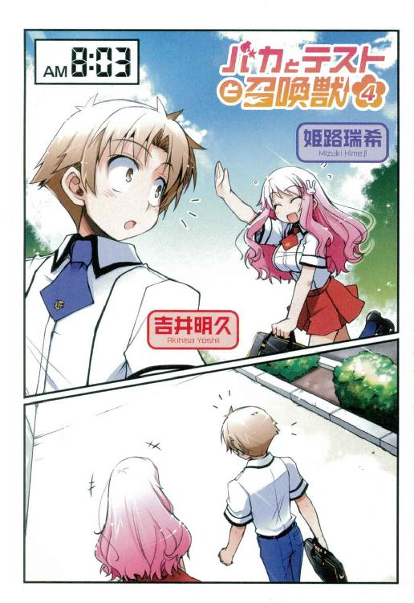
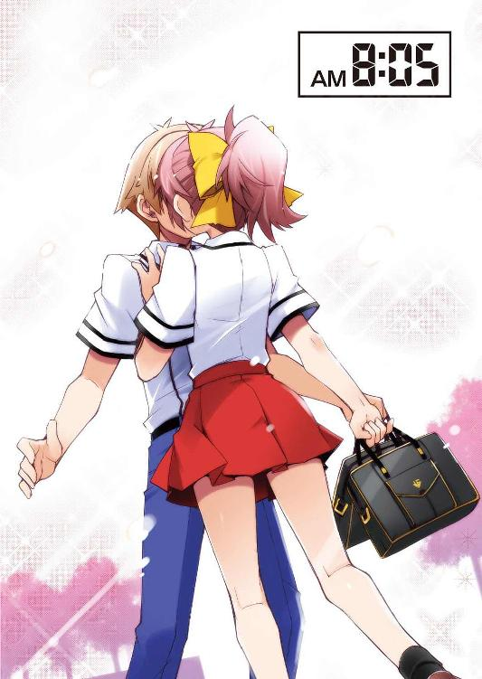
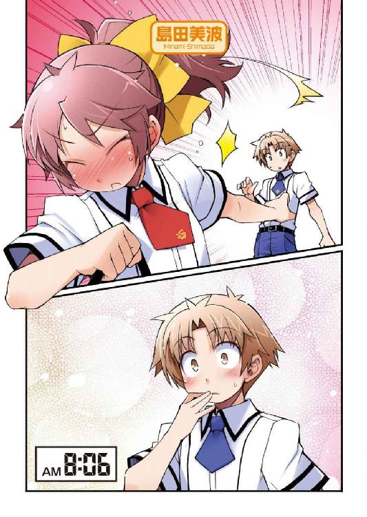
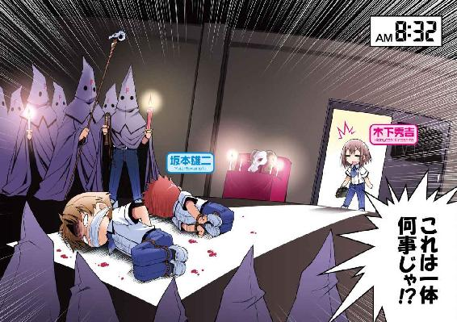
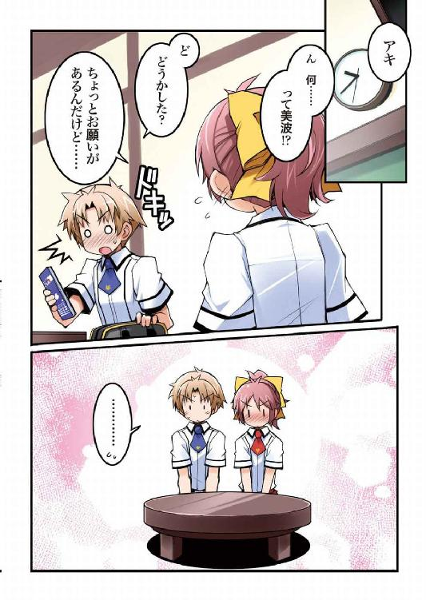
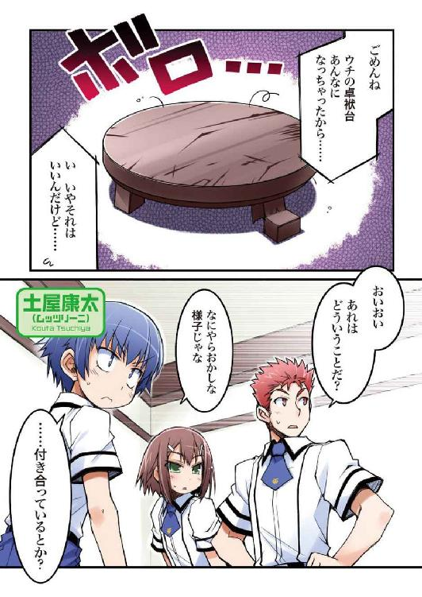
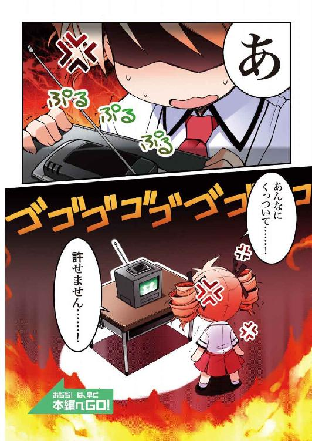
本作品の全部または一部を無断で複製、転載、配信、送信したり、ホームページ上に転載することを禁止します。また、本作品の内容を無断で改変、改ざん等を行うことも禁止します。
本作品購入時にご承諾いただいた規約により、有償・無償にかかわらず本作品を第三者に譲渡することはできません。
本作品は本文縦組で制作されております。ごらんになるリーディングシステムにより、表示の差が認められることがあります。
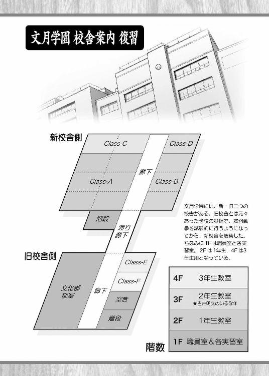
「なん――どわぁっ!? いきなりなにしやがる!?」
「......避けちゃダメ」
「頭突きが来たら避けるに決まってるだろうが！」
「......頭突きじゃない」
「？ じゃあなんだ？ ヘッドバットか？」
「......キス」
「よし。余計な動きは見せるな。手を頭の後ろに組んでからゆっくりとわかりやすく説明するんだ」
「......くちづけのこと。将来を誓い合った私と雄二がする当然の行為。接吻とも言う」
「待て。俺が言ったのはキスを知らないって意味じゃない。どうしていきなりそんなことをぐぁぁあっ！」
「......知っているって、誰と、いつ、どこでしたの......!!」
「ち、違う！ キスを知っているっていうのは意味を知っているだけで、経験があるというわけでは――」
「......ないの？」
「――ないとも言い切れなぎゃぁあああっ！ 噓だっ！ 見栄を張っただけで、まともな経験は一度もないっ！」
「......そう。それならいいけど」
「し、死ぬかと思った......。んで、なんで急にそんなことを言い出したんだ？」
「......あれ」
「うん？ あれは明久と島田か？ よく見えないが――島田が走り去っていったな」
「......さっきまでキスをしていた」
「マジか!? って、取り残された明久のヤツ、クラスの連中に囲まれ始めたぞ」
「......凄い殺気」
「お、ナイスボディ。顎にもいいのが入ったな。流石に多勢に無勢か」
「......動かなくなった」
「やれやれ。明久も相変わらずバカだな。あいつらはたとえキス程度であろうともソッチの経験者には容赦がないと有名だというのに」
「......ごめんなさい」
「うん？ どうした？ なぜ謝る？ 別に俺はしたことがないから大丈夫だぞ？」
「......実は、雄二が寝ている間に――」
「聞こえねぇ！ 俺には全くサッパリなんにも聞こえねぇ！」
「......大丈夫。責任は取るから」
「そういう問題じゃねぇだろ!? ――ハッ！ 殺気ぎゃぁぁああっ！」
『異端者を発見。確保しました』
『よし。連れて行け』
『はいっ！ 須川会長！』
「......あ......雄二......」
『審問会の準備は？』
『抜かりなく』
『ご苦労。これより臨時異端審問会を行うぞ！ 全員得物の点検を怠るな！』
『『『はいっ！ 須川会長！』』』
「......どうしよう。寝返りのせいで頰にしかしていないって、言いそびれた......」
バカテスト 英語
次の言葉を正しい英語に直しなさい。
『ハートフル ラブストーリー』
姫路瑞希の答え
『heartful love story』
教師のコメント
正解です。映画や本の謳い文句によく見かける単語ですが、たまにheartの部分を間違える人がいます。身近にある英語なのですが、意外とわかり難いようですね。
ちなみに日本語に訳すと『愛に満ちた恋物語』となります。是非そのような青春を皆で過ごしてもらいたいと思います。
島田美波の答え
『hurt full rough story』
教師のコメント
・hurt......怪我
・full......一杯の
・rough......荒っぽい
・story......物語
意図的に間違えたのでないかと思うほど綺麗に間違えていますね。
そのようなハートフルラブストーリーを演じるのは貴女だけだと思います。
霧島翔子の答え
『hurt full rough story』
教師のコメント
まさかもう一人いるとは。「アキ、目を瞑りなさいっ！」
それは全くの不意打ちだった。
目の前には長く揃った睫毛に大きな瞳。
馬の尻尾のようにまとめられた綺麗な髪からは仄かにシャンプーの香りがして。
そして、僕の唇には――柔らかく温かい、美波の唇の感触が伝わってきた。
なんだろう。何が起きているんだろう。どうして美波の顔がこんなに近くにあるのだろう。どうして僕はこんなに頭がぼうっとしているのだろう。
何もわからないでいると、美波は弾かれたように僕から離れて、
「そ、その......冗談とかじゃ、ないから......っ！」
そんな一言を告げて走り去ってしまった。
あはは。美波、随分と顔が赤かったな。まるでトマトみたいだ。
妙に冷静で俯瞰的にこの状況を捉えている自分がいる。
「美波ちゃん......やっぱり、明久君のことが......」
近くで呟く姫路さんの声が妙に気になった。
「吉井、歯を食い縛れっ！」
そして、その後のそれも全くの不意打ちだった。
目の前には硬く握り締められた大きな拳。
馬の疾走のように素早い踏み込みと細められた瞳からは明らかな殺意の香りがして。
そして、僕の頰には――固く暑苦しい、須川君の拳の感触が伝わってきた。
なんだろう。何が起きているんだろう。どうして須川君やＦクラスの皆が得物を構えてこんなに近くにいるんだろう。どうして僕はこんなに視界がグラグラするんだろう。
何もわからないでいると、須川君は弾かれたように僕から離れて、
「そ、その......冗談とかじゃ、ないからな......っ！ ......本気でコロス」
手を挙げて周りの皆に合図を出した。
「え!? え!? 待って待って！ 僕にも事情がわからな――ぎゃああぁあっ！」
今までにない殺気だ。なんだか全員本気の目をしているような!?
「美波ちゃん......やっぱり、明久君のことが......」
「いや姫路さん！ それはもういいから！ とりあえず助け――っ！」
と、そこで僕の意識は闇へと落ちていった。
☆
『諸君。ここはどこだ？』
『『『最期の審判を下す法廷だ！』』』
『異端者には？』
『『『死の鉄槌を！』』』
『男とは？』
『『『愛を捨て、哀に生きるもの！』』』
『宜しい。これより――二―Ｆ異端審問会を開催する！』
目を覚ますと、そこはサバトの会場だった。
「え？ あれ？ どういうこと？」
暗幕が引かれていてよく見えないけど、畳の感触からここがいつもの教室だということはわかる。ということは、教壇のあたりで覆面姿で騒いでいるのはＦクラスの皆なんだろうか。
「起きたか明久」
近くから聞き慣れた声。僕はそちらに体を向けようとして、初めて自分の手足が縛られていることに気がついた。
仕方がないので体全体で転がるようにして声の主の方を向く。すると、その先には僕と同じように手足を縛られて転がされている悪友の姿があった。
「......雄二、何やってんの？」
「......お前の巻き添えだ」
忌々しげに野性味たっぷりの顔をしかめて吐き捨てる。まさに檻に繋がれた野獣といった感じだ。
「巻き添えって？」
「お前のせいで『寝ている間に翔子にキスをされた』って話がアイツらにバレたんだ。とんだ迷惑だ畜生」
ふむふむ。霧島さんが、キス。雄二にキス。なるほどね――
「........................はい？」
いやいやいや。ちょっと待って欲しい。そんな簡単に聞き流していいものじゃないだろう。
霧島さんと雄二がキスだって？ あの美人で頭も運動神経も家柄も良い霧島翔子さんが、このブサイクで頭と性格の悪い坂本雄二とキス？ ははっ。そんなこと、質の悪い冗談もいいところだ。くだらなすぎて笑えもしない。
......けれど、もし。
あまり考えたくないことだけれど、もし。万が一にもそれが真実だとしたら。
そんなこと――神が許しても、この僕が許さない......っ！
「皆大変だ！ 坂本雄二に異端者の疑いがある！ 至急異端審問会の準備を始めるんだ！」
「待て明久！ お前、如月ハイランドの一件ではむしろキスをさせようとしていなかったか!? というか、お前こそが異端者だろうが！」
雄二がわけのわからないことをほざいている。僕が異端者だって？
「雄二、見苦しいぞ！ そうやって謂れのない疑いを僕にかけて自分の身を護ろうって魂胆だな！ その手は食うもんか！」
冗談じゃない。この世に生を受けて十六年。自慢じゃないが、キスなんて幸せな経験は僕には全くないっ！ ......まぁ、頰にしてもらったことはあるけど......。
「こ、このバカ野郎が......！ 信じられないのならあいつらの言っていることを聞いてみろ！」
合点がいかないけど、とりあえず雄二の言う通り耳を澄ませてみた。すると、聞こえてくるのはクラスメイトたちの妙な会話だった。
『――罪状を読み上げたまえ』
『はっ。須川会長。えー、被告、吉井明久（以下、この者を甲とする）は我が文月学園第二学年Ｆクラスの生徒であり、この者は我らが教理に反した疑いがある。甲の罪状は強制猥褻及び背信行為である。本日未明、甲が同Ｆクラスの女子生徒である島田美波（以下、この者をペッタンコとする）に対して強制的に猥褻行為を働いていたところを我らが同胞が確保。現在に至る。今後、甲とペッタンコの関係に対して充分な調査を行った後、甲に対して然るべき対応を――』
『御託はいい。結論だけを述べたまえ』
『キスをしていたので羨ましいであります！』
『うむ。実にわかりやすい報告だ』
え？ あれ？ キス？ なんだろう。そういえば、何かそんな記憶があるようなないような......。
「明久。あまりのショックに記憶が飛んでいるようだから教えてやる。お前は今朝、島田とキスをしたんだ。しかも姫路の目の前で」
雄二が僕に言い聞かせるように告げる。
キス。美波とキス。僕がキス。なんだろう。そうやって言われると本当に美波とキスをしたような気になってくる。
でも、そんなことはありえない。
「ははっ。冗談はよしてよ雄二。だって、あの美波が僕なんかにキスをするわけないじゃないか」
僕だってある程度は自分の格ってものを知っているつもりだ。部活に打ち込むわけでもなければ勉強ができるわけでもなく、他に何か取り得があるわけでもない。そんな僕にキスをしてくれる人なんて、きっと何も実態を知らない葉月ちゃんくらいなものだろう。
「まぁ、そう自分を卑下するな明久。確かにお前は容姿学力性格が最低だが、それらに目を瞑れば甲斐性と財力が皆無というだけじゃないか」
「この野郎！ 言うに事欠いて僕の取り得は肩たたきだけだと!?」
「その歳で肩たたき!? 反論するにしても他に何か取り得はなかったのか!?」
バカにするにもほどがある。手足を縛られていなければ摑みかかっているところだ。
「それはともかく、お前が島田とキスをしていたのは事実だ。証拠も押さえられているようだしな」
証拠って何、と聞き返す前に僕の目の前に一枚の写真がつきつけられた。
「............裏切り者には、死を」
写真を手にして低く呟くその相手は、クラスメイトのムッツリーニこと土屋康太。いつもは存在感を消して写真撮影に勤しむおとなしいヤツなのに、今は暗殺実行寸前の忍者のように静かな殺気を放っている。
そしてヤツが手にするその写真に写っているのは、僕によく似た男の子が美波によく似た女の子とキスをしている光景――っていうか、どう見ても僕と美波のキスシーンだ。
「えぇっ!? これホント!? アレは夢じゃなかったの!?」
「夢だったなら今こうして縛られるようなことはないんだがな」
「そ、そっか。それでこんなことになっているのか......」
うっすらとそんな記憶はあるんだけど、まさか本当のことだったなんて......。僕と美波がキス、か......。
「耳まで真っ赤になっているところ悪いんだが、質問がある」
「ち、ちがっ......！ これは、その、顔が熱いだけで......！」
「わかったわかった。んで、どうしてお前らはそんなことになったんだ？」
どうして、って......。
「そんなの、僕が聞きたいよ」
美波が急にあんなことをした理由なんて、見当もつかない。誰かに脅されたとか、僕を罠にハメるためとか、そういった理由だろうか。
「そのスポンジのような頭でよく考えてみろ。最近何か様子がおかしかったとか、どこかに思い当たるフシがあるんじゃないか？」
最近って言っても、ここのところ携帯電話が壊れていたから連絡もとれていない。
「う～ん......」
何だろう。何かあっただろうか。
「質問を変えよう。お前が島田と最後に会ったのは？」
最後に会ったとき。それは当然今朝会ったとき以外のことだよね。そうなると、
「えっと......強化合宿の最後の夜かな？」
「最後の夜？」
「うん。皆が寝静まった後、美波がこっそりと僕のところに来たんだよ」
「............なぜそれをおかしいと思わないんだ」
雄二が呆れ顔になっている。
「いや、だって、僕を殺しに来たものだと......」
「......それじゃ、夜に会う前には何を話していた？」
会う前の会話か。そうなると、やっぱりあのメールのことかな。
あのメールの内容は確か――
「告白みたいなことを言ってた」
「......は？ 島田がお前にか？」
「いや、僕が美波に」
「そんなことがあったのか」
「うん。そんなことがあったんだ」
「そうかそうか。なるほどなぁ」
うんうんと頷く雄二。
そしてその後に「............ふぅ～............」と大きく息を吐いたかと思うと、
「くたばれ」
メリィ......ッ
ヤツの靴裏が僕の顔にめり込んでいた。
「......っ！ 顔が......っ！ 顔の骨が陥没したような感覚が......っ！」
「なにが『わからない』だ！ 思い当たるフシだらけじゃねぇかバカ野郎！」
のたうち回る僕を雄二がまるでバカを見るような目で見ている。くそぉっ！ これ以上ブサイクになったらどうしてくれるんだ！
「んで、何て言ったんだ？」
気を取り直して雄二が質問を続ける。
何て言ったか？ あの時、誤解を招いたメールには何て書いたっけ。
えっと......ああ、そうだ。あの時のメールは確か、
「『雄二より好きだ』って」
「待て！ お前の好きの比較基準は俺なのか!?」
雄二が心底嫌そうな顔をして僕から距離を取る。物凄い誤解だ。
たとえ僕が同性愛に目覚めたとしても雄二だけはお断りだというこの気持ちをどうやって伝えたらいいのかを考えていると、怪しげな集会の主催者らしき人物（恐らく須川君）がこちらを見ていた。
「異端者、吉井明久。汝は自らの罪を悔い改め、裁きを受け入れるか？」
神妙な声で僕の返事を待つ須川君（？）。これは迂闊な返事をしたら命に関わりそうだ。
「あのさ、返事をする前に質問があるんだけど」
「聞いてやろう」
「裁きって、何をするの？」
尋ねると、須川君（仮）はわずかに目を細めて僕に告げた。
「まず、灯油とライターを用意して――」
「濡れ衣です！ 僕ほど教義に殉ずる信徒はいません！」
誤解でこんがり美味しく焼かれてたまるか！
「そうか。それならば、自白を強要するまでだ」
「言った！ 今いきなり『自白の強要』って言ったよ!? この裁判は無効だ！」
『そうだ！ 自白を強要しろ！』
『議事録を改竄しろ！』
「ねぇちょっと！ 皆ノリで言ってない!? 普通こういう時は自白の強要が事実だと認めちゃいけないと思うんだけど！」
この連中は本当に審問会の意味を知っているんだろうか。
「ええい、灯油とライターの用意はまだか！」
「自白させる拷問もそれなの!? 要するにどっちも処刑だよね!?」
「違うぞ吉井。罪を認めない場合は自白用と断罪用の二回があるから、一回分お得なんだ」
「騙されないぞ！ そんな洗顔フォームの増量キャンペーンみたいな売り文句を言われても僕は騙されない！」
そもそも灯油とライターを使っている時点で二度目はないと思う。
「雄二！ 雄二も何か反論しなよ！ このままじゃ僕らは焼死体だよ!?」
「てめぇら......！ やるならコイツだけをやれ！」
「雄二......ありが――違う！ その台詞、よく考えると僕を売って自分だけ助かろうとしているだけじゃないか！ 自分だけ良ければいいのかこのゲス野郎！」
普通は『やるなら俺だけをやれ！』だよね。あまりにも格好良く言うから、一瞬雄二に感謝しかけたじゃないか。
「男らしいじゃないか坂本。そこまで言うのなら、お望み通り吉井をやってやる」
そして未だに雄二の言葉に騙されている須川君（確定）。
「気付いて須川君！ このままだと被害者は僕だけだということに！」
声の限りに叫んでみるけど、盛り上がった雰囲気は収まる気配を見せない。
「では灯油の手配が遅れているようなので、ここはひとまず吉井に『特別バンジージャンプ』をやらせてみようと思う」
そんな中、突如須川君が告げたのはそこはかとなく死の香りが漂う種目だった。
「須川君。一応聞くけど、その特別バンジージャンプってどんなものなの？」
流石に僕でもバンジージャンプくらいは知っている。問題はどう『特別』なのかだ。
「そうだな......。多くを説明すると吉井に余計な不安を与えかねないから、ヒントしか言えないが――」
須川君が暗幕で閉ざされた窓を見るように顔を背ける。
「――パラシュートのないスカイダイビング、とだけ言っておこうか」
人はそれを死刑と呼ぶ。
「余計な不安も何もヒントだけで丸わかりだよ！ 紐無し!? 紐無しのバンジージャンプをやらせる気!?」
この連中は本気でヤバい。この場を逃れる為に、窓に体当たりして破片でロープを切れないだろうかと考えていると、
「明久」
隣から雄二の囁き声が聞こえてきた。
「え？ 何、雄二？」
「コレを使え」
雄二が須川君の目を盗んで、縛られた手で器用に何かを取り出す。
「雄二......。ありがとう......」
なんだかんだ言いながらも僕のピンチを救ってくれる悪友に感謝しながら渡された物を確認する。
............輪ゴム？
「足に巻きつけるといい」
自信満々に告げる雄二を見ながら思う。
ああそっか。コイツきっと頭に重度の疾患を抱えてるんだ。
「あのね雄二。嬉しいけど、こんなもの一本じゃ僕の体重は支えられないんだよ」
どう考えても千切れて終わりだ。
障害を抱えてしまった悪友に親切に説明をしてあげていると、僕のそんな言葉に雄二は不敵な笑みを浮かべて答えた。
「バカだな明久。それだけじゃないさ」
「え？ そうなの？」
なんだ。これだけじゃなかったのか。って、そりゃそうだよね。いくら雄二でもそれくらいはわかっているに決まってる。僕はすっかり早とちりを――
「もう一本用意してある」
自信満々に取り出されるもう一本の輪ゴム。
残念だ。雄二の障害はきっともう現代医学じゃ治せないほど末期なんだろう。
「あのね雄二。本数の問題じゃないからね？」
そうやって頭に障害を負ってしまった悪友に心を痛めていると、
「......停学明け早々、お前たちは何をやっているんだ......」
朝のＨＲにやってきた鉄人が額に手を当てて溜息をついていた。
「あ、先生！ 丁度いいところに！ 助けて下さい！ 校内暴力です！ クラスメイトの虐めなんです！」
「違います！ これは学内の風紀を護る為の聖戦です！ 吉井は不純異性交遊の現行犯なんです！」
そんな僕らの言葉を聞いて、思いっきり呆れ顔になりながら鉄人が告げる。
「あー......。なんでもいいが、お前たちは点数補充のテストは受けなくてもいいのか？ 強化合宿のせいで男子は全員点数が無いに等しいだろう？」
鉄人が言っているのは、試験を受ける為の申請のことだ。
普通の授業の時間にテストを受けたい場合は、先生の準備もあるので事前に申請が必要になる。このまま申請せずにいたら普通の授業になってしまうだろう。
強化合宿では最終的にどの教科も入り乱れての死闘になったようで、ほぼ全員が全ての教科の点数を消費していた。だから、僕らもいずれは点数の補充をしないといけないのかもしれないけど......
「「今はそれどころじゃありません！」」
前の試召戦争からまだ三ヶ月過ぎていないから、僕たちから試召戦争を仕掛けることはできない。しかも、僕らは最低設備のＦクラスだ。攻め込まれる心配もない。そんな当面は使いもしないようなテストの点数より、今からの僕の行く末の方がよっぽど重要な問題だ。
「やれやれ。お前らがそう言うなら構わんが......。とりあえず連絡事項だ。先週から行われていた試験召喚システムのメンテナンスだが、予定が遅れている。教師も動員して推進しているが、明日までは終わりそうにもない。その間は試召戦争ができないので注意するように。以上だ」
鉄人がなにやらごちゃごちゃ言ってから出て行ったようだけど、僕らの関心は専ら異端審問会だ。
「吉井！ 抵抗するな！ 往生際が悪いぞ！」
「くそっ！ 誰か、助け――そうだっ！ 姫路さん！ 姫路さんは!? 優しい姫路さんならきっと僕を助けてくれるはず！」
薄暗い教室の中を見回して姫路さんの姿を探す。可愛い上に頭も良くて身体の発育も良いというＦクラスのアイドルは自分の席に静かに座っていた。
「お願い姫路さん！ 僕を助けて！」
そんな彼女に必死に呼びかける。
けど、姫路さんは僕の声が聞こえていないかのようにぼうっとした様子で何かを呟いていた。
「美波ちゃん......やっぱり、明久君のことが......」
「ええっ!? まだそれやってるの!?」
もう三十分は同じ台詞を呟き続けている気がする。
万策尽きたか、と腹をくくったその時、
「こ、これは一体何事じゃ!?」
教室に一筋の希望の光が差し込んだ。
「秀吉！ 良かった......！ ずっと来ないから、てっきり今日は休みなのかと」
扉に手をかけたままの状態で驚いているのは、稀代の美少女と誉れも高い木下秀吉というクラスメイトだ。両親が戸籍の登録を間違えてしまったらしい、という噂が流れるほどに可愛らしい外見を持つ友人だけど、本人曰く性別は男らしい。
「今朝は少々支度に手間取ってしまったがゆえに遅くなったのじゃが......。明久、お主らは何をしておるのじゃ？」
教室は暗幕で光を遮られ、僕と雄二は蓑虫状態。そしてクラスメイトは覆面姿。登校してきて教室がこんな状態になっていたら普通は誰でも驚くだろう。
「木下。邪魔をしてくれるな。今我々は異端者である吉井明久と坂本雄二の処刑を行うところなんだ」
ついに審問会ですらなくなって、ただの処刑になったみたいだ。
「そうじゃったのか。しかし、雄二はわからんでもないが、明久は何をしたのじゃ？」
「よく聞いてくれた木下。異端者――吉井明久はよりによって我らが聖域である文月学園敷地内で朝っぱらから島田美波と接吻などという不埒な行為を――」
ガラッ
須川君の口上の途中、秀吉が入ってきたのとは別の扉が開いた。
そして、耳まで真っ赤になった顔を俯けて足早に自分の席に向かう女子生徒が現れた。噂をすればなんとやら。丁度今名前を呼ばれた島田美波その人だ。
「「「............」」」
教室内が水をうったように静まり返る。
いつもと違うこの妙な雰囲気に、Ｆクラスの誰もが言葉を発せずにいた。
「おはようございます皆さん。今日は諸事情により布施先生の代わりに私が授業を――どうしたんですか皆さん？」
一時間目の授業の先生が、その様子を見て目を丸くしていた。バカテスト 世界史
以下の問いに答えなさい。
『西暦１４９２年、アメリカ大陸を発見した人物の名前をフルネームで答えなさい』
姫路瑞希の答え
『クリストファー・コロンブス』
教師のコメント
正解です。卵の逸話で有名な偉人です。コロンブスという名前は有名ですが、意外とファーストネームが知られていないことが多いです。意地悪問題のつもりでしたが、姫路さんには関係なかったようですね。よくできました。
清水美春の答え
『コロン・ブス』
教師のコメント
フルネームはわかりませんでしたか。コロンブスは一語でファミリーネームであって、コロン・ブスでフルネームというわけではありません。気をつけましょう。
島田美波の答え
『ブス』
教師のコメント
過去の偉人になんてことを。なんだろう。この妙な雰囲気は。
教室の中は今までにないくらい静まり返っている。いつもの騒がしいＦクラスが噓のようだ。
一言も無駄口を叩かないクラスメイトたち。教室には先生が黒板にチョークで字を書く音が響く。
「......ん？」
ふと、誰かの視線を感じてあたりを見回してみた。
すると目が合いそうになって慌てて顔を伏せる人がいた。
――美波だ。
な、なんだろう。まさかずっと僕の方を見ていたんだろうか。それってなんだか、その......好きな人にする仕草、みたいじゃないか......。
そうやって考えていると鼓動がドンドン速くなっていく。
う、うわ......。なんだか僕も恥ずかしくなってきた......。
頰が火照ってくるのがわかる。あのキス、もしかして美波は僕のことが......？ けど、今まで散々殴られてきたし、僕が好かれるような要素なんて......
『では須川君。この場合3molのアンモニアを得る為に必要な薬品はなんですか？』
『塩酸を吉井の目に流し込みます』
『違います。それでは、朝倉君』
『塩酸を吉井の鼻に流し込みます』
『流し込む場所が違うという意味ではありません。それでは、有働君』
『濃硫酸を吉井の目と鼻に流し込みます』
『『それだっ!!』』
『それだ、ではありません。それと答えるときは吉井君の方ではなく先生の方を見るように』
そんないつもと違う空気の中、一時間目の終了を告げるチャイムが鳴り響いた。
「えー......、今日はここまでにします」
先生が大きな溜息を一つついて教室から出て行く。
『吉井のヤツ、島田と目と目で通じ合っていやがったぞ......！』
『島田は狙い目だと思っていたのに、あのクソ野郎......！』
『畜生......！ 姫路、木下に続いて島田までヤツに持っていかれたら、このクラスの希望はアキちゃんしかいねえじゃねぇか......！』
殺意の籠められた視線が飛び交う中、誰かが僕の席にやってくるのが見えた。
ピコピコと馬の尻尾を動かしながら歩いてくるのは、
「み、美波？」
「アキ。お、おはよ......」
目を伏せたままの美波から挨拶が聞こえてくる。
「うん、おはよ」
なぜか僕も目を見られない。相手があまりに怒っていて目が見られないことはよくあるけど、こんなのは初めてだ。
「あ、あのねアキ。お願いが二つあるんだけど、いいかな......？」
「お願い？ な、なにかな？」
お互いに目を見ない会話が続く。
「えっと、一つは、アキの卓袱台を一緒に使わせて欲しいんだけど......」
「へ？ 卓袱台？」
「うん。ウチの卓袱台、先週美春と色々あって使いにくくなっちゃって」
言われて見てみると、美波の卓袱台がボロボロになっていることがわかる。天板は傷だらけだし脚も一本折れている。あれじゃあ使いにくいことこの上ないだろう。
「アキ。ウチと一緒でもいい？」
「あ、うん。いいけど」
「そう。ありがとっ」
パッと花が咲くように笑うと、
「じゃ、す、座るわね......」
美波は僕の隣に座った。
うん。それはいいんだけど......。
「............」
「な、なによアキ。なんで黙り込むのよ」
「いや。その、別に......」
き、気のせいかな......。妙に距離が近くない......？
「そ、それとねアキ。二つ目のお願いなんだけど......良かったら、その......今日のお昼、一緒に食べない？」
二つ目は昼食のお誘い。別に今までだったら何気ない日常の光景だったのかもしれないけど、今日は何かが違う。
「あ、そ、そうだね。それじゃ、お昼に水飲み場で......」
返事をするだけなのに、なんだか異様なまでに緊張した。
「ううん。そうじゃなくてね、ウチがアキの分も作ってきたから――」
美波が手に提げた鞄から何かを取り出そうとしたその時、
「お姉さまっ！ 何をしているんですか!? そんなに豚野郎に密着して!?」
突如教室内に悲鳴のような制止の声が響き渡った。
「み、美春!? ウチの邪魔をしにきたの!?」
「当然ですっ！ そこの豚野郎がお姉さまに密着している姿を見て黙っていられるはずがありませんっ！」
血の涙を流さんばかりに僕を睨みつけているのはＤクラスの女子、清水美春さん。名前の通り女の子なんだけど、なぜか男子よりも女子である美波に恋心を抱いてしまったというちょっと変わった子だ。
「み、密着って、仕方ないでしょ!? 代わりの卓袱台なんてないし、狭いんだからくっつかないとダメだし......」
反対側に座れば充分広いけど、授業を聞く為にはどうしても同じ側に座る必要がある。狭くなるのも仕方ないと言えば仕方ない。
「お姉さま。それなら姫路さんのところでいいじゃないですか！ どうしてその豚野郎のところにする必要があるのです！」
「そ、それは......。だって、ほら、瑞希はきちんと勉強するから邪魔したら悪いでしょ？ その点、アキなら邪魔になってもならなくてもどうせ成績は悪いんだし......」
「美波。僕、微妙に悪口を言われている気がするんだけど」
それなのになぜかホッとしてしまう。どれだけ僕は罵倒に慣れているんだろう。
「あの、美波ちゃん。私は別に邪魔だなんて思いませんから、こっちに来て下さい。その......色々と話したいこともありますし......」
それを聞いていた姫路さんがおずおずと美波に呼びかける。さっきまでの錯乱状態はやっと終わったみたいだ。
「気持ちは嬉しいけど......。でも、瑞希は優しいから、ウチが邪魔でも我慢しちゃうでしょ？」
「い、いいえっ。本当に邪魔じゃないですから」
「そうですお姉さま！ 席を移動して、手作りのお弁当は美春と一緒に食べましょう！ お姉さまが昨日お弁当用の食材を買っている姿を確認してから、美春は何も食べずにたっぷりとお腹を空かせてきましたから！」
「でも、これはその、アキの為に」
「お姉さまが朝の四時に起きてわざわざお手製のタレで下味をつけた唐揚げとか、ちょっと奮発して買った挽肉で作ったハンバーグとか、産地に気を遣って選んだじゃがいもで作ったポテトサラダとか、考えるだけで美春は、美春は......！」
「待ちなさい美春！ どうしてアンタがそこまで知ってるの!?」
「しかもご飯のところにはハートマークですよ!?」
「美春――っ!?」
美波が首まで真っ赤になって叫んだ。よほど恥ずかしいのだろう。
「あのね、美春。よく聞いて。今までは我慢してきたけど、これからはそういうことはやめて欲しいの。だって――」
美波が赤い顔のまま、清水さんにはっきりと告げる。
「――だって、ウチはアキと付き合っているんだから」
「畳返しっ!!」
シュカカカカッ
咄嗟に畳を盾にした僕のもとに無数のカッターが飛来する。危なかった。フローリングの教室だったら命を落としているところだった。
『『『――チッ』』』
舌打ちが教室中から聞こえてくる。刺さっている本数から察するに、一人頭二本以上はカッターを投げているようだ。おかしい。普通は学校に持ってくるカッターなんて一本あれば充分のはずなのに。
「お、お姉さま......？ 付き合ってるなんて、冗談、ですよね......？」
打ちひしがれたようによろめく清水さん。そんな彼女に、美波は静かに首を横に振って答えた。
「冗談なんかじゃないわ。ホントの話」
「そ、それじゃ、お姉さま。美春の幻覚だと思った今朝のキスも、本当に......？」
何かを思い出したのか、美波は一瞬動きを止めてから、
「......うん」
小さく頷いた。
そ、そっか。やっぱりあれは夢でも幻覚でもなかったのか。
「だからね、美春。これからもウチの」
「......男なんか」
「あくまでもお友達として」
「......男なんかが存在するから、お姉さまが......」
清水さんがプルプルと震え出した。
「美春、聞いてる？」
「男なんかが存在するからお姉さまが惑わされるんですーっ！」
と思ったらその直後、彼女は弾かれたように動き出した。その矛先は――僕!?
「この豚野郎を始末します！ そして美春が第二の吉井明久としてお姉さまと結ばれるのです！」
「ちょ、ちょっと清水さん!? かなり錯乱してない!? 僕を始末したところで入れ替わることは難しいと思うけど!?」
それ以前に、僕と美波って付き合っているんだっけ!?
「極力身体に傷をつけないように始末した後、剝いだ皮を被って吉井明久になりすまします！」
「それ凄くグロいよ！ ちょっと本気で考えていそうだし！」
「大丈夫です！ 日本昔話で狸さんもそうしていました！」
「しかも原典は意外と可愛い！」
襲いかかってくる清水さんの動きは尋常じゃないほどに速い。僕も必死に逃げ回るけど、このままだと捕まるのは時間の問題だ。
この動きに対抗できるのは、ヤツしかいない。
「助けてムッツリーニ！ 清水さんを止めて！」
現代社会に生まれた忍者、土屋康太ことムッツリーニならきっとこの動きについていける。任せたよ、ムッツリーニ......！
「............今、消しゴムのカスで練り消しを作るのに忙しい」
《練り消し》
∧
《友人の命》
僕の命も随分軽く見られたものだ。
「くそっ！ 練り消し作ってるフリをして飛び回る清水さんのスカートを目で追っているムッツリーニなんて大っ嫌いだ！」
「............!!（ブンブン）」
否定のポーズを取りながらも目線は外さない。異名は伊達じゃない。
「男なんてこの世からいなくなってしまえばいいんですっ！ お姉さまに必要なのは美春なんです！」
「待って清水さん！ キミにだってお父さんはいるでしょう？ 男なんていなくなれなんて、そんな哀しいことを言っちゃダメだよ！」
「アレは誰よりも最初に消えるべき男ですっ！」
咄嗟にエプロン姿の狂戦士が脳裏をよぎる。
どうしよう。否定材料が見当たらない。
「え、えっと......また何かあったの？」
「......思い出したくないです」
おぞましいものを思い出したかのように身震いする清水さん。なんだろう。一緒にお風呂でも強要されたのだろうか。
「とにかく豚野郎は消えるべきです！ そして美春はお姉さまと結婚して、生まれてくる娘にお姉さまの『美波』から字を取って『美来』と名付けるのです！」
「待つんだ清水さん！ 息子が生まれたらどうするんだ！」
「男なんかが生まれるのなら『波平』で充分です！」
「そんな、あんまりだよ！」
「二人とも！ その前にウチと美春じゃ子供ができないって気付きなさいよ！」
それでも一応美波から一文字取っているあたりは流石と言っておこう。Ｄクラス所属だけあって隙がない。
「さぁ、五秒あげます。神への祈りを済ませて下さい」
「く......っ！」
ゆっくりと清水さんが近付いてくる。万事休すか......？
ガラッ
「さぁ、授業を始めるぞ。今日は遠藤先生は別件で外しているので俺がビシビシ――ん？ やれやれ......また清水か......。授業が始まるから自分の教室に戻るように」
タイミング良く扉が開き、鉄人が姿を現した。そして清水さんを見て溜息をつく。
また、って言っているからには先週の僕らの停学期間中に何かがあったんだろうか。
「きょ、今日は先週までとは違って特に大事な用なんです！ 西村先生、今だけは美春を見逃して下さい！」
「特に大事な用？ それはどんな用だ？ まさかまた先週みたいに『邪魔者のいない教室でお姉さまと一緒に授業を受けたいんです』とかじゃないだろうな」
なんてわかりやすい子なんだろう。
「いいえっ！ 今日は『この教室の男子を全て殲滅する』という特に大事な――」
「今後この教室への立ち入りを禁じる」
ピシャン
鉄人は清水さんを教室の外へ追い出して扉を閉めた。
『お、お姉さまっ！ まだお話が！ せめてその豚野郎から席を離して貞操を――』
ドンドンドンと清水さんが扉を叩く音が聞こえてくる。
「清水。最近のお前の行動は目に余るものがある。......そんなに生活指導を受けたいのか？」
途端に扉を叩く音が静かになった。
鉄人の生活指導。幾度となく受けている僕と雄二でも未だに慣れることはない地獄。ましてや耐性のない人だったら、それはこの上ない恐怖のはずだ。
『お姉さま......！ 卓袱台だから豚野郎の近くにいるというのなら、美春にも考えがありますからね......！』
覗き窓越しに僕を睨みつけながら不穏当な言葉を残すと、それ以上は抗うこともなく、清水さんは僕らの教室を後にした。
「さあ全員席に着け。教科書86ページから始めるぞ。今日の内容は――」
あとは何事もなかったかのように授業が始まる。遠藤先生は他のクラスの試験監督でもやっているんだろうか。そのせいで代理が鉄人になるなんて、災難もいいところだ。
「――〝I wish I were a bird.〟これは仮定法過去という特殊な過去形で――」
とは言え、来てくれたのが鉄人だったおかげで助かったのも事実だ。鉄人がああ言った以上、清水さんはこの教室にやってくることはできないだろう。
「――つまり直接的な日本語訳は『私は鳥であったことを望む』となるが――」
けど、僕には彼女がその程度で美波のことを諦めるとは思えない。いや、その前に僕と美波が付き合っているというのは誤解だし――
サワッ
「ひぁっ！」
考え事をしていると突然首筋にくすぐったい何かの感触がして、肺から空気が搾り出された。
（あ、ごめんねアキ）
美波が小声で謝りながら髪の毛を手で押さえる。さっきの感触は美波の髪の毛か......。
（い、いや、別にいいけど......）
まだこそばゆいので首筋に手を当てる。よく女の子が『中途半端な長さにしていると首がくすぐったくてイヤ』と言っているのはこういうことなんだろう。確かにこれは耐え難い感覚だと――
サワッ
「ひぁっ！」
また例の感触。目をやると、今度は美波が自分の髪の毛を片手に楽しげにこちらを見ていた。
（アキってば、『ひぁっ！』って。変な声）
こ、今度のはわざとか。く......っ！ 僕をからかっているな！
故意であるなら仕返しをしない手はないだろう。座っている場所が近いことで攻撃が可能になるのは自分だけじゃないと教えてやるっ。
と言っても僕の髪は短いから美波に同じことはできない。筆のような物があればいいんだけど何かあったっけ。
思案すること数秒。ふと、前に筆箱に入れておいた物の存在を思い出す。片付けた覚えはないから、多分まだ入っているはずだけど......。
目的の物を取り出そうと筆箱の中を漁る。
（......アキ、なにしてるの？）
（勿論仕返しの準備だよ。コイツで美波に同じことを――）
（............）
サワッ
「ひぁっ！」
三度あの感覚。
（ず、ズルいぞ美波！ 今度は僕の攻撃のはず！ 邪魔はナシだよ！）
（そんなもの用意されたら邪魔するに決まってるでしょ!? 思いっきりインクがつくじゃない！）
美波に手を押さえつけられ、僕は持っていた筆ペンを落としてしまった。僕の攻撃手段が......っ！
（くそっ！ それなら美波の髪を使うまでだ！）
（ちょ、ちょっと!?）
僕に摑ませまいと髪を押さえる美波の頭に手を伸ばす。狭いスペースだし、そんな抵抗は無いに等しい。
程なくして美波の束ねられた後ろ髪は僕の手中に収まった。よし。これで思いっきり反撃を、反撃を――
（............）
（......あ、アキ？ どうしたの？）
急に動きを止めた僕を訝しんで美波が顔を覗き込んできた。
（いや、その......）
思わず言いよどんでしまう。
何かがおかしい。これは僕の知っている髪の毛というものじゃない。僕の知っている髪の毛というものはこんなに手触りの良いものではないし、こんなに良い匂いがするものでもないし、ましてや触っていてドキドキするようなものではない。だとしたら、これは僕の知らないものなのだろうか。見た目は僕の頭にもあるような普通の髪の毛だけど、これは髪の毛であって髪の毛ではない。そうなると、これは――
（なるほど。ヅラか......）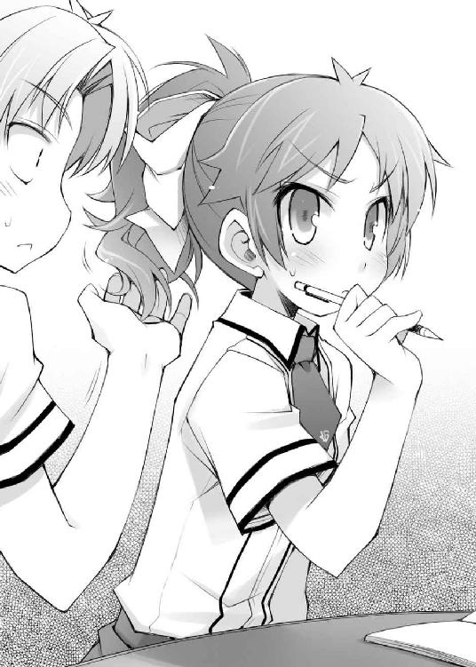
（アンタ何言ってんの!?）
ひっぱりすぎて思わぬ事故が起こったりしないように手を離す。美波も苦労してるんだな......。
（こらぁっ！ 物凄い誤解したまま手を離さないでよ！ きちんと触って確かめなさいよね！）
美波は頭の後ろに手をやると、スルッと何かを抜き取った。そしてその直後、束ねられていた柔らかそうな髪の毛が宙に広がる。陽の光を受けて流れるそれは、まるで絹のように艶やかで、銀細工のように煌びやかだった。
（これでもきちんと手入れしている自慢の髪なんだからね！ ヅラ扱いなんて冗談じゃないわ！ 触って確かめてみなさいっ！）
ヘアゴムを外して解かれた髪を一房、美波が僕に手渡してくる。
けど、触って確かめるまでもなかった。
（ごめん、美波。僕の誤解だったよ）
（？ 怪しいわね。本当にちゃんとわかったの？）
疑わしげな視線を僕に送る美波。でも、僕は本当にわかっている。だって、
（勿論だよ。いくら僕でも、その、こんな............を作り物と間違えたりはしないよ）
（こんな、何？）
（そ、その......、こんな、綺麗なもの、を......）
（......え......？）
そう。いくら僕でも、こんなに綺麗なものを紛い物と間違えるほどバカじゃない。これは正真正銘本物の――
『『『もう我慢ならねぇ――っっ!!』』』
そんな時、突如教室中から怒号があがった。
慌てて顔を上げると、見えるのはカッターを構えて僕の方を向いているクラスメイトたち。一体何事!?
『さっきから見てりゃあ、これ見よがしにイチャイチャしやがって！』
『殺す。マジ殺す。絶対的に殺す。魂まで殺す』
『......お姉さまの髪に触るなんて......八つ裂きにしても尚、赦されません......！』
『出入り口を固めろ！ ここで確実に殺るぞ！』
全員が一斉に投擲モーションに入る。そうはいくかっ！ 僕の畳返しを破れると――
『全員カッターの投擲終了後、間髪容れずに卓袱台を叩きつけるのですっ！ 決してお姉さまに当たらないように注意するのですよっ！』
『『『了解っ！』』』
くぅ......っ！ なんていう的確な指示だ！ カッターで動きを止めて卓袱台の圧倒的な質量で止めを刺す。四方からの攻撃である以上、僕に逃げ場はない。おのれ、流石は清水さんだ。Ｄクラスに所属しているだけあって頭が良――
痛烈な違和感。
「お姉さま！ 早くこちらに避難して下さい！ そんな豚野郎と一緒にいると危険です！」
「清水さんいつの間に!? しかも皆どうして清水さんの言うことを聞いて卓袱台まで構えてるの!? クラスメイトを大事にしようよ！」
「美春、まだウチのことを諦めてくれないの？ こんなこと続けても、お互い辛いだけなのに......」
「お姉さまはそこの豚野郎に騙されているだけなんです！ お姉さまのことを本当に想っているのはこの美春以外――」
「お前ら！ 今は授業中だぞ!!」
言い争う僕らに、とうとう鉄人の一喝が入った。
教室が急に静かになる。鉄人の怒声の効果は抜群だ。
「清水。授業はどうした？」
「そ、それどころじゃありません......！ お姉さまが」
「清水」
低い声で鉄人が静かに名前を呼ぶと、それだけで清水さんは押し黙った。
「二度目の警告だ。おとなしく自分の教室に戻れ。それと、もう一度言うがこの教室への出入りを禁止する。わかったな？」
「......わかりました」
不承不承といった体で清水さんが教室から出て行く。その時、またも僕を親の敵のように睨みつけて行った。
「お前らも授業中に遊ぶんじゃない。そういうことは休み時間にやれ」
言われた通り卓袱台を元の位置に戻し、カッターをしまうクラスメイトたち。
こうして、この場は鉄人のおかげで事なきを得た――かのように思えた。
☆
休み時間。飛び交うカッターや卓袱台をやり過ごして僕がトイレから戻ると、いつもの三人――雄二、秀吉、ムッツリーニの三人だ――が雄二の席で顔を突き合わせて何かを話し合っていた。なんだろう。
「どうしたの三人とも。そんな真面目な顔なんかしちゃって」
「む、明久か。丁度良いところに来おったな」
秀吉が僕にも座れといった具合に隣を空けたので、そこに座って胡坐をかく。
「なに？ また何かトラブル？」
「............（コクリ）」
「ああ。お前のせいで面倒なことになりそうだ」
溜息混じりの雄二の台詞。そっか。またトラブルか。このクラスは本当に休む暇なく色々起こって大変だなぁ......。
「それで、面倒なことって？」
「............Ｄクラスで試召戦争を始めようとする動きがある」
「試召戦争？ Ｄクラスが？」
テストの点数がその強さになる試験召喚獣を用いた戦いである試召戦争。その勝敗はクラスの設備を左右するのでとても重要なものだけど、
「別にＤクラスがＢクラスに攻め込んでもあまり僕らに関係ないんじゃないの？ どうせ僕らはまだ試召戦争を仕掛ける権利はないんだし」
四月に既に試召戦争を申し込んで負けてしまった僕らＦクラスは、そのペナルティとして三ヶ月間戦争を申し込む権利を剝奪されている。戦争を申し込めない以上、他のクラスがどう動いていようと関係ないはずだ。
「お主の言う通り、Ｄクラスの目的がＢクラスであれば問題はないのじゃが......」
「え？ 違うの？ だとすると、まさかＡクラス狙いとか？」
ちなみにＣクラスは前の試召戦争でＡクラスに負けているので、今はＤクラスと同等の設備になっている。同じ設備である以上、Ｄクラスに狙われることはないはずだ。
「お前は阿呆か。それなら面倒なことなんて言うわけがないだろう」
「だとしたら、まさか......」
「............Ｄクラスの狙いはこの教室、Ｆクラス」
「えええっ!?」
そんな馬鹿な！ ありえない！
「だって、僕らはまだ試召戦争をする権利は無いはずだよね？」
「ああ。確かに『Ｆクラスから他クラスへ試召戦争を申し込む権利』は無いな。だが、だからと言って試召戦争に無関係というわけじゃない。申し込むことはできないが、申し込まれたら応戦しないわけにはいかないからな」
試召戦争のルールとして、負けたクラスは三ヶ月間試召戦争を申し込むことができない。これは試召戦争の泥沼化を防ぐ為に作られたルールなんだけど、このルールには負けたクラスは試召戦争に参加できない、とは書かれていないらしい。
「けど、僕らは最低設備のＦクラスなんだし、攻めてくる相手なんていないはずじゃないの？」
下位クラスが上位クラスに勝ったらそのメリットは大きい。なにせ、設備の入れ替えなのだから。けど、上位クラスが下位クラスに勝っても、上位クラスは設備が向上しないのだから何のメリットもない。負けた下位クラスの設備がランクダウンするだけだ。
「だからさっき言っただろ？ お前のせいで面倒なことになりそうだ、と」
僕のせい？ 僕が何かしたっけ？
「明久よ。相手はＤクラスじゃ。思い当たるフシがあるじゃろう？」
えっと、相手はＤクラス。思い当たるフシって言うと――
「......もしかして、清水さん？」
「............（コクリ）」
ムッツリーニが小さく頷いた。
「やってくれたな明久。お前が島田とイチャついてくれたおかげで、ヒートアップした清水はＤクラスの連中を巻き込んで俺たちに八つ当たりをするつもりだぞ」
「そ、そんな！ 僕は全然そんなつもりは......！」
「じゃが、お主にそんな気はなくとも清水はそうは思っておらん」
「それに清水が言っていただろ？ 卓袱台だからナントカって。お前と島田の席を離す為に俺たちの机をまたミカン箱にするつもりのようだな」
試召戦争で負けたら僕らの机はまたミカン箱になってしまう。そうなると確かに相席はできなくなる。どうやら清水さんの目的はその辺にありそうだ。
「け、けど、Ｄクラスだって全員が乗り気なわけじゃないでしょう？ そんな目的でクラスの皆が関わる戦争をするとは思えないよ。Ｄクラスの代表だって反対するんじゃないかな」
Ｄクラスの代表は以前勝負したことのある平賀君という男子生徒だ。設備を入れ替えなかったという貸しだってあるし、強化合宿では協力して一つの目的の為に行動した。僕らを陥れる為だけの戦争に賛成するとは思えない。
「そこで今の状況が問題になる。今俺たちは例の集団覗きの主犯だ。普通の女子は皆俺たちに良い感情を抱いていない。むしろ自分たちの手で罰を与えたいと考えているくらいだろうな」
「お主も知ってのとおり、Ｄクラスの代表は男子生徒じゃ。今の覗き犯扱いのような状況では発言力は皆無じゃろう。怒りに燃える女子一同と嫉妬に燃える清水を抑えきれるとは思えん」
「そ、そんな......」
このままだと、ミカン箱にござというあの酷い設備に逆戻りだ。いや、まぁ今も充分酷いもんだけど......。
「雄二、攻め込まれたら勝つ自信はある？」
「苦しいな。うちのクラスの連中は朝からの騒ぎのせいで点数を補充できていないし、女子生徒はわずかに二人だけ。万全の態勢であっても作戦がなければ太刀打ちできないというのに、点数が残っているのが姫路と島田だけとなると、よほどのことが無い限り勝ち目は無いな」
男子生徒は全員が強化合宿の時に点数を消費してそのまま停学になっている。今日補充しなければその戦力は無いに等しいだろう。女子は僕らの停学期間中に補充をしているだろうから問題ないとは思うけど。
「要するに、今の状況じゃと戦力は女子のみということじゃからな。ワシらのＦクラスに女子は二人、Ｄクラスには二十人以上。いくら姫路がおるとしても戦力差は歴然じゃな」
たとえ姫路さんが十人分の働きをしたとしても、その差は倍近い。これは相当に苦しい状況だ。
「ってなワケで、今回の試召戦争は回避する方が賢明だな。勝ったとしてもＤクラス程度の設備じゃあまりメリットが無いし、折角貸しがあるクラスをわざわざ敵に回すこともないだろう」
「え？ 回避できるの？」
「お前と島田次第だけどな」
そう言って、雄二はあたりをキョロキョロと見回し始めた。
「どうかした、雄二？」
「ああ。島田が近くにいるかと思ってな」
「美波ならさっき姫路さんとどこかに行ったけど」
休み時間になるなり、どちらからともなく姫路さんと美波は合流して教室を出て行った。随分と真剣な顔をしていたけど、大事な話でもしているんだろうか。
「修羅場じゃな」
「修羅場だな」
「............修羅場」
「え？ あの二人、喧嘩でもしているの？」
そう言えば、今日は二人ともどこか様子がおかしかった。僕らがいない一週間で何かあったんだろうか。
「それより明久、一つ確認しておきたいことがある」
「ん？ なに？」
「島田とお前は付き合っているのか？」
雄二の一言が僕に突き刺さった。
そう。朝からの騒ぎもあってあまり深く考えていなかったけど、その話はハッキリさせておかないといけないことだった。美波曰く、僕らは付き合っているらしいんだけど、僕にはそういった話をした覚えが全然ない。
「僕の記憶だと、付き合ってはいない、と思う......」
もしも付き合っているという話が事実だとしたら、僕は今最低なことを言っているんだろう。
「じゃが、島田の態度は明らかに付き合っている者のそれじゃぞ？」
「うん。それは多分、僕の送った間違いメールが原因で――」
三人に強化合宿中に起こった出来事を説明する。告白とも取れるようなメールを送っちゃったけど、それは誤解だという話だ。
「なるほどのう。明久も明久じゃが......雄二、お主も素晴らしいタイミングでやらかしたものじゃな......」
「全くだよ雄二。腹を切って詫びるべきだよ」
「う......。まぁ、確かに悪かった。すまん明久」
「............けど、そもそもの原因は明久の確認不足」
「うっ。確かに」
ムッツリーニの言う通り、雄二の責任はあくまでもフォローができなくなったという点だけだ。本来の原因は他の誰でもない僕にある。雄二を責めるのはお門違いだ。それに、仕返しもしてあるしね。
「だが、誤解だというのなら話は早い」
「え？ 何が？」
「Ｄクラスとの試召戦争の話だ。島田の誤解を解いてお前らがいつもの姿に戻れば清水もおとなしくなるだろう。そうすればＤクラスは俺たちに不満はあっても、開戦するほどの意気込みがある核がいなくなって、試召戦争の話は流れる。俺たちはいつもの日常を取り戻して万事解決というわけだ」
いつものように雄二が解決策を提示してくれていると、突然扉が開いて誰かが駆け込んできた。
「あ、あの、明久君っ！ 聞きたいことがありますっ！」
息を切らして僕の席にやってきたのは姫路さんだった。
「え？ な、なに？」
普段はおっとりしている姫路さんにしては珍しい剣幕に、ちょっと驚いてしまう。
「そ、その......っ！ あ、明久君は......美波ちゃんに告白したんですか......？」
徐々に尻すぼみになっていく姫路さんの台詞。けど、言わんとしていることはきちんとわかった。
「え、えっと......それなんだけど......」
少し言い辛い。なんだか美波に悪いことをしている気がする。
「姫路、その話なんだが、島田も一緒の方がいいだろう。どこにいるかわかるか？」
雄二が会話に割って入る。ちょっと助かった。
「美波ちゃんなら、さっきまで一緒に屋上にいましたけど......」
「よし。それなら俺たちも屋上に行くか。ここで話すのもなんだしな」
屋上か。それなら人も少ないし話し易そうだ。
「そうだね。姫路さんには往復になっちゃって申し訳ないけどね」
「あ、いえ。私は全然構いませんので」
「んじゃ、行くか」
「うん」
席を立って屋上に向かう僕ら。その途中、雄二がムッツリーニに話しかけていた。
「ムッツリーニ。屋上にヤツの盗聴器があるか、確認できるか？」
「............多分、ある。Ｆクラスにも仕掛けてあった」
ヤツというのは清水さんのことだろう。
「Ｆクラスにあったものはどうしたの？」
「............さっきの授業中に外しておいた」
流石ムッツリーニだ。相変わらず仕事が早い。
「そうか。だとすると、清水はさっきの俺たちの会話は知らないってことだな」
「............（コクリ）」
そうなると清水さんには別の方法で僕らの関係が誤解だということを伝える必要がある。屋上に盗聴器があるのなら、きっとそれで清水さんは確認するんだろうけど――それって録音されているってこともあるんだよね。だったら、
「あのさムッツリーニ。屋上にも盗聴器があったら、外すか少しの間だけ使えないようにしてもらえないかな？」
ただでさえ勘違いさせるなんていう失礼なことをしたのに、それが記録に残るようなことがあったら美波に申し訳なさすぎる。
「............わかった」
ムッツリーニが承諾してくれたところで丁度階段が終わり、屋上に続く扉が見えた。
いつかのように先頭の雄二が扉を押し開ける。すると、その向こうには晴れ渡る青空と、その下に静かに佇む美波の姿があった。
「あ、瑞希――とアンタたちも？ 皆揃ってどうしたのよ？」
驚いた様子で美波がこちらを見ている。
「ムッツリーニ」
「............（コクリ）」
鋭い目つきで周囲を見回してから小さな機械を片手に歩き回るムッツリーニ。何の機械かはわからないけど、きっと設置されている盗聴器やカメラを探しているんだろう。
「............オーケー」
一分もしないうちにムッツリーニが作業を終える。これで清水さんが僕らの会話を記録することはできない。心置きなく話ができそうだ。
「どうかしたの、アキ？」
「あー、えっと......」
美波の視線を受けた瞬間に、惨殺死体になった自分の姿が脳裏に浮かんで口ごもってしまう。だって、『告白メールが噓だった』なんていう、僕たちにしてみれば最悪レベルの行為について話をするんだから。美波が怒らないわけがない。
「神よ、ご加護を......！」
「？ 何してるの、アキ？」
「うん。まぁ、ちょっとしたおまじないだよ」
十字を切って覚悟を決めると、僕は美波の真正面に歩み出た。
「美波。実は話しておきたいことがあるんだ」
「あ、うん。何？」
「あのさ、強化合宿の時に僕が送ったメールなんだけど......」
「め、メールって、あのメールのこと？」
美波が何故か顔を赤くしている。
「うん。あのメールなんだけど、実は」
申し訳なさと恐怖から、嫌な汗が出てくるのがわかった。大丈夫、大丈夫。流石に命までは取られないさ。............多分。
「実は？」
聞き返す美波の目を見て、ハッキリと告げる。
「実は――誤解なんだ」
「............え？」
美波は赤い顔のまま固まってしまった。
「いや、誤解っていうか、送り先を間違えたと言った方が正しいのかな」
最悪の行為だったけど、悪意があってやったわけじゃないということだけでも伝えておきたい。僕の命の為にも。
「ま、間違えたって、誰と......？」
固まったままの状態で訊いてくる美波。
誰と間違えたかって言うと、あの時送ろうとした相手だから......
「須川君、かな」
「「えええっ!?」」
なぜか姫路さんまでも一緒になって驚いていた。
「じゃ、じゃあ、アキはウチじゃなくて須川に告白したつもりだったの!?」
「そ、そんな！ 明久君はなんだかんだ言っても女の子が好きなんだと思っていたのに、やっぱり男の子を、しかも坂本君でも木下君でも久保君でもなくて、須川君が好きだなんて......！」
なんだろう。更なる誤解を招いているような気がする。
「いや、そうじゃなくてね？ 確か須川君から『お前は本当に女子に興味があるのか？ 坂本や木下の方がいいんじゃないか？』っていう感じのメールが来たから、その返事をしたら宛先を間違えて美波になっちゃって」
そう言えば、須川君にも誤解されたままになっているんだろうか。まったく、どうして僕が同性愛者だと思われているんだろう。理由がよくわからない。
「で、でも、メールは告白としか思えない文章だったのに――」
美波がポケットから携帯電話を取り出して操作を始めた。僕が送ったメールを確認しているんだろう。
「え？ あれ？ なんだか今見てみると、このメール、告白にしては少しおかしいみたいなんだけど......」
「そうなんですか？ 美波ちゃん、私も見ていいですか？」
「う、うん......」
美波が姫路さんに携帯電話の画面を向ける。
「えっと......このメールの頭についている鍵マークはなんですか？」
「そ、それは別に気にしなくていいの！ ただの飾りだから！」
鍵マーク？ 僕が送ったときにそんなものメールにつけたっけ？
「明久、なんて送ったのか憶えているか？」
「う～ん、細かいところまでは憶えていないけど......」
僕の携帯電話は雄二に壊されたので送信記録も残ってないし、一週間以上も前に送ったメールの文章をキッチリ憶えているほどの頭も持ち合わせていない。
「アキからのメールには【勿論好きだからに決まっているじゃないか！ 雄二なんかよりもずっと！】って書いてあるわ」
我ながら凄い文章だと思う。いくらなんでも、本当に告白するのならもう少し格好のつく台詞を選びたいところだ。
「ふむ。告白にしては妙な文章じゃと思わんかったのか？」
「受けたときはそんなところまで気が回らなかったけど......。でも、冷静になって見直すとちょっと変かもしれないわね......」
「それに最初から気付いていれば話は早かったんだがな」
「島田は帰国子女じゃからな。仕方あるまいて」
雄二と秀吉が苦笑する。確かに相手が姫路さんだったら誤解はもっと早い段階で解けていたかもしれない。
すると、美波が負けじと二人に反論した。
「で、でも、坂本より好きだなんて言われたら普通誤解するでしょ!?」
「しないよ！ 僕は普通に女の子が好きなんだから！」
なんだか反論するポイントが間違っている気がする！
「いいなぁ美波ちゃん......。私も坂本君より好きだなんて言われてみたいです......」
「姫路さんもおかしいからね!? それだとまるで僕が雄二を好きになっているってことが決定事項みたいじゃないか！」
「あ、明久......。俺はどんな返事をしたらいいんだ......？」
「普通に嫌がれ！」
前に見た秀吉のリアクションを真似した雄二にツッコミを入れると、ヤツはガハハと楽しげに笑った。くそっ！ 人のトラブルを喜ぶなんてゲス野郎め！
「まぁとにかく、そんなワケで間違いメールだったんだよ」
「そっか。誤解だったのね。ウチもちょっとおかしいな、とは思っていたんだけど、やっと納得がいったわ」
「あはは。美波はそそっかしいなぁ」
「もうっ。送り先を間違えるアキには言われたくないわよ」
二人であっはっは、と楽しく笑う。
そしてそのまま笑い続けることしばし。
「どうしてくれんのよー!? ウチのファーストキスーっ!?」
凄い勢いで美波に胸倉を摑まれた。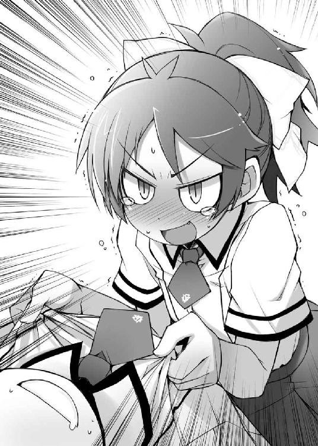
「ごごごごめんなさいっ！ 僕も悪気はなかったんですっ！」
「ごめんで済む問題じゃないでしょ!?」
確かにごめんで済むような問題じゃない。えっと、何を言えばいいんだろう......？
「そ、その、美波」
「なによ!?」
「えっと――僕も初めてだったから、おあいこってことじゃ、ダメかな......？」
「ダメに決まってんだろ」
鋭い雄二のツッコミ。そうだよね。言った僕でもそう思うよ。
「え......？ そ、そうなんだ......。それは、その......えっと......ご、ご馳走さま......？」
「ぅおぃっ！ いいのか島田!?」
それなのに美波はなんだか的外れな返事をしていた。
っと、そういえば一つどうしても気になっていたことがあるんだった。今のうちに聞いておこう。
「あのさ美波。怒らないで答えて欲しいんだけど」
「え？ 何？」
「僕と美波が付き合っているって話なんだけど、あれってもしかして、美波が僕のことを......その、す、好き、とか......？」
「あ......！ そ、それは......っ！」
美波が慌てたように手をバタバタと振る。
僕が気になっていたこと。それは美波の行動だ。メールで誤解させちゃったことに対しての美波の行動は僕の予想とは１８０度違っていた。きっと思いっきり振られてしまうだろうと思っていたのに、美波は僕を振るどころかその真逆の行動を取っていた。
だから、どうしても気になる。もしかすると、僕は美波に嫌われていたわけではなくて、その逆の可能性も――
「あ、あれはね、ほらっ。美春があまりにもしつこいから、彼氏でもいたら諦めてくれるかと思って、それでタイミングよくアキが告白してきたもんだから......！」
せわしなく手と目を動かし続けながらも説明してくれる美波。
「ああ、なるほど。そういうことか」
そうか、どうりで人目も憚らずに色々してくると思った。僕のはやとちりか。
......ん？ なんだか、物凄く悔しい気がする......っ！
「やれやれ。苦しい言い訳だな。一人以外にはバレバレだぞ？」
「そうじゃな。まぁ、告白が誤解などと言われたのじゃから、そうやって誤魔化したくなる気持ちもわからんでもないが」
「............素直じゃない」
「べ、別に言い訳とかじゃなくてホントに......っ！ だ、誰がこんなバカと！」
バレバレって、僕と美波が付き合っているという噓のことだろうか。なんだ。皆は噓だって気付いていたのか。気付いていなかったのは僕ぐらいってことかな。
「まったく......、それならそうと先に言ってよ。美波が僕のことを好きなのかと思っちゃったじゃないか」
「う......。そ、そんなワケないでしょ！」
「だよね。僕もおかしいとは思っていたんだよ。美波が僕を好きになるとは思えないし、それに――」
「そ、それに、何よ」
「それに、美波があんなにしおらしいなんておかしいもんね」
「......そうね。全く、本当に、アンタの言う通りよね......っ!!」
「み、美波!? なんか僕の肩関節が嫌な音を立てているような気がするんだけど!?」
ただでさえカルシウムが足りないから折れやすくなっているのに！
「とにかく、誤解は解けたようじゃな。あとはこの話を清水に伝えれば問題は全て解決ということで良いのか？」
「そうだな。これで清水も納得するだろう」
「............話はうまく伝えておく」
一応これで一件落着。Ｆクラスは安心だろう。
「え？ どういうこと？ 瑞希、なにかあったの？」
「いえ、私も知りませんけど......。何かあったんですか？」
「ああそうか。お前らはＤクラスの話を知らないんだったな。実はな――」
雄二が姫路さんと美波に今の状況を説明する声を聞きながら、僕はぼうっと空を見上げた。
バカテスト 心理テスト
以下の状況を想像して質問に答えて下さい。
『あなたは大好きな彼と二人きりで旅行に行くことになりました。
ところが、飛行機に乗っていざ出発、というところで忘れ物に気が付きます。
さて、あなたは一体何を忘れてきたのでしょう？』
姫路瑞希の答え
『頭痛薬や胃薬などの医薬品』
教師のコメント
これは『あなたが好きな人に何を求めているか』についてわかる心理テストです。忘れ物はあなたに欠けているものを表し、忘れても気が付かずに出発してしまったということは、一緒にいる彼がそれを補ってくれるとあなたが考えているからなのです。
どうやら姫路さんは好きな人に安らぎを求めているようですね。
霧島翔子の答え
『手錠』
教師のコメント
忘れ物の前に、持って行こうとする時点で間違っています。
工藤愛子の答え
『下着を穿いていくこと』
教師のコメント
あなたは好きな人に何を求めているのですか。美波の誤解を解いてからしばらく時間が過ぎて昼休み。
僕と美波の交際疑惑が誤解だという事実が伝わり、Ｄクラスは試召戦争の準備を取りやめたらしい。美波は姫路さんと相席になったし、清水さんの怒りも収まっていることだろう。
但し、清水さんの代わりに今度は違う人が怒り心頭みたいだけど......。
「瑞希、お昼にしない？」
昼休みのチャイムが鳴るや否や、美波のそんな声が聞こえてきた。
「あ、美波」
立ち上がってどこかに行こうとする美波に声をかける。
「何よアキ。ウチに何か用？」
「えっとさ、今朝言っていたお弁当なんだけど......」
言っている途中で、美波の片眉がピクンと吊り上がった。
「なぁに、アキ？ ウチにあそこまで恥をかかせておいて、まさかお弁当をたかろうって言うのカシラ？」
言葉の端々から殺気が立ちのぼっているのがわかる。
「ごめんなさい。心の底からごめんなさい」
美波様は大変ご立腹のようです。まぁ、普通はあんなことがあったら怒るよね......。
「まったく、アキは本当に無神経なんだから......。瑞希、今日は天気も良いし、こんなバカのいない気持ちの良い場所で食べましょ」
近くにいた姫路さんに声をかける美波。どうやら今日は外でお昼にするみたいだ。
「あ、美波ちゃん、待って下さい。そ、それじゃ、明久君。また後で......」
ずんずんと先に行ってしまう美波を追いかけて姫路さんが小走りで去っていく。
かなり怒っているなぁ......。って、噓の告白なんてしちゃったのにあの程度なんだから、寧ろ美波は優しいのかな？
「なんだ明久。島田が作ってきた弁当は貰えなかったのか」
二人を見送っていると、いつものように雄二が僕の席にお弁当を持ってやってきた。その後ろには秀吉の姿も見える。
「うん。美波のご機嫌が斜めでもらえなかった。凄く期待していたのに......」
「まぁ、この状況で手作り弁当なぞを渡したら、また清水が乗り込んでくるかもしれんからな。諦めることじゃ」
「それはそうなんだけどね......」
美波は料理が上手だから本当に残念だ。いや、誰かと比べてってわけじゃないけど。
「ところでムッツリーニはどうしたのじゃ？ 姿が見えんが」
「ああ。さっき何か妙な情報を摑んだみたいで、確認しに出て行ったが――おっ。戻ってきたぞ」
「............ただいま」
殆ど足音をたてることなく僕らのところにやってくるムッツリーニ。その表情は折角の昼休みだというのに晴れない様子だった。
「どうしたのムッツリーニ？ また何かあったの？」
「............（コクリ）」
「さっき言っていた情報とやらかの？」
「............今朝よりも更に良くない状況になってきている」
そう告げて、ムッツリーニは卓袱台の上にお得意の小型録音機を置いた。
そして再生ボタンを押す。そのスピーカーからは雑音交じりの会話が聞こえてきた。
『あ、あのっ、土屋君っ。明久君のセーラー服姿の写真を持っているって噂は本当ですかっ？』
『............一枚１００円。二次配布は禁止』
『二次配布は禁止ですか......。残念です......。でも、私個人で楽しむだけでも充分に』
――ブツッ
「............再生するファイルを間違えた」
「ねぇ何!? 今の会話は何!? 僕にとっては今の会話こそが十二分に良くない情報なんだけど！」
「うるさいぞ明久。つまらんことでガタガタ喚くな」
「全然つまらないことじゃないよ！ どうして僕の女装写真が秀吉の写真と同じように裏で取引されてるの!?」
「ちょっと待つのじゃ明久！ 今のお主の台詞の方がワシにとっては余程良くない情報なのじゃが!?」
畜生誰だ！ 今僕の写真を買って行ったヤツは誰なんだ！
「............こっちが本物」
ポケットから同型の機械を取り出すムッツリーニ。持っている小型録音機は一つじゃなかったのか。
『Ｆクラスの様子はどうだ？』
『何かまたバカなことをやっていたようで午前中は点数補充もやっていないみたいだ。あの様子だと、こっちの意図に気付くこともないだろうな』
『そうか。それならいい。当面は俺たちも点数補充をして、向こうにこちらの動きが気取られたら即座に宣戦布告を行おう』
『了解』
盗聴用の為か、さっきの会話と同様に音質が悪くて誰の声かはわからない。男子生徒同士の会話だっていうのはわかるんだけど......
「これってＤクラス？ だとすると、まだ誤解が解けていないだけなんじゃないの？」
「............（フルフル）」
僕の質問にムッツリーニは首を振って答えた。Ｄクラスじゃない？ だとすると、これはどこのクラスの会話なんだろう。
「Ｄクラスがおとなしくなっているのは確認済みだ。これは恐らく別のクラス――指示を出しているのが男子生徒ということから見ても、これは」
「............Ｂクラスの会話」
「Ｂクラス!? どうして!?」
今の会話は明らかに僕たちＦクラスを敵とみなして試召戦争の準備を進めているものだった。そうなると、Ｂクラスも僕たちの敵になっているってこと!?
「Ｂクラスって言うと、根本の野郎か。あのゲス野郎め、随分と姑息なことを考えてくれたもんだ」
雄二が苛立たしげに舌打ちをした。
「まったくだね。いくら僕らに仕返しがしたいからって、ＢクラスがＦクラスに試召戦争を申し込むなんてあんまりだよ」
そんなの弱いもの虐めじゃないか。
「いや、根本の狙いは恐らく仕返しだけじゃない」
「え？ 違うの？」
「違うとは言わない。実際にアイツは俺たちを恨むには充分すぎるほどの理由がある。ただ、目的はそれだけじゃないってことだ」
相変わらず雄二の言うことはまどろっこしくてよくわからない。
「雄二、他の目的とは何じゃ？」
秀吉も僕と同様に雄二の言いたいことがわからなかったようで首を傾げていた。
「自分への非難を抑えることだ」
「？ さっきの話とあまりつながってこないんだけど」
「根本は元々人望が皆無だったが、四月の試召戦争では卑怯な手を使っても俺たちに勝てなかったことで更にクラスの中での地位は厳しいものになった。更に先週の覗き騒ぎの件もある。今や根本はＢクラス内で居場所なんかないだろう」
「うん。それはわかってる」
きっと根本君はＢクラスの中では針のムシロに座らされているような気分になっていることだろう。
「ここで問題だが、国情の不安が顕著になった場合、為政者はどういった対応をすると手っ取り早く大衆の不満を抑えられると思う？」
「？ え、えっと......」
一瞬雄二の言っていることがわからなくなる。
「明久。わかるか？」
「ごめん。もう一回言って貰える？」
「やれやれ......。ちゃんと聞いておけよ」
呆れ顔の雄二。
いきなり難しいことを言われたので頭がついていかなかった。今度はきちんと聞いておこう。
「だから、『大衆の不満を抑える為にはどういった行動が適切か』ということだ」
ふむふむ。なんだ、そういうことか。それなら答えは簡単だ。
「香水をつける」
「恐ろしいほど奇抜な解答だな」
「............度肝を抜かれた」
「え!? だって、ＴＶで『体臭を抑える為に香水をつける』ってヨーロッパの人たちが言ってたよ!?」
僕はＴＶに騙されたんだろうか。
「いや、そういう意味ではないのじゃ明久。不満一杯の国民をなだめるにはどうしたら手っ取り早いかという話なのじゃが......そうじゃな。恐怖で抑えつける、とかはどうじゃろうか？」
「それも一つの手段ではあるが、あまり手っ取り早いとは言えない。恐怖政治にはまずそれを行うだけの圧倒的な力が必要だからな」
Ｂクラスに置き換えると、確かに今の根本君に皆を抑えつけるだけの発言力はないだろう。その方法でクラスの皆の不満を抑えるのは難しいかもしれない。
「だとすると何がいい方法なの？」
「答えは『外部に共通の敵を作ること』だ。俺たちの日常生活でもそうだが、同じ敵を持つ人間というものは若干の不和があったところで結束し易い。歴史上でもそういった手法を取っていたヤツは大勢いるしな」
そう言って、雄二は歴史上の人物を数名挙げた。なるほど。そうなのか。
「自分へ向けられた怒りや不満を俺たちに肩代わりさせて、自らの恨みも晴らす。あわよくばＦクラスを完全に打倒することで発言力も取り戻したい。根本の狙いはそんなところだろうな」
説明を受けると、根本君がＢクラスの皆を扇動して僕らに試召戦争をしかけようとする動機は充分理解できた。それだけの理由があるのなら、僕だって戦争を考えるだろう。
「発言力のない根本でも、『覗き騒ぎの主犯であるＦクラスを粛清する』という大義名分があれば、クラスを動かすことが出来る。今の状況はヤツにしてみればまたとないチャンスだ」
僕らはまんまと根本君にとっておいしい状況を作り上げてしまったわけか。
「しかし、そうなるとちょっとやそっとの理由では戦争は回避できんじゃろうな。常日頃ならともかく、今のワシらは点数補充ができておらん。こんな絶好の機を逃す手はあるまいて」
「その通りだ。ただでさえ普通にやったら勝ち目の無い相手から、まともに戦えるのが二人だけのこの状況で勝ちをもぎ取るのは不可能だ。Ｄクラスならまだしも、Ｂクラス相手に今の状態じゃ万に一つも勝ち目はない」
さっきムッツリーニが言っていた通り、状況は今朝よりも更に悪い。これならまだ誤解されてＤクラスに狙われている方がマシだったような気がする......。
「して、どうするのじゃ雄二？ 今からでもテストの申請をして午後は点数補充に費やすのかの？」
「そうだね。それしかないよね」
うちのクラスと違って、向こうは半数が女子だ。オマケに残った半数の男子も午前中から点数補充をやっている。殆どが男子の僕らが今から補充をやっても焼け石に水だろうけど、他に手が無い以上は仕方ない。
だというのに、
「......いや、余計なことはしない方がいい」
「え？」
雄二はそんなことを言って点数補充を却下した。
「どういうことじゃ？ 点数補充もせんでＢクラスに勝てる策があるとでも？」
「いや、Ｂクラス相手にこの状況で勝てると思うほど俺は楽観的じゃない」
「けど、それなら点数補充もしないでどうするのさ」
この状況で勝てないのなら、せめて少しでも状況を良くする為に動くべきだと思うけど。
「まずは時間を稼ぐ。Ｂクラスに宣戦布告されるまでの時間を」
「時間稼ぎ？ そんなことをして何か意味があるの？」
点数補充をしなければ最終的には攻め込まれて同じことになるような気がする。
「いいか？ Ｂクラスに宣戦布告をされたら、俺たちはＢクラスと戦うしかなくなる。そうなると俺たちは１００％負ける。だが、今はまだ宣戦布告を受けていない。つまり、まだ戦争を回避できる可能性があるってことだ」
「でも、さっき秀吉が言ったように根本君には戦争をする理由が沢山あるんだよ？ とても取りやめてくれそうにないけど」
「ああ。だから、Ｂクラスが戦争を出来ない状況を作る。幸いにも試召戦争のルールではクラス毎の一対一しか認められていない。つまり」
「他のクラスとＢクラスを戦わせるとか？」
そうすればＢクラスは僕らと戦うことはできない。
「んむ？ また前回と同様にワシが姉上の真似をするのかの？」
「いや、違う。その手は前にも使っているからな。二度は使えない。そうじゃなくて、他のクラスと俺たちが戦うんだ」
「他のクラスとワシらが戦う......なるほど。その間はＢクラスから宣戦布告をされずに済むし、戦争後は点数補充をすることができるから、ということじゃな」
「その通りだ」
試召戦争の細かなルールの一つとして、一つの戦争が終わった後の点数補充というものがある。連戦になるとしても、一つ戦争を終える度に消耗した点数を補充する期間をもらえる。このルールがないとどんなクラスでも簡単にやられてしまうからだ。
「先の戦いでは疎ましいと思ったルールじゃが、今回はそのおかげで助かりそうじゃな」
秀吉の言う通り、このルールがなければ僕らは前の試召戦争でＡクラスを簡単に落とすことができただろう。でも、今はそれがありがたい。
「しっかり点数補充をして俺たちにＢクラスと戦うに足る力があれば、向こうだって戦いを挑んできたりはしないだろうからな」
「そりゃあ、僕らが万全な状態になったらＢクラスは攻めてこないだろうけど......」
前の試召戦争の記憶があるだろうから、僕らが態勢を整えたらＢクラスは万が一を考えて手を出してくることはないだろう。あくまでも彼らが戦おうとしているのは今の僕らの状況が前提なのだから。
「じゃが、その相手はどうするのじゃ？ ワシらからは例のペナルティで試召戦争を仕掛けることはできん。どこかのクラスに攻め込まれるしかないはずじゃが」
「勿論相手はＤクラスだ。ヤツらに宣戦布告をさせて、その戦争をやり過ごして点数補充を済ませる。Ｂクラス相手なら危険だが、Ｄクラス相手なら勝つとまではいかなくても負けない程度の勝負は不可能じゃない。幸いにも、アイツらも開戦派と非開戦派の論争で点数補充を終えていないからな」
そうなると、Ｄクラスの主戦力は半数の女子だけか。Ｂクラスを相手にするよりは数段やりやすい。
「じゃが雄二。勝算があるのなら、なにゆえＤクラスとの勝負をしなかったのじゃ？」
雄二の言葉に引っかかったのか、秀吉が首を傾げる。
「違うぞ秀吉。勝算はない。ただ、負けない勝負ができるというだけだ。勝つことができないので、ひたすら引き分けの為に戦う。そんな面倒なこと、やらないで済むならやりたくないだろう？」
なるほど、面倒くさがりの雄二でなくても、そんな面倒なことは避けたいだろう。
「あれ？ でもさっきの話だと、やっぱり戦争はするんだよね？ だったらなんで午後を点数補充に使わないの？」
「お前の耳は飾り物か？ さっきのムッツリーニの情報を思い出せ」
えっと、さっきのムッツリーニの録音していた会話――
「ムッツリーニ！ 一枚１００円は安過ぎるよ！ 秀吉は５００円なのに！」
「ほほぅ。５００円か......。二人とも、ワシの写真について少々話を聞かせてはもらえんかの？」
「............全て秘書がやったこと」
「そんな政治家みたいな！」
「お前ら全然危機感抱いてないだろ」
雄二が頭に手を当てて呆れている。でも、これはこれで重大な問題だと思うんだけど。
「さっきの情報で、根本は『こちらの動きを気取られたら即座に宣戦布告を行う』って言っただろう？」
「ああ、そっちね。うん。確かに言っていた」
「つまり向こうは俺たちが向こうの動きに気がつくまでは点数補充を続けるつもりだ。これは逆に言うと、連中の点数補充が終わるか俺たちが向こうの動きに気づくまでは宣戦布告をしてこないということになる」
点数補充をしなくても充分に勝てるはずなのに更に念を入れているのは、やっぱり前の勝負で苦い思いをしたからだろうか。確かに普通にやれば勝てそうでも、向こうの代表だって男子生徒で点数がないんだから万が一があり得る。ある程度補充を終えないと不安だという気持ちはわからなくもない。
「ふむ。ならば、明日までは猶予がありそうじゃな」
「そうなの？ 今日中に攻め込んでくる可能性はないの？」
「今朝鉄人が言っておったじゃろう。試験召喚システムはメンテナンス中で明日までは試召戦争ができん、と」
今朝のことなんてそれどころじゃなかったから全然憶えていない。そっか。メンテナンス中なのか。
「えーっと、話が長くなったけど、要するに僕らはこれからどうするの？」
「勿論Ｄクラスからの宣戦布告を受ける為に工作を始める。期限は今日一杯。それが出来なければ俺たちはみかん箱とござの教室に逆戻りだ」
これはなんとしても成功させないといけない。また設備がみかん箱とござなんかになったら、今度こそ姫路さんは転校させられちゃうかもしれないから。
「具体的な案はどうなのじゃ？」
「今朝の一件を利用する。明久と島田をくっつけて清水を焚き付けるんだ」
「え？ でも、あの話は誤解だって」
「事実はこの際置いておこう。お前と島田はこのクラスの為に仲睦まじい恋人同士を演じるんだ。清水が嫉妬に狂うほどにな」
「えぇぇっ!? そんなの無理だよ！ 美波はあの話で思いっきりヘソ曲げちゃってるんだよ!?」
「それでもなんとかするんだ。演技に関しては秀吉に任せる。台本なんかも用意できるようなら頼む」
「了解じゃ」
「ムッツリーニは情報収集及び操作、俺は作戦が成功した時の為に対Ｄクラス戦の用意を始める」
「............わかった」
「さて、そうと決まれば暢気に飯を食っている暇は無いぞ。姫路と島田が教室に戻ってき次第行動開始だ。ムッツリーニ。この教室の盗聴器は無力化されているんだよな？」
「............大丈夫」
「な、なんてことに......」
今回の作戦は外交戦と情報戦になりそうだ。今までとはわけがちがうけど、本当にうまくいくんだろうか......？
☆
「それで、ウチにどうしろって？」
教室に戻ってきた女子二人に事情を話すと、美波は半眼で僕を見ていた。うぅ......。やっぱりまだ怒ってる......。
「明久と付き合っている演技をしてもらいたい。それも周りで見ているヤツがムカついて血管が切れそうになるくらいベタベタな感じでな」
そんな美波の態度を見てもどこ吹く風。雄二はこちらの要求を美波に告げた。
「絶対にイヤ」
当然断る美波。そりゃそうだ。今朝あんなことがあったばかりで今度は付き合っている演技をしろだなんて、質の悪い冗談にしか聞こえないだろう。
「そこを曲げてなんとか協力して欲しいのじゃ。島田だけではなく姫路にも」
「え？ わ、私もですか？」
「うむ。明久と島田の演技だけでは現実感に欠けるからの。お主には二人の仲を妬む役を頼みたいのじゃ」
姫路さんは要するにサクラみたいなもんだろうか。わざわざ姫路さんに頼まなくても、Ｆクラスの皆なら素でサクラになってくれると思うんだけどなぁ。そもそも、姫路さんが僕にヤキモチを焼くなんて逆に現実的じゃないような気もするけど......とりあえず演技に関しては僕は素人で秀吉は経験者だ。おとなしく言うことに従っておこう。
「明久君と美波ちゃんの仲を妬む役、ですか......」
姫路さんが秀吉に言われたことを反芻している。なんだろう。随分と葛藤しているような雰囲気だけど。
「ウチはなんと言われてもイヤ。こんなバカと恋人同士だなんて、冗談じゃないもの」
美波は頑として拒否の姿勢。
「島田よ。冷静になって考えるのじゃ。確かに色々と思うところはあるじゃろうが、これはお主にしかできんことなのじゃぞ。それなのに静観を決め込むなぞすれば、後々必ず悔やむ時がくる。例えば――姫路が転校してしまう、なんてことになった時、お主は自分を責めずにいられるかの？」
秀吉の言葉に美波は「うっ」と息を詰まらせていた。クラスの設備が今よりも酷いことになったら、また前みたいに姫路さんの転校話が浮上してしまうかもしれない。そんなことは誰も望んではいないはずだ。
とは言え、美波が嫌がる気持ちもよくわかる。ってコトで、それなら――
「あのさ、それなら相手が僕じゃなければいいんじゃないかな？」
美波がそこまで嫌がるのは相手が僕だからで、清水さんを挑発するという作戦自体には不満はないはずだ。それなら代わりに誰かにやってもらえばいい。
「え？ それって、他の誰かが美波ちゃんの恋人役になるってことですよね？ それはいい考えかもしれませんけど......誰がやるんですか？」
「誰って、例えば雄二とか」
「ほほぅ。お前は俺に死ねと言うのか」
「それじゃ、ムッツリーニは？」
「............盗聴器の操作がある」
「う～ん......他には、須川君とか」
「明久よ。ワシの名前が飛ばされた気がするのじゃが、他意はないのじゃろう？」
秀吉には無理だということくらいは、言われるまでもなくわかっていることだし。
「というか、代役は無理だ。今朝あんなことを公衆の面前でやっておきながら他のヤツと付き合っているなんて誰が信じる？ お前と島田にしかできないことなんだよ」
そ、そっか。あんなことの後で実は他の人と付き合っています、なんて明らかに噓くさいよね。
「あの、美波ちゃん、明久君。気が乗らないかもしれませんけど、お願いしますっ」
急に姫路さんが僕と美波に頭を下げた。あれ？ さっきまでは姫路さんも乗り気ではなさそうに見えたけど、気のせいだったのかな？
「凄く個人的な理由で申し訳ないんですけど、私やっぱり転校なんてしたくないです。だから、協力して下さいっ」
「え、あ、いや。僕は勿論協力するけど」
チラ、と目をやると、美波は今にも頭を掻き毟らんばかりの様子で僕を見ていた。
「う......。わ、わかったわよ！ とりあえず形だけでもやればいいんでしょ！ けど、演技の内容次第じゃ、どうするかは知らないからね！」
「美波ちゃん、明久君......ありがとうございますっ」
そんな美波の返事を聞いて、姫路さんはもう一度深く頭を下げた。
「ま、まぁ、確かに畳や卓袱台もこの前買ったばかりだから結構使い易いし......。瑞希の為だけじゃないんだから、そこまで気にすることも......」
姫路さんの素直な感謝が嬉しいのか、美波はそっぽを向いてそんなコトを言っていた。相変わらず素直じゃないなぁ。
「そうと決まれば、早速演技開始じゃな。三人とも、これを受け取るのじゃ」
秀吉が僕らにそれぞれ一部ずつホチキスでとめられた冊子のようなものを渡してきた。手書きで名前とその下に台詞が書いてあって、これって要するに、
「台本？ もう書き終えたの？ いつの間に？」
「殆どはワシが持っておった台本からの引用じゃからな」
それにしたってさっき作戦が決まってから姫路さんたちが戻ってくるまでの五分程度の時間でこんなものを作るなんて、どういう頭の構造しているんだろう。やっぱり秀吉は演劇に関しては一味違うみたいだ。
「お前らはそいつを持って屋上で演技開始だ。ムッツリーニ、清水の盗聴器はどうなっている？」
「............さっきは接触不良を装っただけだから、今はまた動くようにしてある」
「そうか。だとしたら、演技以外の会話は一切しないようにするんだ。清水にバレたら元も子もないからな」
「ちょっと待ってよ。まだ台本を憶えるどころか目を通してもいないのに」
「............大丈夫。屋上のカメラには死角がある。台本を読みながらの演技でいい」
ムッツリーニは紙を取り出すと、簡単な屋上の見取り図を描いてその上に死角となっているポイントを描き加えていった。
「そうですか。読みながらでいいのならなんとかなりそうですね、美波ちゃん」
「そうね。それは助かるけど、でもせめて内容を確認させてくれない？ 変なシーンがあるかどうか気になるもの。その......キスシーンとか......」
そ、それは困る。そんなシーン、素人の僕らが演技でやるようなもんじゃない。
「安心せい。そのようなシーンは入れておらん。まぁ、たとえ入れたとしても、カメラの死角におるのじゃから、音だけで事は足りるしの。それよりも、時間がないから急ぐのじゃ」
取り付く島もなく、僕と美波と姫路さんは秀吉に背中を押されて教室から追い出されてしまった。
「えっと......」
本当にやるの、と聞こうとしたところで姫路さんが唇に指を当ててこちらを向いた。ああそっか。廊下も盗聴されている可能性があるのか。これは下手なことは喋れないな。
仕方なく無言で屋上へと続く廊下を歩く。カメラがあるかもしれないので、念の為台本も見えないようにしておいた。
ギィ、とたてつけの悪いドアを押し開ける。今日はこれで二度目の屋上だ。幸いなことに他の人は誰もいない。日差しが眩しすぎるのが原因だろうか。
ムッツリーニが教えてくれた死角を伝って屋上の隅へと移動する。
そして台本を取り出して美波に視線を送る。すると、美波は黙って頷いて返した。いよいよ演技開始だ。
台本の１ページ目を見る。そこにはそれぞれの名前と台詞が書いてあった。
島田『ねぇ、アキ』
明久『ん？ なに、美波？』
島田『今更なんだけど......アキにきちんとウチの気持ちを伝えておこうと思うの』
明久『え？ そんなの、今更言われなくても......』
島田『それでも聞いて欲しいの。確かに気持ちが先走ってキスはしちゃったけど――でも、こういうことはハッキリさせておきたいから』
明久『う、うん。わかった。それなら聞かせて欲しい。美波の、本当の気持ち』
それぞれの台詞を見て血の気が引いていく。一体なんだコレは。罰ゲームか何かなんだろうか。
「............」
隣では美波が僕と同じように台本を見たまま固まっていた。
こんな台詞、美波が本当に言ってくれるんだろうか......？
「......ねぇ、アキ」
おぉっ！ 始まった！ 美波はちゃんと協力してくれるみたいだ。それなら僕も頑張らないと！
「ん？ なに、美波？」
台本どおりの台詞を返す。読みながらだから楽でいいね。
「今更なんだけど......あ、アキにきちんとウチの気持ちを伝えておこうと思うの」
一瞬言葉に詰まりながらも、美波は続きもきちんと言ってくれた。若干は抵抗があるみたいだけど、このくらいならきっと問題ないはずだ。
さて、僕の台詞は、っと。
「え？ そんなの、今更言われなくても......」
ちなみに今更、の部分はふりがなが振ってあった。親切設計だけど――なんだかバカにされているようで悔しい。
「それでも聞いて欲しいの。............こういうことは、ハッキリさせておきたいから」
うん？ 今何か台詞が飛んだような？ って、ああキスの部分か。そうだよね。やっぱり恥ずかしいよね。僕も面と向かって言われたら恥ずかしいし......。どうやら美波は自分の意に沿わない部分は若干のアドリブを入れながらやるようだ。
「う、うん。わかった。それなら聞かせて欲しい。美波の、本当の気持ち」
台詞を言い終えてから自分の頰が熱くなっていることに気がつく。コレは想像以上に恥ずかしい......！
とは言え、ここで躊躇っている時間はないので次のページに進む。次は美波の台詞からだけど......
島田『わざわざこんなところに呼び出してごめんね、アキ......。あのね、ウチは......アキのことが好きなのっ！』
読んだ瞬間に鼻から胃液が飛び出すかと思った。
こ、こんな台詞を言われるの!? そりゃあ、清水さんに嫉妬させるための演技だからある程度は覚悟していたけど......でも、これはあまりにも恥ずかしすぎる！
み、美波はどうするんだろう......。
様子を窺うと、美波は台本を引きちぎらんばかりに力を入れながらも口を開いていた。まさか、言うつもりなんだろうか？
「わ、わざわざ――」
冒頭の句が読まれる。やっぱり美波はやる気だ。
よし。美波が恥ずかしいのを我慢して頑張るのなら、僕が照れている場合じゃない。きっちり役目をこなさないと！
「わざわざこんなところに呼び出してごめんね、アキ......」
しおらしく、弱々しく言葉を紡ぐ美波。
「あのね、ウチは、アキのことが――」
一瞬言葉を区切り、その後の台詞の為に美波が大きく息を吸う。
今の美波は本当の気持ちを告げる為に、僕を屋上に呼び出したいじらしい女の子という設定だ。きっと可愛らしい告白をしてくれると――
「アキのことが――嫌いなのっ！」
僕はそんなことを言われる為に呼び出されたのか。
「み、美波......？」
「初めて会った時からずっとアキのことが嫌い！ あれから友達として傍にいるのがずっと辛かった！ 本当は友達でいるなんて、我慢できなかったのに！」
なんだろうこの斬新な告白は。わざわざ屋上にまで呼び出されて、初めて会った時からずっと嫌いだったと言われるなんて、現実はおろか漫画や小説の世界ですら見たことが無い。
って、そうじゃなくて演技だ！ どうしよう、美波が暴走している。こうなったら、せめて僕だけでもまともな演技をしないと！
台本に目を走らせて次の台詞を確認する。
「美波......」
「アキ......」
そして、美波の分をフォローする為、たっぷりと気持ちを込めて美波の目を見つめながら言葉を紡いだ。
「僕もずっと、同じ気持ちだった」
美波の繰り出す拳が、僕にはとても理不尽なものに思えた。
☆
「まったくお主らは、なんという失態を......」
Ｆクラスに戻った僕らを待っていたのは額に手を当てて呆れ果てている秀吉の姿だった。どうやら一部始終をムッツリーニの盗聴器で聞いていたようだ。
「だ、だって仕方ないじゃない！ あんな台詞言えるわけないもの！ しかも録音されているかもしれないのよ!?」
「そ、そうだよっ！ それに美波があんなに可愛い台詞を言えるわけがあれ？ 右手の感覚がなくなってきたような？」
美波が摑んでいる僕の右肘が酷いことになっているように見えるのは、きっと気のせいだろう。
「あ、それなら木下君。お手本を見せてもらえませんか？」
姫路さんがポン、と手を叩く。なるほど。演技のプロのお手本を見せてもらえばもう少し僕らもマシになるかもしれない。......まぁ、もう手遅れなんだけど。
「んむ？ 別に良いが」
そう言って秀吉は台本を手に取ると、少しの間じっと見つめていた。
「よし、と」
そして、本を置いて僕の手を取る秀吉。
「え？ え？」
いきなりのことで驚く。なに？ どういうこと？
そんな戸惑う僕を気にすることなく、秀吉はキュ、と弱々しく僕の手を握り締めて顔を上げた。
「わざわざこんなところに呼び出してごめんね、アキ......。あのね、ウチは......アキのことが好きなのっ！」
「!?」
いきなりの秀吉の告白。僕の手を握って頰を染めながらも懸命に言葉を紡ぐ秀吉は言葉に言い表せないほどに可愛かった。
「初めて会った時からずっとアキのことが好き！ あれからただの友達として傍にいるだけなのがずっと辛かった！ 本当はただの友達でいるなんて、我慢できなかったのに！」
矢継ぎ早に繰り出される殺人級の台詞に頭がショートしそうになる。こんなに一生懸命に想ってくれるなんて、心の底から嬉しい。
「アキ......。あんなことしちゃった後で今更だけど、改めて......貴方のことが好きです。ウチと、付き合ってください」
もうダメだ。こんなことを言われたら正気を保ってなんかいられない。
「母さん......。今僕は、初めて貴女に心から感謝します......。僕を産んでくれて、本当にありがとう......」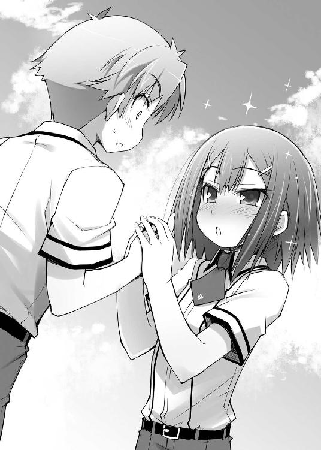
「――とまぁ、こんな具合じゃ」
スッと手から温かい感触が消える。あ、あれ？ さっきの幸福感は？
「す、凄いわね......」
「そ、そうですね......。私が告白されたわけじゃないのに、思わずドキドキしちゃいました......」
「そこまで褒められると照れ臭いのじゃが......。まぁワシは勉強もせんでコレばかりやっているような人間じゃからな。これくらいは当然じゃな」
秀吉がポリポリと頰を掻いている。
そ、そっか。さっきのは演技のお手本だったのか......。
「？ 明久君、どうして泣いているんですか？」
「なんでもないよ姫路さん......。ただ、少しの間だけ僕をそっとしておいてくれないかな......？」
幸せな夢ほど目が覚めたときに辛いものはない。僕は今、その事実を痛いほど実感している。
「とにかくじゃ。このままでは清水が嫉妬するどころか全くその逆の結果になりかねん。ムッツリーニ、先ほどの屋上での会話は清水に伝わっておるのか？」
「............微妙。一応、途中でまた接触不良を装っておいた」
卓袱台の上で何かの機械を弄っていたムッツリーニがそのままの体勢で返事をする。流石はムッツリーニ、ナイス判断だ。
そうなると、あとはどこまで聞かれたかってことか。
「序盤の台詞は台本どおりじゃから、向こうも真偽について訝しんでおるところじゃろう。まだ取り返せる範囲じゃ。ここからきっちりと恋人同士を演じてもらうぞい」
「「う......」」
あんな手本を見せられたからには嫌だなんて言えるわけがない。さっきの失敗の尻拭いは自分たちでしないと。
「先ほどは姫路の出番に入る前に中断となってしまったようじゃが、ここから先は姫路にも参加してもらうかの」
「は、はいっ。頑張りますっ」
「うむ。宜しく頼むのじゃ」
姫路さんのやる気に秀吉は満足そうに頷いた。
「それはいいんだけど、そろそろ次の授業が始まっちゃうんじゃないの？」
時計を見て現在時刻を確認。昼休みの残り時間は――あれ？ 残り時間どころか、午後の授業が始まっている時間じゃない？
「午後の授業は自習じゃ。他のクラスでは皆がテストを受けておるからの。採点やら監督やらで手が回っておらん上に試験召喚システムのメンテナンスも難航しておる。教師も忙しいようじゃな」
そっか。二年生の男子全員が停学なんていう前代未聞の珍事の事後処理に加えて、ほぼ学年全体で補充の為のテストをやっているんだった。先生たちの手が足りなくなっても仕方ないよね。
「午前の授業も全員代理の先生でしたもんね」
「うむ。そのせいで今週末は休日を使ってその分の補習が行われるようじゃが――今の状況ではそれでもありがたい」
補習か......。望ましいこととは言えないけど、今は秀吉の言う通り、午後が自習になったのは都合が良い。せいぜい利用させてもらおう。
「次は島田と明久が教室を抜け出して外で逢引をしているという設定でいくぞい。明久と島田は腕を組むのじゃ」
「「............」」
美波と顔を見合わせる。いきなりハードルの高い課題だ。
「あ、あのっ、木下君。べ、別に腕を組む必要は無いんじゃ......？」
そんな僕らを慮ってくれたのか、姫路さんが秀吉に異議申し立てをする。グーにした手をぶんぶん振って、余程僕らが嫌がっていると思ったんだろう。優しいなぁ。
「姫路よ。お主の気持ちもわからんでもないが、移動の間にカメラや人の目があるやもしれん。これは必要なことなのじゃ」
「で、でも......！」
「明久、島田。先ほどの失敗を挽回する為にも頑張るのじゃ。視覚的な効果は役作りの上でお主ら自身にも都合が良いのじゃ」
腕を組むことで僕ら自身もその気になるってことか。そこまで言われたらやるしかないな。
美波の方を見る。
すると、美波も不承不承といった感じで小さく頷いて僕の腕を取った。
「うむ。それでは舞台は今一度屋上としよう。ムッツリーニもその方が色々と都合が良かろう？」
「............盗聴器に手を加えるなら屋上のヤツが自然」
都合の悪い展開になって盗聴を中断させるとなると、他の機械よりも一度調子が悪くなったことになっている屋上のヤツの方が自然だってことだろうか。
「そっか。じゃあ、行こうか美波」
「......一応腕は組むけど、他のところに触ったりしたら殺すからね」
「りょ、了解。気をつけるよ」
美波とギスギスした雰囲気のまま腕を組んで廊下に出る。クラスの皆が何も言ってこなかったのは事前に雄二あたりが事情を説明していたからだろう。
屋上へと続く廊下を歩きながら、美波とにこやかに会話をする。勿論表情は満面の笑みだ。
「あはは。美波ってば、そんなに腕をギュッてされたら歩きにくいよ」
「ふふっ。別にいいでしょ？ ウチらは付き合っているんだから、これくらい」
肘の関節がギシギシと嫌な音を立てているけど、それでも笑顔は崩さない。僕らは仲良しの恋人同士なのだから。
「でも美波、そのせいでさっきから肘に当たってるんだけど」
「え!? こ、この、スケベっ！」
「――アバラ骨が」
ゴツゴツしていてとても痛い。
「うふふふ。アキってば、冗談が好きなんだから。本当に可愛いわね」
「あはは。やだなぁ美波。さっきよりも更にくっつくなんて」
「いいじゃない。思いっきり強く抱きしめていたいんだもの」
「まったく、美波は甘えん坊だなぁ」
言いながら、それとなく肘から先の部分を周囲から見えないように隠す。ここまでドス黒く変色している腕を見られたら、恋人同士云々の前に人の体として不自然に思われてしまうだろう。
そのまま指先の感覚がない状態で廊下を歩く。さて、何を話そうか。恋人同士の会話、恋人同士の会話っと......。
「ねぇ美波」
「うん？ なぁに、アキ？」
「美波は僕のどこが好きかな？」
前に何かで見かけた『目の前で繰り広げられるとウザい会話』の一例ってヤツを使ってみる。
すると、美波は一瞬黙り込んでから取り繕うように僕の顔を覗き込んだ。
「そんなの、決まってるじゃない」
お。美波もわかってるみたいだ。きっと『頭の天辺から爪先まで全部好き！』とか言ってくれるんだろう。
「頭の天辺から眉毛まで、全部好き！」
どうやら彼女は僕のおでこにしか興味がないようだ。
「そう言うアキはどうなの？」
「そりゃあ、勿論美波と一緒だよ」
「もうっ。アキったら。ホントに可愛いんだから......っ！」
ギリギリギリと関節の軋む音が聞こえる。
そんなこんなで屋上に着く頃には、肘から先が小刻みに震えるようになっていた。
「じゃあ美波、あっちに行こうか」
「ううん。向こうにしましょ？」
「いやいや、あっちの方が日当たりが良くて気持ち良さそうだよ？」
「日差しが強すぎるとお肌に良くないのよ？ 向こうの日陰がいいと思うわ」
笑顔の下で場所選びの攻防戦。カメラの死角に行って腕を解放してもらいたい僕と関節技を続行しようという美波の戦いと言い換えてもいい。
「ほら、アキ。こっちこっち」
「もう、美波。そんなに腕をひっぱっちゃダメだよ」
折れちゃうじゃないか。
「ほら、こっちの方が涼しくていいでしょ？ そんなに汗かいているんだから」
これは脂汗だということには美波も気付いているはずなのに。
「そうだね。確かに涼しいよ。背中がゾクゾクするね」
「寒いの？ それならもっとくっつかない？」
「いやいや、もう充分だよ」
「何言ってるの。照れることなんてないでしょ？」
目の笑っていない笑顔で見詰め合っていると、視界の隅で秀吉が死角に移動していくのが見えた。
そして、その後に秀吉が出入り口の方に手を振ると、新たな人影がやってきた。
「ふ、二人とも何をしているんですかっ！ 今は授業中なんですよ!?」
怒った顔で現れたのは姫路さんだった。まるで本当に怒っているみたいに見える。姫路さんは演技も上手みたいだ。流石は優等生。
「瑞希......」
「そんなにくっついて、腕まで組んで......！ そんなのまるで、その......つ、付き合っているみたいじゃないですかっ！」
僕らの腕を指差す姫路さん。まさかこれが実は関節技による処刑だとは気付くまい。
それはそうと、姫路さんの台詞になんて返せばいいんだろう。台本なんてなかったし、アドリブでやればいいんだろうか。
「えっと、姫路さん......」
あまり間を置いてもマズいと思って口を開くけど、その先の台詞が出てこない。こういう場面は何を言うべきなんだろうか。
そんな困っている僕をみかねたのか、美波が隣で口を開いた。
「そうよ瑞希。ウチとアキは付き合ってるの」
本当にそう思うのなら今すぐ腕を解放して欲しい。
「え......？ つ、付き合っているって、本当ですか......？」
「うん。黙っていてゴメンね、瑞希」
申し訳なさそうに美波が呟く。
「美波ちゃん......。やっぱり明久君のこと、好きだったんですか......？」
「それも......黙っていてゴメン。瑞希の気持ち、ウチは知っていたのに」
凄い。台本もないのにスラスラ台詞が出てきている。二人とも才能があるんじゃないだろうか。
ところで、僕は何を喋ればいいんだろう？ う～ん......そうかっ！ 漫画や小説から似たような場面の台詞を引用したらいいのか！ 確か前に読んだ小説でこういうシーンがあったっけ。その時の台詞を使わせてもらおう。
嚙まないように気をつけて、大きく息を吸って――
「やめて二人ともっ！ 僕の為に争わないでっ！」
ゴキン
今の手首の関節を外された音が清水さんに聞こえていなければいいけど。
「やっぱりそうでしたか......。美波ちゃんも、明久君のことが......」
「謝って済むことだとは思わないけど......ごめんなさい。ウチのこと、許せないでしょうね......」
それはそうと、関節を外されたのに痛みを感じないのが気になる。生物は末期的な傷害を受けると脳が痛覚を遮断するって前に何かで見たけど、まさかね......？
「いえ。美波ちゃんの気持ち、私もなんとなくわかっていましたから......。むしろこうやってハッキリ言ってもらったことで気分が楽になったくらいです」
念の為に指の動きを確認しておこう。まず、親指――むぅ。変だ。全然動かない。
「え？ 許してくれるの、瑞希？」
「許すとか許さないとかじゃなくて......。その、人を好きになることは自由だと思いますから。美波ちゃんのことを責めるなんて、私にはできません」
「瑞希......。ありがとう......」
演技が進んでいるようだけど、とりあえず僕の出る幕もなさそうだし、自分の体の状態確認を優先しよう。
次は人差し指の動作確認だ。この指は一番血色がいいから、きっと動くはず――ってあれ？ 全然動かないよ？ もしかして相当ヤバいところまで来てない？
「でも、今朝のキスは許しません。アレは反則ですっ！ しかも明久君の初めてだったみたいですし！」
そんなバカな。中指はきちんと動いて――くれない。まさか、まさか......！
「そ、それは、だって、あんなメールとか色々あったから、つい！」
ふぬぁぁっ！ 薬指も小指も動かない！ コレはもう本当に危険だよ！
「つい、じゃないですっ！ あんなズルは、神様が許しても私が」
――ドンッ
何やら壁が叩かれた音が聞こえたような気がした。
けど、今の僕はそれどころじゃない。指が！ 僕の指がぁーっ！
「「あ......」」
「そ、そんな話をしているんじゃありませんでした。え、えっと......こほんっ」
「そ、そうだったわね。こほんっ」
って、指どころか肘関節まで動きが怪しい。どうしよう。このままだと《隻腕の観察処分者》なんていうちょっとかっこいいあだ名をつけられちゃうかもしれない。
「とにかく、その......美波ちゃんのバカッ！」
「あっ！ 瑞希っ！」
もう既に演技どころじゃない。急いで保健室に行って治療してもらわないと！
美波の腕を解いて――
「ちょ、ちょっとアキ!? 何瑞希の後を追おうとしているのよ!?」
くぅぅっ！ 美波が全然腕を放してくれない！ 今は僕の体の一大事だっていうのに！ 一刻も早く保健室に駆け込まないといけないのに！
「まさか、本当にこういう場面が来たら、アキは瑞希を選ぶっていうの......？」
美波が何かをブツブツ言って僕の腕の様子に気付いてくれない。
ひぃぃっ！ 腕の色がもう正視できないほど酷いものに！ 大ピンチだよ！
「そ、それならウチだって......。ねぇ、アキ......。ウチと一緒にいて？ ウチはその......アキのことが、好き、なんだから......」
美波は真剣な表情で演技を続けている。けど、僕はもう限界なんだっ！
「み、美波ゴメンっ！ 僕、行かなきゃいけないところがあるんだっ！」
「あ......っ!!」
必死に美波の腕を振り払って走り出す。保健室！ 早く保健室に行かないと取り返しのつかないことに！
『............そう............。そういう、ことなの............』
『し、島田。落ち着くのじゃ。迂闊な台詞は......』
『もういいわ。演技なんてお終い。どうせ、アンタは......瑞希みたいな女の子が好きなんでしょ......！』
背中の方で何か声が聞こえてきたけど、血が通って痛みが走り始めた僕にはそんなことを気にしている余裕は欠片も無かった。
☆
「良かった......。動くようになって、本当に良かった......！」
なんとか処置が間に合ったことに胸を撫で下ろしながら教室に向かっていると、その途中で姫路さんが正面から歩いてくるのが見えた。
なんだろう。何か悩み事でもあるんだろうか。ぼうっとしているように見えるけど。
「姫路さん」
「あ......。明久君」
声をかけると、それでやっと僕に気がついたように顔を上げる姫路さん。
「どうかしたの？ 元気がないみたいだけど」
「え？ そう見えますか？」
「うん。なんだか寂しそうだった」
どこが、と言われると僕にもよくわからない。でもなんとなく姫路さんの様子がいつもと少しだけ違うような気がした。
「寂しそう、ですか？ 特にそんなつもりはないですけど」
姫路さんが不思議そうに小さく首を傾げる。
「でも、そう見えるのでしたら、それはきっと――」
「それはきっと？」
「――自分の好きな人を取られちゃうのが哀しかったのかもしれません。......それが、演技だとわかっていても......」
そう告げた一瞬だけ姫路さんの表情が翳る。
そっか。やっぱり女の子だな。ただのお芝居の設定上の好きな人なのに、それを友達に取られちゃうのが辛いなんて、僕の周りのガサツな男どもだったら考えられない。
そんな繊細な姫路さんを傷つけないよう、僕は言葉を選びながら彼女に告げた。
「大丈夫だよ姫路さん。アレはあくまでもお芝居なんだから」
「はい。そうですよね。お芝居ですよね」
「うんうん」
そう。お芝居なんだから気にすることはない。それに、姫路さんと美波の二人に好かれるほどの魅力があるヤツなんて、僕には全く想像もつかない。もしもそんなヤツがいるとしたら、そいつはきっと頭も顔も運動神経も良くて、すっごく優しくて、女の子にモテモテで、それでいて誠実で浮気なんて考えられないような、そんな魅力的な男しかありえないだろう。
......考えると、少し妬けてきた。そんなヤツはいないのに。
「......もしも」
自分の想像上の人物に腹を立てるなんていう器用な真似をしていると、隣で姫路さんが小さな声で何かを呟いていた。
「ん？ なに？ 姫路さん？」
「もしも......本当にああいう場面が来たら......。その時、明久君はどうしますか......？」
「え？」
気がつけば切実な表情で姫路さんが僕の目を覗き込んでいた。そんなにさっきの話で不安になってしまったのだろうか。お芝居でそこまで考えてしまうなんて、姫路さんは結構感受性が強いのかもしれない。
でもそうなるとおかしな返答はできない。僕程度であっても、一応男は男だ。下手なことを言うと、きっと気にしてしまうだろう。ここは真剣に答えてあげないと。
少し考えて、思ったとおりのことを口にする。
「そうだね。もしもそんな場面がきたら――僕なら、一生懸命考えるかな」
「考える......ですか？」
「うん。僕はこのとおり頭は良くないけど......。それでも、僕なりに一生懸命考える。それで、考えたことを包み隠さずに話すよ」
そう答えると、姫路さんは少しだけ困ったような顔をして笑った。あれ？ 姫路さんの求めている答えとは違ったのかな？
「どちらを選ぶのかを聞いたつもりだったんですけど、ね......？」
僕に聞かせたくないのか、姫路さんは蚊の鳴くような小さな声で何かを言った。
「ん？ なに？」
「いいえ。なんでもないです」
なんだろう。ちょっと気になる。
「まあ、僕にそんな場面は縁がないだろうから、あまりピンとこないけどね」
お芝居の上でも体験できただけ幸せなんだろう。役得役得。
「縁がないなんて、そんなことはないですよ」
「あはは。姫路さん、お世辞が上手いなぁ」
「お世辞なんかじゃないです。明久君は明るくて優しくて、すぐにどんな人相手でも心を許させちゃうような安心感があって――」
「？ 姫路さん......？」
「でも、その分無防備で、そのせいで周りにいる人を不安にさせちゃうんです」
む、無防備......？ そんなことはないと思うけどな。これでも一人暮らしをやっているくらいなんだし。
「そうかな。僕だってきちんと警戒心くらいはあるよ」
「そうですか？」
「うん。勿論だよ。それくらいは流石に――ん？ 何を見てるの姫路さん？」
話の途中で姫路さんが急に僕から視線を外して明後日の方を向いた。何かあるんだろうか？
姫路さんの視線を追ってみる。けど、そこにあったのは何も貼られていない掲示板だけだった。
「？ 何もないよ、姫路さ――」
確認の為に視線を前に戻す。すると、
「ほら、やっぱり無防備じゃないですか」
――すぐ目の前に姫路さんの顔があった。
「!? な、なに!? どうしたの!?」
「......やっぱり、不安になっちゃいます。こうやって簡単に近付けちゃうんですから」
姫路さんは僕の目から視線を外さない。なんで!? 何が起きてるの!?
「明久君がこんなにも無防備なのは、誰にでもなんですか？ それとも......私が相手だから、ですか......？」
あまりにも予期しない出来事に頭が全然回らない。今日はこんなことばっかりだけど、本当にどうなってるの!?
「え、えっと、姫路さん......!?」
なんだ!? 何を言えばいいんだ!? 僕は何を訊かれているんだ!?
そうやってリアクションを取りかねていると、
「なんて、冗談です」
姫路さんが悪戯っ子のように微笑んで僕から一歩離れていった。
「さっきのお芝居の続きですよ。驚いちゃいましたか？」
距離を取った姫路さんはさっきまでの雰囲気とは違い、いつものように笑っている。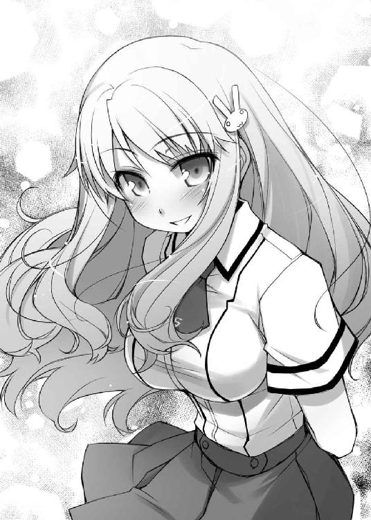
な、なんだ。冗談だったのか......。心臓に悪いなぁ......。
「驚いたなんてもんじゃないよ。心臓から口が飛び出すかと思ったよ」
「そ、それはそれで見てみたい気もしますけど......」
あぁもうっ。まだ心臓がバクバクいってるよ。ビックリしたぁ～。
「ごめんなさい。私、演技なんてあまりやったことがなかったから、つい楽しくなっちゃって」
そう言って、はにかんだ表情を見せる姫路さん。もしかすると、彼女は結構悪戯好きなところがあるのかもしれない。
なんてことを考えていると、一つの小さな疑問が頭に引っかかった。
あれ？『演技なんてあまりやったことがない』だって？
「姫路さん、演劇とかの経験があったわけじゃないの？」
「はい。そうですけど」
「そうなんだ。それは凄いなぁ......」
「？ 何がですか？」
何のことかわからず、きょとんとした顔をしている。まぁ、こういうことって自分では気付かないもんだよね。
「ほら。さっき、もの凄い真に迫った『人を好きになる演技』をやっていたでしょう？ あれ、僕には全然演技に見えなかったよ」
「え......？」
「本当に好きな人がいるんじゃないかって」
「え!? え!? え!?」
「だから、姫路さんはもしかすると――」
「そ、それはですねっ。えっと、その......っ！ 実は......っ！」
「もしかすると、前に演劇とか何かをやっていたのかな、って思って」
「明久君の想像通り、演技じゃなくて私の本当の............って、はい？」
「ほとんど経験がないのにあそこまで演技ができるんだから、もしかすると姫路さんにはそういった才能があるのかもしれないよ？」
「あ......。そういうことですか......」
感受性も強いみたいだし、姫路さんは隠れた逸材なんじゃないだろうか。
そうやって、僕は褒めたつもりだったのに、
「..................バカ」
なぜか一瞬、姫路さんが拗ねたような顔をした。
「え？ 何か言った？」
「いいえ。それよりもそろそろ教室に戻らないと。さっきのお芝居がうまくいったのかも気になりますし」
「そう言えばそうだった。姫路さんがあんまり驚かすから頭から飛んじゃったよ」
「ふふっ。ごめんなさい」
お芝居で遊んでいる場合じゃなかった。さっきの演技で清水さんを騙せたかどうかで僕らの設備の行く末が決まるんだから。
でも大丈夫！ あんな辛い腕の痛みを堪えてまで頑張ったんだから、きっとうまくいってるさ！バカテスト 化学
以下の文章の（ ）に入る正しい単語を答えなさい。
『分子で構成された固体や液体の状態にある物質において、分子を結集させている力のことを（ ）力という』
姫路瑞希の答え
『（ファンデルワールス）力』
教師のコメント
正解です。別名、分子間力ともいいます。ファンデルワールス力は、イオン結合の間に発生するクーロン力と間違え易いので注意して下さい。
土屋康太の答え
『（ワンダーフォーゲル）力』
教師のコメント
なんとなく語感で憶えていたのだということは伝わってきました。
惜しむらくは、その答えが分子の間ではなく登山家の間ではたらく力だったということです。
吉井明久の答え
『（努）力』
教師のコメント
先生この解答は嫌いじゃありません。「失敗もいいところだカス野郎」
泣きそうになった。
「坂本君、失敗ってどういうことですか？」
戻ってきたＦクラスの教室で雄二の席に集まる僕ら。Ｄクラス戦の用意をしに行っていた雄二はその準備を終えたのか、自分の席に座って呆れかえっていた。
「どうもこうもあるか。このバカが最後に逃げ出してくれたおかげで、やってきたこと全てが台無しだ。あんなモンを見て島田と明久が付き合っていると思うヤツなんているわけがない」
雄二に丸めた台本で頭をパカンと叩かれる。
むぅ......。あの時は必死だったから全然覚えていないんだけど、そんなにダメだったっけ？
「そうじゃな。せめてもの救いは、島田が明久に好意があるという様子を見せたことじゃが......それだけでは恐らく清水を動かすには不十分じゃろうな」
雄二の隣では秀吉も溜息をついている。雄二だけならともかく、秀吉も言っているんだから噓ではないだろう。参った。失敗だったのか......。
「オマケにもう一度トライしようにも、島田はあの調子な上にお前は姫路と一緒に仲良く戻ってくるときたもんだ」
雄二の席から離れた場所にある美波の席を見る。すると、美波は僕の顔を見てから「ふんっ」と不機嫌そうに鼻を鳴らして明後日の方を向いた。マズい。かなり怒っているみたいだ。
「ご、ごめんなさい。私と明久君が一緒に戻ってくるなんて、美波ちゃんと明久君が付き合っているのならおかしいですよね......」
「まぁ、それはクラスメイトなのじゃからそこまで不自然ではないのじゃが......。明久が島田を放置していった後で一緒に戻ってくるという状況がマズいのじゃ。周りにどう思われるか、ではなく島田に対してじゃがな」
お芝居だったとは言え、一応は彼氏役だったはずの僕が姫路さんと一緒に戻ってくるという状況が美波のプライドを傷つけたってことだろうか。そんなつもりは全然ないんだけど......。
「とりあえず、明久は島田に詫びの一つでも入れておいた方がいいな」
雄二が顎で美波の方を示す。
雄二の言うことももっともだ。元々怒っているにも関わらず、渋々でも協力してくれた美波を蔑ろにするなんて失礼にも程がある。ここは謝っておくべきだろう。
「そうだね。ちょっと行ってくるよ」
立ち上がり、美波の席に向かう。
悪意はなかったにしても、美波に悪いことをしてしまったということに変わりはないのだから。
「あのさ、美波」
不機嫌そうに窓の外を眺めている美波に恐る恐る声をかける。
「......何？」
でも、美波は声をかけてもこちらを向いてくれなかった。目だけ動かして僕を一瞬見ると、また余所に視線を向けてしまった。
「その、さっきはごめん」
見ていないかもしれないけど、きっちりと頭を下げる。でも、やっぱり美波はこちらに顔を向けてくれない。
「もうアンタなんか知らない。瑞希と仲良くやっていればいいじゃない」
「いや、姫路さんとは途中で会っただけで」
「言い訳なんて聞きたくない」
「あぅ......」
困った。取り付く島もない。
仕方がない。こうなったらさっきの秀吉の言葉を借りて美波を説得しよう。
「でも、このままだと姫路さんが――」
転校させられちゃうよ、と言おうとしていると、急に美波がこちらを向いて鋭い目つきで僕を睨みつけた。
「......瑞希、瑞希って、アンタはいつもいつも......！」
「み、美波？」
「どうして瑞希ばっかりいつもお姫様扱いなのよ！ じゃあウチはなんなの!? 男だとでも思ってるの!? どうしてウチにはいつもそんな態度なのよ！」
美波が今までに見たこともないような剣幕で一息にまくしたてた。
「べ、別にそんなつもりは！」
「瑞希が転校させられそうになったら、ウチが瑞希の両親に話をしに行くわ。だから、もう話しかけないで。アンタの顔なんて見たくない」
そう言い捨てて、美波はまた余所を向いてしまった。もう今はどんなに話しかけてもこちらを向いてくれそうにない。
「ごめん。悪かったよ」
最後にもう一度頭を下げてから皆のところに戻る。
皆は僕の方を見て『やっちゃったな』といった顔をしていた。
「完全に怒らせちゃったよ......」
「そのようじゃな」
秀吉たちにも今の会話は聞こえていたようだ。
「ごめんなさい。私も後で美波ちゃんに謝っておきますから......」
「............それは時間を置いてからにした方がいい」
「うむ。ムッツリーニの言う通りじゃ。今の島田には明久や姫路が下手なことを言えば逆効果になりかねんからの」
確かに、今の美波はこちらの言葉を聞いてくれそうもない。時間を置くしかなさそうだ。
「やれやれ......。明久、ほとぼりが冷めたら、後できっちりフォローしておけよ？」
「うん。そうするよ」
今日は美波に随分色々やっちゃったなぁ......。
「それならその話は置いといて、だ。とにかく、このままだといつまで待ってもＤクラスからの宣戦布告はないだろう。こっちから状況を動かす必要がある」
話題を切り替えても雄二の表情はいつになく硬い。美波の怒りとは別に、僕らＦクラスの状況もかなり拙いのだろう。
美波のことは気になるけど、今は頭を切り替えよう。
「ムッツリーニ。Ｂクラスの様子はどうだった？」
「............現在七割程度の補充を完了。一部では開戦の用意を始めている」
「そうか。予想よりも早いな。向こうも本気ってことか」
「............休み時間もずっと補充をしていた」
昼休みや休憩時間も全部費やしてテストを受けていたとなると、補充の完了ももうすぐだろう。宣戦布告が来るのも時間の問題だ。
「まずはＤクラスに仕掛ける前に時間を稼ぐ必要があるな。ムッツリーニ、悪いが須川たちと協力してＢクラスに偽情報を流してくれ」
「............内容は？」
「Ｄクラスが試召戦争の準備を始めているって感じで頼む。その狙いがＢクラスだということも」
「............了解」
ムッツリーニは頷いているけど、僕には雄二の意図することが理解できない。ＤクラスがＢクラスを狙っているという偽情報が何の意味を持つんだろう。
「雄二、それって何か狙いがあるの？」
「ただの時間稼ぎだ。Ｄクラスに狙われていると知れば、Ｂクラスは連戦を避けたいと考えるだろうからな。俺たちへの宣戦布告を躊躇うはずだ」
なるほど。僕たちに宣戦布告をすると連戦が確定しちゃうから、ＢクラスはＤクラスの様子を見るだろうってことか。場合によっては僕たちに向けていた戦争準備をそのままＤクラス戦に費やす必要があるかもしれないだろうし。
「本当はＣクラスが狙っているという話にしたいところだけどな」
「Ｃクラスは前の試召戦争でＡクラスに負けてるもんね」
残念ながらＣクラスも僕たちと同じで、自分たちから試召戦争を申し込む権利がないのだから仕方がない。
「んでムッツリーニ。ある程度偽情報の流布が終わったらそっちは須川に一任してくれ。お前には更に他のこともやってもらいたい」
「............わかった」
ムッツリーニは僕らに静かに告げると、須川君のところに向かっていった。須川君は以前にも放送を使った情報操作なんかをやっていたし、きっと二人でうまくやってくれることだろう。
「さて。次は秀吉だな」
「む。なんじゃ？」
「お前にはＤクラスの清水を交渉のテーブルに引っ張り出してもらいたいんだが、頼めるか？」
「それは構わんが......交渉と言ってもどうするつもりじゃ？」
「どうするつもりも何も、こっちの目的は一つだ。清水を挑発して、敵意を煽る。向こうが乗ってきたら成功、そうでなければ失敗。それだけだ」
清水さんは今のＤクラスの要と言える。雄二は淡々と言っているけど、その交渉は僕らの行く末を担う大事なポイントだ。
「ふむ。清水を引っ張り出しての交渉ともなると......その場に島田も連れて行く必要があるのじゃろう？」
「ああ。その方がより確実に挑発できるからな。下手に同席させると逆効果になることも充分考えられるが、その辺は俺がうまくやろう」
遠目に様子を見ると、美波はさっきと同じポーズのまま窓の外を見ていた。ここからじゃ表情は見えないけど、背中だけでも充分に怒っているのが伝わってくる。
あんな状態の美波に同席してもらって相手をうまく挑発するなんて、僕にはとてもできそうもない。きっと雄二だからこそできることなんだろう。
「うむ。ならば、そちらもなんとかしておこう。機嫌を戻すのは無理じゃろうが、交渉に同席してくれるように頼むくらいは可能じゃろ」
「そうしてもらえると助かる。今の島田のところに明久や姫路を行かせるわけにはいかないからな」
僕が怒らせちゃった尻拭いをさせるなんて申し訳ない......。
「心得た。交渉の場は空き教室、時刻は放課後すぐで良いか？」
「それでいい。そのくらいの時間までならＢクラスの宣戦布告を遅らせることができるはずだからな」
「了解じゃ」
秀吉も席を立ち、教室を出て行った。まずはＤクラスに向かってから時間を置いて美波の説得にあたるつもりなんだろう。
そして、この場に残ったのは僕と雄二と姫路さんの三人。
僕らは何をするんだろうと思っていると、雄二が急に妙な質問をしてきた。
「ところで明久」
「うん？」
「今朝は何を食べた？」
何を食べたって......。今は時間がないはずなのに、朝ごはんの話なんてしている余裕があるんだろうか。
「雄二、そんな話をしている暇はあるの？」
「いいから答えろ。これはこれで大事なことなんだ」
僕の朝ごはんが大事って、どういうことだろう。よくわからない。
けどまぁ、別に隠すことでもないから正直に答えておくとしよう。
「いつも通り水を飲んだくらいだよ」
そんな僕の返事を聞くと、雄二はまるで深夜の通販番組に出ている外人みたいなオーバーリアクションをとって見せた。
「水だけ？ それはいけないな明久！ お前は今回の作戦の要だ。しっかり食べて力をつけてもらわないと！ なぁ姫路？」
「え？ そうですね。確かに明久君はいつもきちんと食べていないので心配です」
なんだ？ 雄二が僕の食生活の心配をするなんて何かがおかしい。優しさどころか悪意が垣間見えるのは気のせいじゃないだろう。
「そこで、だ。姫路」
「はい」
僕の第六感が告げる。ヤツは僕を殺す気だ、と。
「何か食べ物を――」
「そう言えば今朝はスクランブルエッグにトーストだった！ いやぁ、ばっちり朝ごはんを食べると調子がいいねっ！」
この場を逃れる為に噓をつく。姫路さんの料理だけはダメなんだっ！
けど、そんな僕の気持ちを無視して雄二がにこやかに告げる。
「いやいやいや。姫路に心配をかけまいというお前の気概は素晴らしいが、無理をすることはないんだぞ明久。正直に話せばいい」
死にたくないです。（←正直な気持ち）
でも、そんなことを言うわけにもいかないので言葉に詰まる。すると、僕より先に姫路さんが言葉を発していた。
「ごめんなさい。お昼も過ぎちゃったので何も残っていないんです」
姫路さんが申し訳なさそうに言う。けど、それは僕にとって何よりもありがたい情報だった。良かった......。本当に良かった......！
雄二が何を意図していたのかはわからないけど、これでヤツの企みは潰えたはず。そう思って悔しがるヤツの顔を見てやろうと視線を送ると、
『まだまだ甘いな明久』
というアイコンタクトが返ってきた。なんだ？ どういうことなんだ？
「そうか。無いのか。それなら悪いんだが......明久の為に何か簡単な食い物を作ってもらえないか？」
訪れたのは、雄二による地獄への誘い。
「............」
「おいおい明久。どうして俺にしか聞こえないくらいの小さな声で『ギブ、ギブ』なんて連呼してくるんだ？ おかしなヤツだなぁ」
裏切り者――っっ！
何!? これは罰!? 死刑!? さっき失敗した僕への嫌がらせ!?
「それはいいですけど、材料が」
「安心してくれ。調理室の鍵を（勝手に）借りてきた。材料もある」
ポケットから小さな鍵を取り出す雄二。
なんという計画的犯行。そんなに僕が憎いのか！
「わかりました。明久君、何が食べたいですか？」
僕の気持ちも知らず、姫路さんはにこやかに質問を投げかけてくる。
食べたい物......。そうか。ここで上手な選択をすれば、僕の致死率はグッと低くなるはずだ。要は材料を限定できればいい。予期しない毒物が混入されないような料理......よし、目玉焼き（材料：卵のみ）でいこう！
「そうだね。それじゃあ」
「ゼリーがいいだろう」
ゼリー→（材料：不特定多数）
「............」
「なんだ明久。そんなに潤んだ瞳で俺を見るな。捨てられたチワワみたいだぞ」
「捨てないで！ 捨てないで雄二！」
僕のたった一つの大切な命を！
「ゼリーですか。わかりました。頑張ってみます！」
「宜しく頼む。容器はドリンクゼリーなんかに使われるようなパックのやつだと助かる。多分、運動部用のやつが置いてあるはずだ」
調理室は運動部が特製栄養ドリンクを作るのによく利用している。きっと雄二の言う通りのものはあるだろう。僕は全然望んでいないというのに。
「じゃあ、ちょっと行ってきますね」
「ああ。頼む」
「はいっ」
雄二から鍵を受け取り、姫路さんは教室を出て行った。
「......雄二、どういうつもり？」
その姿を見送ってから残っている雄二を半眼で睨みつける。
「別にお前に恨みがあってのことじゃない。姫路の料理が必要なだけだ」
「え？ 姫路さんの料理が？」
「そうだ」
「なんだ。それならそうと言ってくれたら良かったのに」
よくわからないけど、僕を処刑するのが目的じゃなかったみたいだ。良かった。
「まぁ、ああまで言った以上、姫路はお前に食べさせようとするだろうがな」
訂正。全然良くない。
「こ、こうしちゃいられないっ！」
急いで立ち上がる。早く後を追わないと！
「明久、どこに行くんだ？」
「姫路さんの後を追うんだよ！ せめてどんな物を作っているのかだけでも確認しないと！」
中身によっては事前に救急車を呼んでおく必要があるかもしれない。
「そうか。それなら俺も行こう。姫路の料理を一度見てみたい」
雄二も一度ならず被害に遭った身だ。姫路さんの料理の謎が気になるのだろう。
「あはは。雄二、遠慮することないよ。本当は見るだけじゃなくて食べてみたいんでしょう？ 今からでも遅くないから姫路さんに頼んでみなよ」
「それは御免被る。俺はまだ死にたくない」
それは僕だって同じことだ。
「あはは。遠慮すること無いよ。............マジで」
「ははは。遠慮しておこう。............マジで」
雄二と笑い合いながら姫路さんの後を追う。
程なくして調理室に到着。中では既に姫路さんが料理を始めている気配があった。
「それじゃ、開けるよ」
「ああ」
姫路さんに気付かれないようにコッソリと扉を開けて中の様子を窺う。調理室の中からは姫路さんが動き回る音が聞こえてきた。
遠目で調理台の上を確認する。
まだ準備を始めたばかりのようで、特におかしな点は見当たらない。
姫路さんが棚からボウルを二つ取り出して、その中に何かを入れている。片方がゼラチン、もう片方が砂糖といったところだろうか。
（なんだ。意外と普通だな）
（そうだね。ゼリーくらいなら大丈夫かもしれないね）
（それだと困るんだがな）
困るってどういうことだろうと思っているところに、調理室の中から聞こえてくる姫路さんの独り言。
『えーっと......まずは、ココアの粉末をコーンポタージュで溶いて――』
初手から信じられないことが起こっていた。
（ねぇ雄二！ 彼女は何を作っているの!? いきなりゼリーから遠く離れた何かになっているような気がするんだけど！）
（静かにしろ明久。姫路に見つかるぞ）
僕の中の料理という概念がいきなり崩れ始めている。恐ろしい。本当に恐ろしい。
『オレンジと長ネギ、どっちを入れると明久君は喜んでくれるでしょうか......？』
（迷わない！ その二つの選択肢は迷わないよ姫路さん！）
（恐らく貧弱な食生活を送るお前の為に栄養価に重点を置いた特別料理を作ろうとしているんだろうな。......味を度外視して）
（そんな!? 気を遣わないで普通でいいのに！）
そうやって特別仕様にするからいつも凄いことになっちゃうんだろうか。
『あとは、隠し味にタバ――』
（これ以上は聞くな明久。食えなくなるぞ）
（待って！ せめて最後に入れられたのが『タバコ』なのか『タバスコ』なのかだけでも確認させてよ！）
頼む......！ せめて辛くて刺激的なアンチクショウの方であってくれ......！
（あまり時間もない。我が儘を言うな）
（僕の命に関わるんだけど!?）
必死の抵抗も虚しく、首根っこを摑まれてズルズルと引き摺られてしまう。この野郎。隙を見て貴様にも必ず食わせてやる......！
「よし。それじゃあ、このまま新校舎の三階をうろつくぞ。暇そうにな」
「え？ 時間が無いって言ってるのに目的も無くうろつくの？」
また雄二がよくわからないことを言っている。これも作戦なんだろうか。
「ＢクラスとＤクラスに俺たちが何も知らないというアピールをする為だ。うまくいけばＢクラスに対しては時間稼ぎになるし、Ｄクラスには開戦に踏み切る為の判断材料と思わせることができる」
新校舎の三階というとＡ～Ｄクラスの教室がある。そこを暇そうに歩くことで、僕らＦクラスが点数補充をしてないとアピールするつもりのようだ。そうすればＢクラスは僕たちが何も知らないと思ってギリギリまで点数補充をして僕らへの宣戦布告を遅らせるかもしれないし、Ｄクラスは僕らが点数補充をしていないと知れば戦い易いと判断してくれるかもしれない。それは両方とも僕らにはありがたい状況だ。
なるほど、色々考えてるなぁ。
「ＤクラスがＢクラスに対して敵意を抱いているというムッツリーニの偽情報が伝われば、ＢクラスはＤクラス戦も想定する必要が出てくる。そこで俺たちが動きに気付いていないと知ったら、試験召喚システムのメンテナンスが終わる明日までは様子見も兼ねて黙って点数補充に勤しむだろうさ」
それにしても、色々と入り組んできてわかりにくくなってきた。少し頭の中を整理してみよう。
まずＢクラス。ここは僕たちＦクラスに攻め込もうとしている。ただし、前に負けたことで僕たちを警戒しているせいか、今のところは点数補充に力を入れている。試験召喚システムのメンテナンスが終わるか点数補充が済むまでの間は僕らに何もしてこないだろう。未だに宣戦布告すらしてこないのは、僕らに開戦の意思を悟らせない為。何も知られなければ僕らは点数補充を行わず、より簡単に勝つことができると思っているからだ。その代わり僕らがＢクラスの考えに気付いているとバレてしまったら即座に宣戦布告してくるだろう。
次にＤクラス。ここは僕たちＦクラスに対しての開戦派と非開戦派に分かれている。開戦派のトップは清水美春さんで、非開戦派はおそらくクラス代表である平賀君だろう。最初は清水さんがヒートアップしていたせいで開戦派が強かったけど、今は違う。清水さんの行動原理だった僕と美波の関係に対する嫉妬が落ち着いてしまったからだ。今のままでは試召戦争を起こすことなく静観するだけになるだろう。
そして僕たちＦクラス。現状では僕らに敵意を抱いているＢクラスに対しては戦いにすらならない。そんな勝てない戦いを避ける為に、Ｂクラスより先にＤクラスに宣戦布告をさせて交戦状態に入る必要がある。そしてＤクラスとの戦いを乗り切って点数補充を済ませる、という作戦だ。点数補充を終えたら、Ｂクラスも簡単には僕たちに手を出すことができない。それは前の戦いの経験から向こうも嫌と言うほど学んでいるだろう。
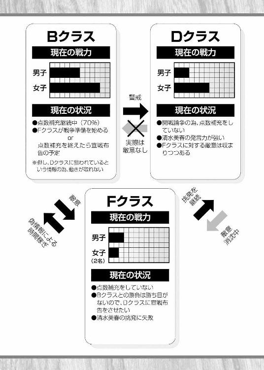
こんなところだろうか。なんとも複雑になってきたけど、要するに今の僕らは時間稼ぎをしているだけで、かなりピンチに陥っているってことだ。
「さっきの話だが、あとはＤクラス戦の時のちょっとした布石にもなるんだが......まぁ、それは今説明してもお前にはわからないだろうしな」
今雄二が言っているのは、僕らが三階をうろつくことで得られる効果のこと――なんだけど、今の段階からＤクラス戦の為の作戦なんて言われても正直困る。僕は雄二ほど悪知恵が働かないんだから。目の前のことで精一杯だ。
「そうだね。その説明は後でいいよ。それよりも、うろつくってただフラフラ歩き回っていればいいの？」
相手を油断させる為にうろつくといっても、どうしたらいいのかよくわからない。一応自習中とは言っても授業時間の最中だし、ただ歩き回っているだけだと不自然に思われる気がする。
「確かにただフラついてるだけっていうのもつまらんな。何かゲームでもするか？」
「ん。オッケー」
何もせずに歩いているよりはマシだろう。
「んじゃ、英単語クイズでもやるか。英単語を言うから、その意味を答えるんだ。五問のうち一問でも答えられなかったら負けだ」
英単語クイズか。僕に勝ち目がないような気がするなぁ。
けど、まぁいっか。どうせ何も賭けていないただの暇つぶしだし。
「ん。オッケー。ドンと来い」
「よし。それじゃ、罰ゲームは『負けた方が勝った方の言うことを何でも聞く』だ。行くぞ」
「え!?」
なんだか最後に変な条件が追加された気がする！
「ちょ、ちょっと雄二!?」
慌てて止めようとするけど、雄二は聞く耳を持たずに問題を出してくる。
「〝astronaut〟」
アストロノート。
ああなんだ。良かった。聞いたことがあるような単語だ。これくらいなら大丈夫。サクッと答えてしまおう。
えっと、アストロノート、アストロート......、アスロート......
【アスファルト】：道路舗装の材料などによく用いられる黒色の物体。主成分は炭化水素。
恐らく類似品のはずだ。
「明久、なんだかわかるか？」
僕がわかっていないと思っているのか、雄二が余裕の笑みを浮かべている。ふふっ。甘い甘い。僕だっていつまでもバカじゃないさ。
「勿論わかるとも」
対抗して僕も余裕の笑みを浮かべてみせる。今回ばかりは僕の勝ちだ。
「そうか。じゃあ言ってみろ」
問いかける雄二に、僕は焦らすように答えてやる。
「道路によく使われているアレだよね？」
「俺の勝ちだな」
バカにしたような雄二の勝利宣言。ま、まだ答えを言い切っていないのに......！
「どうして最後まで聞かずにそんなことが言えるのさ！ 勝負は最後までわからないはずだよ！」
「ほほぅ。お前は〝宇宙飛行士〟を道路のどこに使うつもりなんだ？」
「............」
【astronaut】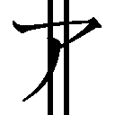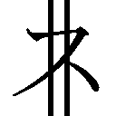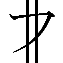 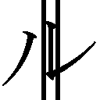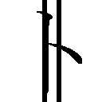 宇宙飛行士
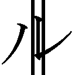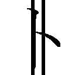 宇宙飛行士
「............ケアレスミス、か......」
「待て！ どこに注意を損なう要素があったんだ!?」
惜しかった。あと一歩のところで詰めが甘かったみたいだ。
「でも、負けは負けか......。認めるよ雄二」
マルかバツかで分けたら、残念ながら今の僕の解答はバツになってしまう。ここは男らしく負けを認めよう。
「今ので負けを認めないようなら人としてどうかとは思うが......」
雄二が呆れたように僕を見ている。なんだその人をバカにしたような目は。
とにかく雄二の出題はこれで終わりだ。さて、順番から言うと、
「今度は霧島さんの番だね」
「......頑張る」
雄二の後ろで霧島さんは小さくコクンと頷いた。見た目は大人っぽいのに、そんな子供っぽい仕草がとても可愛らしく見えた。
「ぶっ!? しょ、翔子！ いつの間に!?」
後ろを振り向いて慌てふためく雄二。あれ？ 気付いていなかったのかな？
「いつの間にも何も、問題を出し始めたあたりからずっといたじゃないか」
「......雄二が『何でも言うことを聞く』って言ったのが聞こえたから」
なるほど。そんな台詞が聞こえたからここに来たのか。霧島さんは顔や頭だけじゃなくて耳までいいんだなぁ。
「それじゃ、霧島さんが出題者で雄二が解答者だね」
「......わかった」
「ま、待て！ 翔子が参加するなんて聞いていないぞ!?」
「今更そんなコトを言うなんて男らしくないよ？ 雄二はそんな言い訳をして逃げるような男なのかい？」
自分から言い出したことなんだし、こう言えば雄二は乗ってくるだろう。
「く......っ！ じょ、上等じゃねぇか！ きっちり答えてやらぁ！」
こういう時の雄二は扱いやすくて助かる。
「というわけで霧島さん、一問目をどうぞ」
「......うん。えっと――」
何かを思い出すように霧島さんが顎に手を当てる。
「――〝betrothed〟」
ダッ（身を翻す雄二）
ガッ（その肩を摑む僕）
「雄二、どこに行こうとしているのかな？」
「明久、てめぇ......！」
霧島さんの問題を聞いた瞬間に雄二はその場から駆け出そうとしていた。わからないから逃げ出そうなんて甘い甘い。
とは言え、雄二の気持ちもわからないでもない。一問目から決着だと見ている僕もつまらないし。
「霧島さん。いきなりトドメっていうのも可哀想だから、問題を変えてあげてよ」
「......わかった」
小さく頷いて僕の提案を受け入れてくれる霧島さん。やっぱりいい人だ。
「......じゃあ、〝prize〟」
「prize......【賞品】か？」
今度はきちんと答えられる雄二。
霧島さんは正解と小声で告げてから更に問題を出した。
「......〝as〟」
「【として】」
「......〝engagement ring〟」
「【婚約指輪】」
「......〝get〟」
「【手に入れる】」
「......〝betrothed〟」
ダッ（身を翻す雄二）
ガッ（その肩を摑む僕）
「だから雄二、どこに行こうとしているのかな？」
「放せ明久！ 後生だから放してくれ！」
まったく、答えられないからって逃げようなんてズルいなぁ。
「だいたい、今の一連の単語を聞いたなら俺の恐怖がわかるだろ!?」
えっと、つなげると【賞品】【として】【婚約指輪】を【手に入れる】か。霧島さんは勝ったら雄二に婚約指輪を買ってもらおうと言ってるのかな？
「あはは。霧島さんの冗談に決まってるじゃないか。僕らはまだ学生だよ？ 婚約指輪なんて買えるわけが」
「......あっ」
霧島さんが取り落としたのは、宝石店の案内。
「......冗談」
そう呟いて、霧島さんは恥ずかしそうに冊子を拾った。
「............」
「あはは。雄二ってば。そんな僕にしか聞こえないような小さな声で『ヤバい。マジヤバい』なんて連呼されても困っちゃうよ」
虚ろな目が印象的だ。
「さぁ雄二、答えをどうぞっ」
「〝betrothed〟か......。〝betray〟が【裏切る】だから、〝betrothed〟は【謀反】とかそんな感じか？」
「霧島さん、正解は？」
「......雄二のこと」
「死刑囚か！」
「......【婚約者】」
なるほど。〝betrothed〟は【婚約者】って意味なのか。
「さてと。答えられなかった雄二の負けだよね。約束通りなんでも言うことを聞いてあげないと」
雄二の表情がどんどん曇っていく。これほど幸せな光景はそうそう見られないだろう。
「翔子、さっき冗談って言ったよな？」
「......うん。婚約指輪は冗談」
冊子まで用意しての冗談だなんて、霧島さんはお茶目だなぁ。
「じゃあ、本気の方はなんだ？」
「......それは――」
頰を染めて俯きながら霧島さんが呟く。
「――人前じゃ、恥ずかしくて言えない......」
「なんだ!? 俺は何をさせられるんだ!?」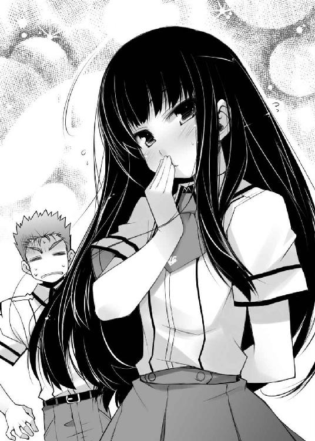
人前だと恥ずかしくて言えないことってなんだろう。まさかとは思うけど、ムッツリーニが大好きな感じの話なんてことは――
「......こんなところで言わせるなんて、雄二はいやらしい」
「死ね雄二ぃぃーっ！」
「なぜ俺が狙われるんだ!? 俺は何も言っていないだろ!?」
「黙れ！ 今朝聞いた『寝ている霧島さんに無理矢理キスをした』って話も含めて納得のいく説明をしてもらおう！」
「待て！ 話の内容が変わっているぞ!? 本当は――」
「......キスだけじゃ終わらなかった」
その一言が僕の中のリミッターを解除した。
「嫉妬と怒りが可能にした、殺戮行為の極致を思い知れ......っ！」
「うぉっ!? 明久の動きがマジで見えねぇ！」
「......キスの後、一緒に寝た」
第二リミッター解除。
「ごふっ！ バ、バカな......！ 明久に力で負けるなんて......！」
「......とても気持ち良かった」
最終リミッター解除。
「更に分身――いや、残像か!? もうお前人間じゃないだろ!?」
「『殺したいほど羨ましい』という嫉妬心は、不可能を可能にする......！」
「上等だ！ こうなりゃこっちも本気で相手してやらぁ！」
こうして新校舎の三階には、摩擦で焦げた靴のラバーの臭いが充満していった。
☆
「はぁ、はぁ、はぁ......。危ないところだった......」
「ま、まさか、鉄人が、あんなところにいた、なんて......」
所変わってＦクラスの教室。新校舎の三階で死闘を演じていた僕と雄二は、途中で現れた鉄人から逃げ切ってここまで戻ってきていた。
「まぁ、目的は、達成した、な......」
「そ、そう、だね......。他の、クラスの人も、見ていた、からね......」
恐ろしい形相の鉄人が駆け寄ってくるまでの間にＡ～Ｄクラスの人たちが騒ぎを聞きつけて廊下に様子を見に出てきていた。あれなら雄二の目的は達成できているだろう。
「ふぅ......。余計な時間を食った気もするが、一応予定通りだな。ムッツリーニは戻ってきているか？」
「えーっと」
教室の中を見回す。すると、タイミングよくムッツリーニが教室に入ってくる姿が見えた。
「お、戻ってきたか。偽情報はどうだムッツリーニ」
「............首尾は上々」
誇るわけでもなく、淡々と答えるムッツリーニ。なんていうか、プロの姿って感じだ。
「............それで、次の仕事は？」
「ああ。今姫路が戻ってくる。そうしたら次の行動に移ろう」
教室の中に姫路さんの姿は無い。例のゼリー作りに精を出しているのだろう。できれば手を抜いてもらいたいところだけど。
「そう言えば、わざわざ手料理なんて作ってもらってどうするのさ」
この状況でそんなことをさせるなんて、僕への嫌がらせだけが理由とは思えない。きっと何か考えがあってのことだろう。
「姫路の料理は暗殺用の武器だ」
本人が聞いたら傷つくだろうなぁ。
「暗殺用？ 誰を？」
「Ｂクラスの奴だ」
ヤツっていうとＢクラス代表の根本君のことだろうか。
「でも、根本君が簡単に僕らの出した物を口にするかな？ きっと凄く警戒していると思うよ？」
根本君の性格からすると、僕ら以外の人が持っていってもきっと同じことになるだろう。とてもゼリーを食べてくれるとは思えない。
「いや、ターゲットは根本じゃない。今更根本を暗殺したところでＢクラスが止まるとは思えない」
ムッツリーニの情報を思い出す。あの時根本君は宣戦布告についても指示を出していた。確かに今根本君が倒れたところでＢクラスは止まらないだろう。
「狙いはＢクラスからＤクラスに出される使者だ。恐らくＢクラスはＤクラスに同盟を申し込むだろうからな」
「同盟って？」
「ムッツリーニの偽情報でＤクラスに狙われていると知ったら、Ｂクラスの連中はその対応をする必要があるだろう。その場合に考えられるのがＤクラスとの同盟だ。使者を出すだけで戦いを避けられるなら、それに越したことはないからな」
そっか。Ｂクラスは連戦にならないようにＤクラスに根回しをするだろうってことか。
「って、かなりマズいんじゃない？ Ｄクラスに話をしに行かれたら『ＤクラスがＢクラスを狙っている』っていうのが偽情報だってバレちゃうじゃないか」
その話がデマだとバレた時点で時間稼ぎは失敗してしまう。Ｂクラスの点数補充もそろそろ終わるだろうし、そうなったら僕らはただ死を待つだけだ。
「だからこそ、その同盟の申し込みに行く使者を狙う。同盟に向かった使者がやられたら、Ｂクラスは間違いなくＤクラスに敵意を感じるだろう。そうなれば同盟は成立しないし、連中の疑心は深まるはずだ」
なんて卑劣なことを考える男なんだろう。今後は敵に回さないように気をつけよう。
「けど、暗殺の為ならスタンガンでいいじゃないか。わざわざ姫路さんの料理で毒殺なんてしなくても」
「スタンガンは悲鳴を上げられるからな。周りに気づかれるわけにはいかない」
「口を手で押さえればいいじゃないか」
「アホか。そんなことをしたら自分も感電するだろうが」
「でも」
姫路さんの料理じゃなくても何か他に手段があったような気がする。
「気にするな。姫路の料理を選んだのは俺の趣味だ」
雄二が僕の命を考慮していない外道な台詞を口にすると、
「え？ 坂本君、私の料理が好きなんですか？」
丁度教室に戻ってきた姫路さんが聞いていた。
「ひ、ひめ、じ......？」
ギギギ、とブリキの玩具のように首を動かす雄二。
「良かった。そう言ってもらえると嬉しいです。けど、霧島さんに聞かれたら怒られちゃいますよ？」
姫路さんは嬉しそうに笑っている。
「は、はは、は......」
僕は切なそうに笑っている雄二を慰める為にその肩に手を置いた。
「ウェルカム（グッ）」
「テメェ、そのムカつくほど爽やかな笑顔はなんだ......！」
これで仲間が増えた。やっぱり地獄の旅は道連れだね。
「坂本君の分もありますので、良かったらどうぞ」
姫路さんは笑顔のまま僕らにパック入りのゼリーを渡してくれた。
「そ、そうか。すまないな。後で腹が減った時にでももらおう」
「ぼ、僕もそうするよ。姫路さんありがとうね」
「いいえ。これくらいお安い御用です」
姫路さんは本当にいい子だ。だから、上手な料理を作って欲しいだなんて贅沢は言わない。少しくらい美味しくなくてもいいから、せめて死線を彷徨うことのない料理を作って下さい......。
「んじゃ、行くぞ明久、ムッツリーニ」
「了解」
「............わかった」
僕らはそれぞれ武器を手に、再びＡ～Ｄクラスのある新校舎の三階へと向かった。
☆
（わ。本当に出てきた）
（そのようだな。とりあえず俺の読みは当たっていたか）
相手に見つからないように階段の近くで隠れながらＢクラスの様子を見ていると、教室から男子生徒が一人出てくるのが見えた。
（相手が一人っていうのも予想通りなの？）
（まぁな。Ｂクラスは点数補充に忙しくて使者に人数を割けるわけがないからな。立場の無さも考慮すると、男子が一人で向かうのは予想通りだ）
だからこその暗殺か。確かに人数がたくさんいたら暗殺なんていうのは難しいだろう。
（暗殺はうまくいくかな？）
（ムッツリーニなら間違いなくうまくいく。見ていろ）
目をやると、Ｂクラスの男子はＤクラスに向かって歩き始めていた。
周囲には大勢というわけじゃないけど人影が少し見える。どうやって目立たないように暗殺を実行するんだろう。
ＢクラスとＤクラスの間の短い道のりを使者が歩く。あと三十秒もしないうちにＤクラスの扉を叩くことになるだろうと思うと焦りを感じた。ムッツリーニ、まだ動かないのか......？
使者がＤクラスにつくまであと五メートル。
（雄二、本当に大丈夫なの？）
問いかけている間にも使者の足は進む。
残りはあと三メートル。
（大丈夫だ。ムッツリーニを信じろ）
あと二メートル。
ムッツリーニはまだ動かない。
（けど、もう距離が......！）
そして、あと一メートルでＤクラス、というところで何かが視界を横切った。
カッ
（え？）
何かの音が使者から少し離れた場所の廊下の壁から響く。なんだ？
目を凝らすと、壁にカッターが刺さっているのが見えた。いや、それだけじゃない。カッターの先には写真が貫かれている。ちょっと変わった矢文といったところだろうか。
『なんだ、アレ......？』
『先に何か貼ってあるな』
『何かの写真、か......？』
周りにいた人たちがそのカッターと写真に注目し始める。刺さった壁の近くにいた人たちからカッターの下に集まり出して――そして、その最後尾には例のＢクラスの使者がやってきていた。
『............（ススッ）』
音もなくその背後に迫るムッツリーニ。今は周囲の視線は全てカッターと写真に集まっている。誰もその様子には気付かない。
『............（ガッ）』
『――っっっ!?!?』
暢気に写真を見ようと背伸びをしていた使者をムッツリーニが後ろから羽交い絞めにして口を押さえる。使者は目を白黒させて突然の事態に驚いていた。
そして、ムッツリーニの手に凶器が見えた。間違いない。あれは姫路さんの作ったゼリーだ。
『............（グッ）』
『――っ！ ――っ！』
指の隙間からパックの先を押し込み、ムッツリーニが中身を押し出す。相手はそれを必死になって阻止しようとしていた。
他の生徒たちが写真に注目している背後で命を懸けた攻防が繰り広げられる。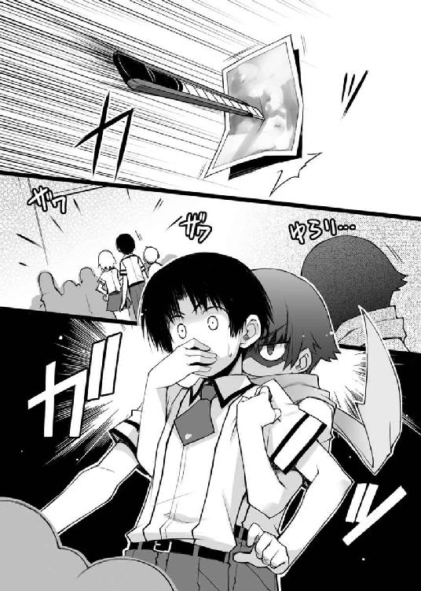
僕と雄二が息を呑んで見守る中、その戦いはついに決着を迎えた。
ゴクリッ
格好良い効果音とともに使者の喉を劇物が通過する。
『か......は......っ!! き......さま......ムッツリー......』
『............（ググッ）』
末期の寸前に憎しみの籠った視線を向けてくる使者に対して、ムッツリーニは情け容赦なく更にパックの中身を押し込んだ。
使者の手が一瞬ビクンッと跳ね上がる。
そしてそのまま――男は動かなくなった。
敵には一切の手心を加えない。それが暗殺者という非情の存在。
（............任務完了）
動かない男子生徒の身体を抱えてムッツリーニが戻ってきた。
（流石だ、ムッツリーニ。惚れ惚れするような手際だった）
（............この程度、何の自慢にもならない）
雄二の賞賛に対しても眉一つ動かさない。ただ手際良く男の死体をＢクラスから見えてＤクラスからは見えないような場所に押し込むだけ。
（............これでＢクラスが最初にこの死体を見つけるはず）
（よし。ならもうここに用はない。教室に戻るぞ）
（そうだね。次の手を考えないとね）
三人で何事も無かったかのようにＦクラスへと続く渡り廊下を歩き出す。
『この写真に写ってるセーラー服の子、結構可愛いな』
『ああ。でもなんかＦクラスにいるバカに似ている気がしないか？』
『まぁ、私はそれならそれでもいいと思うわ。可愛いし』
バカテスト 国語
次の熟語の正しい読みを答え、これを用いた例文を作りなさい。
【相殺】
姫路瑞希の答え
『読み......そうさい
例文......取引の利益で借金を相殺する』
教師のコメント
そうですね。差し引いて帳消しにする、という意味なので貸し借りなどに使われる言葉です。
吉井明久の答え
『読み......そうさつ
例文......パンチにパンチをぶつけて威力を相殺した』
教師のコメント
惜しいですが間違いです。『そうさつ』という読みも一応ありますが、その場合の意味は『互いに殺し合うこと』というものです。この場合の吉井君の例文では互いに打ち消し合うという意味なので、読みとしては『そうさい』が正解となります。
島田美波の答え
『読み......あいさつ
例文......のどかな朝。私は友達と相殺した』
教師のコメント
その朝は決してのどかではないでしょう。暗殺を終えてから様子をみることしばらく。六時間目の途中くらいになると、Ｂクラスはどうやら僕らの思惑通り疑心暗鬼に陥っているらしいという情報が入ってきた。
「これで時間稼ぎは成功したのかな？」
Ｆクラスは前に言われた通り自習時間となっているので、僕らは雄二の席に集まって作戦会議を進めていた。
「そう長い時間は無理だが、明日までくらいなら大丈夫だろ」
例のＢクラスの使者が目を覚ますまでは僕らの仕業だということはバレない。但し、その効果も今日一杯が限度だろう。明日になれば例の使者が復活して何があったのかを話すだろうし、そうしたらＢクラスはＤクラスに事情を聞きに行くだろう。今度は暗殺なんて通用しないように大人数で。
僕らのタイムリミットは今日一杯。いや、明日の朝まで。明日の朝一番にＤクラスが僕らに宣戦布告をしてくれたら僕らの作戦は成功だ。
現時点での問題点は一つ。
「秀吉、例のＤクラスとの交渉は大丈夫？」
「うむ。清水を引っ張り出すことはできた。放課後に旧校舎二階の空き教室で待ち合わせという手はずになっておる」
一応舞台は整ったわけか。そうすると、あとはＤクラスをいかに怒らせるかだけど。
「雄二よ。Ｄクラスを開戦に踏み切らせる為の策はあるのかの？」
「勿論だ。とっておきの作戦がある」
なんとも頼もしい雄二の台詞。確かに挑発や罵倒はコイツの十八番だ。きっと任せておけばうまくやってくれるだろう。
「但し、明久は余計な口を挟むなよ。一応お前と島田がいないと挑発にならないから連れて行くが、下手なことを言われると取り返しのつかないことになるからな」
「了解。その辺は全部雄二に任せるよ」
僕はその場に同席して適当に相槌でも打っていよう。もう失敗はできないから、その程度の役割でいいのは気楽で助かる。
「............一つ、気になることが」
近くで何かの機械を弄りながらムッツリーニが口を開いた。
「どうしたムッツリーニ。何かあったのか？」
「............根本がＡクラスに何かの情報を流していた」
根本君というと、Ｂクラスの代表だ。今の状況ではＡクラスに用があるとは思えない。なんだか気になる情報だ。
「妙だな。Ｄクラスが気になっているはずのこの状況で更にＡクラスを巻き込んでどうしようってんだ？ 多くのクラスを巻き込んでも膠着状態になるだけでＢクラスに有利になるはずが――」
ムッツリーニの情報に雄二が眉を顰めていると、
バンッ
大きな音をたてて教室の扉が開け放たれた。
「......雄二......っ！」
その向こうから現れたのはＡクラス代表の霧島さん。いつもはクールで落ち着いた人なんだけど......今はなんだか焦っているように見える。何かあったんだろうか。
「翔子？ そんなに慌ててどうした？」
「......どうした、じゃない。雄二こそ、どうしてまだ学校にいるの......！」
まだ学校にいるのが何かおかしいんだろうか。一応まだ放課後にはなっていない。寧ろ学校にいない方がおかしいだろう。
「？ お前は何を言っているんだ？」
「......お義母さんが倒れたっていうのに、どうして様子を見に行かないの......!?」
霧島さんが怒っている。雄二のお母さんが倒れた？ そんなこと初耳だ。
「はぁ？ あのおふくろが？ 風邪すら引かない全身健康体だぞ？」
雄二も知らなかったようだ。そりゃそうか。知っていたのなら流石にお母さんのところに向かっているだろう。
「......とにかく、早く家に......！」
業を煮やしたように雄二の手を取って強引に歩き出す霧島さん。余程雄二のお母さんが心配なのだろう。
「お、おいっ！ ちょっと待て！ 俺は今から大事な作戦が――」
「今はそんなこと言ってる場合じゃない！」
聞いたことのない霧島さんの怒声に思わず背筋が伸びる。驚いたのは僕だけじゃなかったようで、Ｆクラスにいる皆がその様子を唖然として見ていた。
「だから待て翔子！ 何かおかしい！ どうして俺より先にお前が」
「いいからっ！」
「翔子、落ち着――」
抵抗も虚しく、雄二は霧島さんにあっと言う間に連れ去られてしまった。
「「「............」」」
一瞬の出来事に呆然とする僕ら。
「............今の話は、おかしい」
そんな中、ボソリ、とムッツリーニが呟いた。
「え？ おかしいって、どういうこと？」
「............普通、そういう話は最初に雄二にくるはず」
「あ。そういえばそうだね」
家族が倒れたなんてことになれば、誰よりも最初に雄二本人に連絡がくるはずだ。いくらお嫁さん候補だからと言って、雄二より先に霧島さんに連絡が行くのはおかしい。
「雄二に連絡がつかなかったのじゃろうか？」
「いや、それも変だよ。雄二はずっと校内にいたんだから」
学校内にいるのがわかっていたら、先生たちは普通校内放送を使うはず。でも、そんな放送は一度もなかった。
「それに......雄二のお母さんが倒れたっていうのもおかしい気がする」
雄二のお母さんに持病があるなんて話は聞いたことがない。交通事故ならともかく、家で倒れるなんて、なんだか噓くさいと――
「ってまさか、さっきの根本君の話って！」
「............多分、雄二の母親が倒れたっていう偽情報」
「なんじゃと!?」
秀吉がガタン、と卓袱台に勢いよく手をつく。
やられた！ 根本君の狙いは霧島さんを使っての雄二の無力化だったのか！
「これはかなりマズい......！ 清水さんを挑発する為の作戦は、全部雄二任せだったっていうのに......！」
その肝心要の雄二が連れて行かれてしまった。このままだと僕らは無策で交渉に臨むなんてことになりかねない。
「ムッツリーニ、お主は雄二から何か聞かされておるか？」
「............（フルフル）」
首を振るムッツリーニ。当然僕も何も聞かされていない。秀吉も今の様子だと知らないだろう。さっきからずっと一緒にいる僕らが知らないのだから、他の人も知っているとは思えない。
「............多分、雄二は盗聴を警戒していたから」
「つまり、誰にも話しておらんということじゃな」
「そうなると、同じように情報が洩れる可能性があるメモとかも期待できないね」
「............（コクリ）」
こんなことなら、さっきまでの空き時間に雄二の作戦を聞いておくんだった。
「明久よ。雄二に携帯電話で連絡は取れぬのか？」
「............（コクコク）」
携帯電話を持っていない二人が期待の眼差しで僕を見ている。でも、
「無理だと思う。携帯電話は修理中だから」
「それは、お主の携帯電話が、か？ ならば誰か雄二の番号を知っている者に借りれば」
「ううん。僕のもそうだけど、雄二のも修理中なんだ」
今更ながらに雄二の携帯をお茶に突っ込んだことが悔やまれる。まさかこんなことになるなんて......！
「さっきの剣幕だと、霧島さんに連絡しても無駄そうだし......」
「そうじゃな。電話に出るほどの余裕があるのならば、その前に雄二が説得しているじゃろうからな」
学校から雄二の家まで往復する時間を考えると、どう見積もっても圧倒的に交渉開始の時間の方が早い。それに、雄二のお母さんが家にいなかったりしたら、雄二が戻ってくるには更にそれ以上の時間がかかる。もうすぐ始まる交渉にアイツが出るのはまず無理だろう。
「秀吉、交渉の時間って遅らせることはできる？」
「無理じゃな。明日の放課後にするならば可能かもしれんが、放課後に何時間も待たせるなど取り合ってくれんじゃろう」
「やっぱり、そうだよね......」
明日の放課後じゃ明らかに時間切れだ。その頃にはＢクラスとの試召戦争に突入しているだろう。かと言って、雄二が解放されるまで相手を待たせるというのも難しい。放課後何もせずに何時間も待っていてくれる義理は向こうにはないのだから。
「くそ......っ！ やってくれたな、根本君......！」
「全くじゃな。当人にしてみればＤクラスを警戒している間の時間稼ぎ程度のつもりかもしれんが、今のワシらにはこの上ない痛手じゃ」
「............キツい」
根本君の狙いが只の時間稼ぎなのか、それともＤクラスとの連戦を想定して、より簡単に僕らに勝つ為に雄二を弱らせようとしたのか、その真意はわからない。けど、その行動は根本君の思惑以上の効果があった。
「秀吉、ムッツリーニ。何か良いアイデアはない？ こう、清水さんをうまく挑発できるような」
「なんとも難しいのう......。平常時ならいざ知らず、今日のワシらは色々と動きすぎて警戒されておるじゃろうからな。それこそ、こんな状態では雄二くらいしか挑発なぞ成功させられんじゃろう」
「............お手上げ」
弱った。二人と同じで、僕だって何の策もない。一体どうすれば......。
必死に頭をフル回転させるけど、何も思いつきやしない。マズい。マズい......！
「............そろそろ、時間」
「え!?」
時計はもう六時間目終了時刻を示している。交渉がもうすぐ始まってしまう。
「............どうする？」
ムッツリーニが訊いてくる。けど、
「どうするも何も、雄二がいない以上は僕らでなんとかするしかないよ」
ここにいないヤツに頼っても仕方がない。無策だし自信もないけど、やるしかないんだ。
「そうじゃな。ここまで来た以上は後には退けん」
残り時間はあと五分もない。急いで用意をしないと。
「とりあえず、参加メンバーは僕ら三人と美波くらいかな」
「いや、ムッツリーニは待機していた方が良いかもしれん。向こうには『先日の覗きの件について謝罪をしたい』と言ってあるからの。恐らく向こうのメンバーはクラス代表の平賀とＤクラス女子生徒の代表といったところじゃろうから、こちらもそれに倣って人数を絞るべきじゃ」
なるほど。覗きの件についてと言っておけばクラス代表の平賀君と、少なくとも表面上は覗きに対して怒っていた清水さんが出席せざるを得ない。挑発がうまくいけばその場で宣戦布告をさせることも可能だろう。
「わかった。それで、その場で謝罪そっちのけで相手を怒らせたらいいってワケだね」
「うむ。狙いはクラス代表の平賀もそうじゃが、なにより清水じゃ。今Ｄクラスの行動決定権は清水にあると言っても過言ではないからの」
「............男子の発言力は皆無」
ムッツリーニの事前調査によると男子生徒の意見は取りあってもらえず、女子生徒はほとんど清水さんに追従する形になっているらしい。勝負の鍵は清水さんだ。
「それじゃ、清水さんをうまく怒らせよう」
「了解じゃ」
「............（コクリ）」
こうして、僕らはクラスの命運を懸けた大事な交渉に、雄二抜きの無策で臨むことになってしまった。
☆
放課後。待ち合わせの空き教室に入ると、中ではＤクラス代表の平賀君と清水さんがそれぞれ椅子に座って僕らを待っていた。
「待たせたね」
大して悪びれた様子もないように、口だけの謝罪を述べてみせる。あくまでも謝罪というのは名目で僕らの目的は挑発だ。相手を怒らせないと意味が無い。
そう思ってできる限り無礼な態度を取るつもりできたけど――
「お姉さまっ！ お会いしたかったですっ！」
「美春!? ちょっと、暑苦しいからひっつかないでよっ！」
目標は完全にこちらを無視して美波に飛びついていた。というか、美波以外眼中になさそうな雰囲気だ。
「お姉さま......。邪魔者のいない空き教室で放課後に二人きりなんて、やっぱり美春のことが」
「ど、どこ触ってんのよ!? それとアンタ、周りの連中が見えていないの!?」
「ああ......お姉さまのお胸は最高です......。そう。まるで波の静かな大海原を彷彿とさせるような......」
詩的な表現をしているけど、要約すると『水平線のようにペッタンコ』という意味だ。
「お姉さま......。美春はお姉さまを心よりお慕いしております......」
「や、やめてよっ！ ウチにそっちの趣味はないんだから！」
「美春はお姉さまのことを、一年３６０日、常に想い続けているのです......」
盆と正月は忘れているらしい。
「とにかく離れなさいっ！」
美波がくっついている清水さんを力ずくで引っぺがす。
なんだかいきなりペースを向こうに持っていかれた感じがする。本当にうまく挑発できるんだろうか。
「清水よ、そこまでにしておくのじゃな。島田は明久の恋人じゃ。むやみやたらと手を出すでない」
秀吉が清水さんに切り込んだ。僕らは謝罪をする気はないのだから、そっちの方向に話題を持っていくのは望むところだ。
秀吉がそう挑発すると、清水さんは初めて美波以外の面子がいることに気がついたかのような態度で答えた。
「何をふざけたことを言っているのです？ お姉さまとそこの豚野郎の間にはなんの関係もないことくらい、お姉さまのお顔を見れば一目瞭然です」
いかにも全て知っていますといった口ぶり。まぁ実際に情報収集で僕らが付き合っているという話が噓だというのは知っているんだろうけど。
「......それは......」
美波は清水さんの言葉にリアクションを取りあぐねていた。僕に対しては怒っているから恋人というのは否定したいけど、クラスのことを考えると肯定しないといけない。その二つの考えが美波の頭を悩ませているんだろう。
「だいたい、そこの豚野郎がお姉さまに相応しいとは思えません」
言いながら清水さんは僕を指差している。
相応しくない、か......。
「そりゃ、僕は勉強も出来ないし部活もやってないけど、でも」
「勉強？ 部活？ 違いますね。美春が言いたいのはそんなことじゃありません。それ以前の問題です」
僕の口上を遮ると、清水さんは見下すような視線を僕に送りながら言葉を続けた。
「美春は前々から二人の関係を見てきましたが、そこの豚野郎の態度は最低です」
僕の態度が最低だって？ むぅ......。思い当たるフシが多すぎる。
「同じクラスの姫路さんに接する態度とお姉さまへの態度があまりに違い過ぎます」
言われた瞬間、美波がピクンと反応した。
「姫路さんには優しく気を遣い、まるでお姫様を相手にするかのような態度。それに対してお姉さまへの態度はどうです？ 全く気遣いも無ければ、異性に対する最低限の優しさすら見られないじゃないですか」
美波が唇を嚙みしめている。その姿はなんだか泣き出す寸前のような、か弱い印象を僕に抱かせた。
「はっきり言えば、そこの豚野郎はお姉さまの魅力に気付いていないどころか、何の気も遣わずに男友達に接するような態度でお姉さまに接している大馬鹿野郎です。そんな男がお姉さまに相応しいかどうかなんて、容姿や学力以前の問題です。それに――」
トドメを刺すように、清水さんは口の端を少し吊り上げて僕に言い放った。
「――それに、演技とは言え『好き』とまで言ってくれたお姉さまを放って姫路さんを追うなんて、普通は考えられません。もしかして、お姉さまのことを男だとでも思っているんじゃないですか？」
「――っっ!!」
清水さんの台詞を聞くや否や、美波が教室から走り去っていった。
「美波!?」
なんだか様子がおかしい。早く追わないと！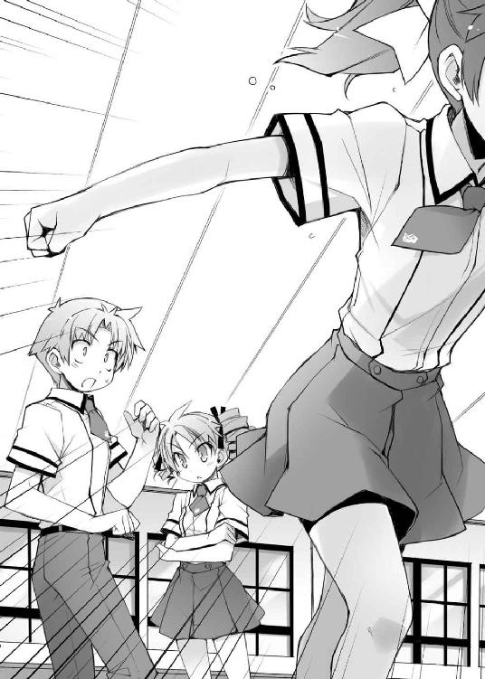
「追ってどうするんです？ また男友達に接するように乱暴な言葉でもかけるんですか？ そうやって更にお姉さまを傷つけるんですか？」
清水さんの言葉に思わず足が止まる。
「明久。島田はワシが追おう。今お主が行っても逆効果じゃ」
そう言うと、秀吉は僕の肩をポンと叩いてから美波の後を追って教室を出て行った。
人数が減ってしまった室内になんとも言えない空気が流れる。
「......よくわからないけど、俺ももう行っていいんだよな？ こんなんじゃ謝罪どころの話じゃなさそうだからな」
すると、ずっと無言だったＤクラス代表の平賀君が気まずそうに立ち上がり、教室を出て行った。この雰囲気に耐えられなかったのかもしれない。
果たして、空き教室には僕と清水さんだけが残される形となった。
「この話し合いに何の目的があったのかは知りませんが、美春はもう貴方を恋敵として認めるようなことはありません。お姉さまの魅力に気付かず、同性として扱うだけの豚野郎に嫉妬するなんて、時間の無駄ですから。......お姉さまの魅力がわかるのは美春だけです」
清水さんが席を立つ。
この話し合いは失敗だ。Ｄクラスは僕たちに宣戦布告をしてくるようなことはないだろう。
けど、今はそんなことどうでもいい。試召戦争云々じゃない。それよりも大事な、譲れないものがある。
「ちょっと待って、清水さん」
バカテスト 心理テスト
以下の状況を想像して質問に答えて下さい。
『あなたは今、独りで森の中で道に迷っています。
明かりもなく暗い森の中を進むと、あなたは湖のほとりに小さな小屋を見つけました。これ幸いと中に入るあなた。すると、そこには椅子とベッドと肖像画が。さて、その肖像画に描かれている人物の特徴は？ 頭に浮かんだものを３つ挙げて下さい』
姫路瑞希の答え
『１．楽しげな表情
２．優しい瞳
３．明るい雰囲気』
教師のコメント
これは『あなたの好きな人の特徴』についてわかる心理テストです。暗い森はあなたの不安を表し、そんな時に見つけた小屋の中にある肖像画は『あなたの心を支えてくれる伴侶』を表します。
どうやら姫路さんの好きな人は温和で明るくて楽しい人のようですね。
清水美春の答え
『１．気の強そうな瞳
２．男らしい胸
３．ポニーテール』
教師のコメント
最後の一つがおかしい気がします。
島田美波の答え
『１．折れた指
２．捻じ曲げられた膝
３．外された手首』
教師のコメント
全部おかしい気がします。『我々Ｄクラスは、Ｆクラスに対して宣戦布告を行う！』
翌日。朝のＨＲの終了直後にＤクラスの男子がやってきて、僕らに高らかにそう告げていった。
「？ なんじゃと？」
近くで秀吉が怪訝そうな顔をする。昨日の一連の流れを知る秀吉なら無理もない。
「どういうことだ。昨日聞いた話だと清水の挑発は失敗のはずだが？」
雄二も疑問符を浮かべている。電話で秀吉に聞いた話との違いが解せないのだろう。ちなみに僕にも電話をしたらしいけど、繋がらなかったらしい。そろそろ家の電話代も払わないとなぁ......。
「ムッツリーニ。状況はわかるか？」
「............昨日何があったのかはわからない。ただ、今日は朝から清水が興奮していた」
「清水が？ だとすると、挑発は成功していたんじゃないか？」
「いや、そんなことはないはずなのじゃが......。明久。お主、あの後に何か話しておったのか？」
「い、いや。別に。それよりも試召戦争だよ！ Ｂクラスじゃないとは言え、今の僕らには厳しい相手なんだから早く準備を始めないと！」
秀吉の探るような目から顔を逸らす。こういう時、秀吉の演劇の才能は厄介だ。
「......それもそうだな。真実はどうであれ、まずは目先の試召戦争だ。ここまでやってＤクラスに負けたら何の意味も無い」
経過はどうあれ、結果として僕らはＤクラスからの宣戦布告を勝ち取った。けど、まだ終わりじゃない。ここから更に点数の少ない状態でのＤクラスの相手という難しい作戦が待っている。雄二は今やるべきことは真実の追及じゃないということがわかっているようだ。
「確かにその通りじゃな。今ワシらの中でまともに戦える者は少ない。この戦力で凌ぎ切るのは至難の業じゃ。余計なことを考えている暇はあるまい」
「............防衛が優先」
秀吉もムッツリーニも納得して頭を切り替えたようだ。さて。僕も試召戦争に集中しないと！
「それで雄二、作戦は？」
「考えてある。だが、その前に戦力の確認だ。今姫路と島田以外に戦えるヤツがどの程度いるのかを調べる」
そう言うと、雄二は立ち上がって教壇に上がった。
「野郎ども、よく聞け！ さっき言われた通り、これより俺たちＦクラスはＤクラスとの試召戦争に突入する！ まずは戦力の確認だ！ 各自、自分の持ち点を紙に書いて持ってくるように！」
Ｄクラスの宣戦布告でザワついていた教室が静まり返り、クラスの皆が紙とペンを取り出す。
先日の覗き騒ぎである程度使ったからといって、完全に点数を失っているわけでもない。点数の残り具合から補充するメンバーの選定を行うのだろう。
「そう言えば、ワシは１点も消費しておらんな」
「あれ？ そうだったっけ？」
「うむ」
よくよく思い出してみると、秀吉が最後の夜に戦闘している姿を見なかった気がする。
「そっか。それならフルで戦えるのは姫路さんと美波と秀吉の三人に増えたってことだよね」
「そうじゃな。総合科目勝負を挑まれたらワシらが率先して参加しよう」
言いながら秀吉も紙を取り出して点数を書き込んでいく。さて。僕も今の点数を書いて渡さないと。
「はい雄二」
「あいよ」
雄二にメモを手渡して定位置に戻る。
全員分のメモを受け取ると、雄二はそれをパラパラと捲りながら皆に呼びかけた。
「最初に下位十名に点数の補充をしてもらう。補充組は教室に残ってくれ。尚、科目は数学を受けるのが七人、世界史と化学と保健体育を受けるのが一人ずつとする。各自の配置は点数確認を終えてから発表する」
メモを小脇に抱えて雄二が戻ってくる。
僕は卓袱台にメモを広げて人員配置を考えている雄二に脇から話しかけた。
「ねぇ雄二」
「なんだ」
「どうして点数補充をあんなに細かく分けるの？ 僕らは早く点数を補充しなくちゃいけないんだから、まずは採点の早い数学だけに揃えるべきなんじゃないの？」
化学と保健体育はともかく、世界史は採点が甘い代わりに遅いことで有名だ。今の僕らには一番不向きな教科に思える。
「今回は極力時間を稼ぐのが目的だからな。戦術云々というよりは心理戦による睨み合いが必要になる」
「うん。それはなんとなくわかるけど」
「そんな睨み合いが必要な状況で数学教師だけを教室の中に入れて点数補充をしていたら相手はどう思う？ こちらに備えがないと教えてやっているようなもんだろうが」
「それはそうだけど......。でも、僕らが点数補充をしていないのは皆にバレているんだよ？ そんなことしても向こうは警戒なんてしないんじゃない？」
雄二の言いたいことはわかるけど、その程度で向こうが二の足を踏むとは思えない。
「そこを警戒させるのが作戦ってもんだろうが。まぁいいから見ていろ」
雄二が点数の書かれたメモを見ながらノートに布陣を書いていく。コイツの頭の中には既に作戦が出来上がっているのだろう。
そのノートを脇から覗き込んでいると、僕の配置が点数補充とは違うところになっていた。開戦直後は渡り廊下の防衛戦に参加するみたいだ。
「あれ？ 僕は点数補充じゃないの？」
結構減っていたからてっきり教室に残ってテストを受ける役回りだと思っていたのに。
「お前はまだ点数が残っていたからな。まずは戦死して０点になっている奴から補充していく」
そっか。僕は結局鉄人としか戦わなかったし、最終的には勝ったんだから点数は残っている。戦死して０点になっている人よりはまだ戦力になるってわけだ。
「それに、お前は特別な人材だしな」
「特別って、いやぁ、そんな......」
まぁ、元々僕は点数も高くないし、召喚獣の戦い方も力じゃなくて技術寄りだ。僕の点数を補充するよりも時間稼ぎのメンバーに加えた方が取り分があるという考えなのだろう。なんだか結構な評価をされているようで少しむずがゆい。
「今回の作戦でもお前は重要な役どころになる。キツいだろうが耐えてくれ」
「了解。そこまで言われたからには頑張るしかないね」
プレッシャーにはなるけれど、こうやって期待されるっていうのも悪くない。
現在時刻は○八五○。開戦予定時刻は○九○○だから、あと十分ほどだ。
僕は程よい緊張感に包まれながら試召戦争の開始を待っていた。
☆
「いいかお前ら！ 前回勝ったからと言って相手を舐めるなよ！ この状況の上に相手は俺たちより二つもクラスが上だ！ 下手に欲をかくと逆に手痛い目を見るハメになるからな！」
出撃前ブリーフィングとして、雄二が教壇に立って皆に説明を始める。
「どんなに有利な状況でも決して深追いはするな！ 決められた場所でひたすら防衛に徹しろ！」
下手に深追いなんてすると一瞬でこちらは蹴散らされてしまうだろう。なにせ、事前に行った点数調査では、姫路さんと美波と秀吉を除いたＦクラス全員の総合点数は１００００点にも満たない。補充を終えたＤクラスの女子が一人当たり１５００点程度と考えると、Ｄクラスは女子だけでも４００００点近い。それに更に男子がいるのだから、戦力差は歴然としている。まともな勝負は望むべくもない。
「向こうは圧倒的に有利な女子の総合科目をメインに攻めてくる！ 島田と秀吉を主軸にうまく立ち回れ！ 限界まで粘ったら状況によっては教室前まで退いてもいい！ 以上だ！ 健闘を祈る！」
雄二の説明が終わるとほぼ同時に時計の針がカチッと音をたてた。開戦時刻の午前九時丁度だ。
『ぃよっしゃぁああーっ!!』
渡り廊下や階段を確保するのが目的なので、先行部隊が開幕ダッシュで現場を目指す。向こうもこちらに何かをされる前に勝負をつけようと電撃作戦でくるはずなので、最初はスピード勝負だ。
僕も教室から出ようとしていると、無表情の美波も同じように扉に向かっている姿が見えた。一晩経ったけど、まだ怒っているだろうか。
よし。ちょっと話しかけてみよう。
「美波、おはよう」
「............」
返事がない。
「Ｄクラスが宣戦布告をしてくれて良かったよね」
「............」
こちらを向いてもくれない。
「あとはこの戦いを乗り切るだけだね」
「............」
全然相手にしてもらえない。
くっ。負けるもんか！ 諦めずに頑張って話しかけてやる！
きっと一方的に話しているから悪いんだ。質問口調に変えてみよう。
「あのさ。こうしていると、前の試召戦争を思い出さない？」
「............そうね。ウチがアンタに見捨てられたこととかね」
【墓穴・を・掘る】：慣用句。自ら身を滅ぼす原因を作ってしまうことの喩え。
「美波。もしかして......まだ怒ってる？」
恐る恐る訊いてみる。今までにも何回か美波を怒らせちゃったことはあったけど、その次の日にはすっかり元通りだった。こんなことは初めてだ。
すると、そんな僕の問いに美波は目を伏せて答えを返した。
「......それって、どういう意味よ」
「え？ どういう意味って」
マズい。また何か余計なことを言っちゃったんだろうか。
「どうせウチのことなんて『男らしいから一晩経ったら忘れてくれるだろう』とか思っていたんでしょ！ バカ！」
「う......」
「もう話しかけないでって言ったでしょ！ いいからこっちに来ないで！ ウチのことは放っておいてよ！」
美波がダッシュで教室を出て行ってしまう。
失敗したなぁ......。そんなつもりは全然なかったのに、また美波を怒らせちゃったみたいだ......。
溜息を一つついて、僕も教室を後にする。とりあえず渡り廊下に行かないと。
廊下を軽く走りながら旧校舎と新校舎をつなぐ渡り廊下を目指す。
「Ｆクラス、覚悟しなさい！」
「高橋先生、Ｄクラス玉野美紀が召喚を行います！」
渡り廊下にさしかかると、Ｄクラス女子の声が聞こえてきた。向こうは高橋先生を連れている。予想通り総合科目勝負でくるつもりのようだ。
勝負を挑まれた以上、召喚獣を喚び出さないと戦闘放棄と見なされて戦死扱いとなる。たとえどんなに不利だとしても勝負をするしかない。
「上等だ！ Ｆクラスの力を見せてやるぜ！」
「行けるのか、福村！」
「任せておけ！ 目に物見せてやる！」
「「試獣召喚！」」
Ｄクラス女子とＦクラス男子の喚び声が重なる。
それぞれの足元には毎度お馴染みの魔法陣。その中から現れるのは自身の姿をデフォルメした姿を持つ召喚獣。
『Ｄクラス 玉野美紀 ＶＳ Ｆクラス 福村幸平
総合科目 １５４３点 ＶＳ １１８点 』
「くそ......っ！ もう保たねぇ......！」
「福村!? まだ喚び出したばかりだろ!?」
戦力差１３００％。これは思っていたより酷い状況だ。
「くらいなさいっ！」
Ｄクラスの玉野さんの召喚獣が刀を振りかぶった。
「く......っ！ こうなったら！」
その動きに合わせ、福村君の召喚獣が武器を捨てて構えを取る。まさか無手で挑む気!? 自殺行為だ！
「い、一体何を......!?」
「Ｆクラスを舐めるなよ！」
戸惑う玉野さんをよそに、福村君の召喚獣が迫り来る刀に対して手をかざす。あ、アレは......！
誰もが固唾を飲んで見守る中、パンッと召喚獣が手を鳴らす音が響き渡った。
「へ、へへへ......。白刃取り、成功だぜ......」
得意げに告げる福村君。そう。アレは無手の極意の一つ、真剣白刃取りだった。
――残念ながら、彼の召喚獣の頭は敵の刀に両断されたけど。
「失敗してんじゃねぇかよ！」
「ば......っ！ ち、違ぇよ！ コレは俺の狙い通りなんだよ！」
後に彼はこう語る。『アレは右脳と左脳を使った白刃取りだったんだ』と。
「福村幸平、戦死！」
福村君の弁明も虚しく、早速戦死報告が入った。わかってはいたけど、恐ろしいほどの戦力差だ。
「よくも福村を！ 今度は俺が行くぜ！ 試獣召喚！」
補習室へと連れて行かれる福村君を尻目に戦いは続く。
そんな光景を見回していると、僕はあることに気が付いた。
「あれ？ なんだか、向こうの人数が少ないような......」
主戦力のＤクラス女子が九人しかいない。これはおかしい。Ｆクラスを制する為にはこの渡り廊下を突破しないといけないのに、これだけしか戦力を投入しないなんて不自然だ。向こうは速攻を狙っているわけだし、もっと戦力を投入して然るべきだ。
『......やっぱり姫路さんがいないわ......』
『階段の方にもいなかったみたい』
『時間稼ぎが目的みたいな戦い方だし、間違いないよね......』
そんなＤクラス女子間の会話が聞こえてきたかと思ったら、九人いる女子のうち二人がいなくなった。これは助かるけど......一体どういうこと？
「向こうは人数が少ない！ 取り囲んでうまく出入りしながら凌ぐのじゃ！」
秀吉の指示が飛ぶ。
こちらの人数は二十人。向こうの三倍近くだ。個々人の点数差は大きいけど、この人数差があれば隙を補い合ってうまく戦える。こちらは正面に秀吉と美波を立てて、その周囲から皆が援護するような陣形を取っていた。
『清水からの伝言だ。「怪しい情報を摑んだので防備を固めます。その場所は相手の狙いがわかるまで六人で戦線を維持するように」とのことだ』
『了解』
Ｄクラスの男子がやってきて伝言を告げたかと思ったら、更に一人が戦線から離脱していく。どんどん戦況が楽になっていくけど、何が起こっているのかはさっぱりわからない。
「ま、いっか。とりあえず雄二の指示通りに僕も動こう。――試獣召喚っ！」
僕も周りの皆に倣って召喚獣を喚び出す。雄二から受けた指示は『召喚獣を出して、一瞬だけ戦いに参加してから余裕たっぷりに離脱しろ。お前が点数を残しているというアピールができたら戻って来い』というものだ。全く意図が摑めないけど、これもきっと作戦なんだろう。おとなしく指示に従っておこう。
『Ｄクラス 玉野美紀 ＶＳ Ｆクラス 吉井明久
総合科目 １０１９点 ＶＳ ３１１点 』
徐々に点数を削られている玉野さんに狙いを定めて召喚獣を動かす。
「あ、アキちゃ――じゃなくて吉井君!? こ、このぉっ！」
一瞬妙な呼ばれ方をされた気がしたけど、今は余計なことを考えずに作戦を遂行しよう。
振り下ろされる敵の刀をサイドステップでかわして相手の懐に飛び込む。さてさて。ここで攻撃を入れることもできるんだけど......
「よしよし、と」
敢えて攻撃ではなく頭を撫でるという行為を選択する。雄二の言っていた『余裕たっぷり』ってこれでいいのかな？
「え......？」
攻撃が来ると身構えていた玉野さんが呆気に取られている。
よし。一応指示通りの行動は取れたはずだ。
「それじゃ秀吉。ここは大丈夫そうだし、僕は戻るね」
「うむ。了解じゃ」
秀吉にその場を任せて召喚フィールドから離脱する。こうやって誰かにバトンタッチしていくのなら戦闘放棄にはならない。
「それにしても......わからないことが多すぎる」
自分の教室まで小走りで向かいながら考えてみる。
雄二の目的は時間稼ぎというのは聞いている。その間にＤクラスが危険を感じる程度の戦力を整えて休戦協定に同意させるのが最終目的だとも。それはわかる。わからないのはさっき何が起こっていたのか、ということだ。
どうして相手は戦力を小出しにしていたんだろう。Ｄクラスの人が言っていた怪しい情報ってなんだろう。僕のさっきの行動には何の意味があるんだろう。
う～ん......ダメだ。全然わからない。雄二に訊いてみようかな。
喧騒から離れて我らがＦクラスの教室に入る。すると、
「あ。明久君。おかえりなさい」
「あ、うん。ただいま」
姫路さんがトトトッと駆け寄ってきた。これは嬉しい光景だけど......姫路さんほどの人が教室にいていいんだろうか？
「あのさ、姫路さんはどんな指示が出ているの？」
「はい......。それが、よくわからないんですけど、坂本君には『Ｆクラスの教室から出ないように』って言われているんです」
「え？ それだけ？」
「はい。それだけです」
むぅ......。益々わからない。雄二は何を考えているんだ？
「おう、戻ったか明久」
姫路さんと話をしていると、雄二がこちらにやってきた。
「首尾はどうだ？」
「ああ、うん。一応言われた通りにしてきたけど......それより、そろそろ作戦を説明してよ」
教室の中には点数補充の為の十名と防衛線を突破された場合の中間防衛部隊五名、他には予備戦力らしい人が何人かいた。
「あの、坂本君。私も教えてもらいたいんですけど」
「なんだ、姫路？」
「私は何もしなくていいんですか？」
不思議そうに姫路さんが首を傾げている。
姫路さんはこっちの主戦力だし、点数補充も既に済ませてある。渡り廊下や階段の防衛戦には必要な人材のはずだ。
「そうだよ雄二。どうして姫路さんに残ってもらったの？ 姫路さんが行けばもっと楽に戦えるはずだよね？」
そう尋ねると、雄二はしたり顔でこう答えた。
「そうだな。敵もきっとそう考えるだろうな」
「む。何か含みのある言い方だね」
いつもながら人の疑問に直球の答えを返してくれない雄二。イヤミな奴だなぁ。
「向こうはきっとこう考える。『Ｆクラスはこれだけの戦力を渡り廊下や階段に投入してきたのに、どうして姫路が出てこない？ 廊下や階段を制したいんじゃないのか？』ってな感じにな」
「でも、実際に守りたいんでしょ？」
「だからって戦力を注ぎ込んでどうする。俺たちの目的は制圧じゃなくて時間稼ぎだ」
「うん。だからこそ、向こうに釣り合う戦力を」
「拮抗状態を作るには、何もこっちの力を強くするだけが手じゃない。向こうの戦力を小出しにさせることだって有効なんだ」
雄二の説明を聞いていて、ふとさっきの光景が頭をよぎった。
そう言えば、Ｄクラスの人達は姫路さんがいないことを確認した後で何人かが戻って行ったような......。
「つまり、姿の見えない姫路さんを警戒させて、クラス代表の防衛に戦力を割かせているってこと？」
「そういうことだ」
なるほど。そういうことだったのか。確かに向こうの戦力が少なければこちらの戦力の消耗も少なくて済む。姫路さんの力を温存できれば廊下や階段を突破された後の防衛が有利になるし、体の弱い姫路さん自身も体力の消耗を抑えられるので楽になる。
「前にＤクラス代表の平賀は姫路に一杯食わされているからな。きっと面白いように警戒しているだろうさ」
「そっか。そういうこともあったよね」
平常時ならひっかかってくれないかもしれないけど、今の状況ではこの作戦はかなり有効に思える。雄二の言っていた敵の以前の苦い経験もそうだし、向こうの代表が男子生徒というのも良い影響を与えているだろう。僕らが勝とうとするなら正面突破じゃなくて奇襲で代表を討ち取るしか方法がない。そんな状況でＤクラスの代表は覗き騒ぎで点数が少ない上にＦクラスの主力である姫路さんは姿を見せない。これはもう、十中八九姫路さんで代表の首を狙ってくると考えるだろう。そうなれば向こうも主戦力となる補充が終わっている女子生徒をある程度代表の近くに置くしかない。
「それで渡り廊下の女子が戻っていったってわけか......」
「だが、それだけでは不十分かもしれないからな。向こうが強引に突っ込んでくることのないように、更にダメ押しをしておいた」
「ダメ押し？」
「情報操作だ。その為にムッツリーニに点数補充をさせてなかったんだからな」
教室の中には保健体育の大島先生がいて補充テストもやっているけれど、それを受けているのはムッツリーニじゃない。保健体育一科目だけで総合点数のほとんどを補うことのできるムッツリーニがどうしていないのかと思ったら、何か別のことをやってもらっていたのか。
「アイツには『ＦクラスがＤクラスとの開戦を望んでいた』って情報をＤクラスにリークさせている。何の準備も無ければ不自然な情報だが、Ｄクラスには清水がいる。盗聴器経由でそれらしく伝えるのはムッツリーニなら造作もないことだ」
渡り廊下でＤクラスの伝令が言っていたことを思い出す。
「ああ、さっきＤクラスの人たちが言っていた『怪しい情報がなんとか』ってそのことだったんだ」
清水さんからの伝言と言っていたし、盗聴器を使ってムッツリーニがうまくやったようだ。
「昨日の目的不明な交渉も含めて、Ｄクラスの清水と代表の平賀には思い当たるフシが沢山あるだろうからな。簡単に信じてくれるだろ」
「そういうことですか。確かにその話が伝われば、Ｄクラスは更に私たちを警戒するでしょうね。『勝ち目のない勝負で開戦を望んでいたとは思えない。Ｆクラスは何か秘策があるんじゃないか』って」
ふむふむ。向こうはどんどんありもしない僕らの企みが気になって手が出しにくくなっていくってワケか。
「......あっ！ そっか！ 僕と雄二がＤクラスの前をフラついていたアレも！」
「まぁ一応そういうことだ。あの時は単純に点数補充をしていないというアピールが目的だったが、今となっては意味合いが変わってくる。向こうにしてみれば『校舎も違って用がないはずの坂本と吉井がいたなんておかしい。アレは俺たちを開戦に踏み切らせる為の芝居だったんじゃないか』なんていう疑問の種になる。偶然が二つ三つと重なるとは考えないのが人間だ。その向こうに何か目的があるんじゃないか、と疑問に思うのは当然だろうさ」
コイツ、まさかあの時点でそこまで考えていたなんて......。やっぱりこういった話になると恐ろしく頭がキレる。神童未だ健在といったところだろうか。全部きちんと考えがあったんだなぁ......。
「向こうは今頃開戦を後悔し始めている頃だろうな。なにせ、得られるものが何もない上に負けたら最低設備に格下げなんていうハイリスクノーリターンの戦いだ。何かきっかけがあればすぐにでも休戦に応じるだろうよ」
「何かきっかけがあれば、ってことは、更にもう一押しする必要があるの？」
こっちの戦力を整えても、きっかけがないと休戦には持ち込みにくいと雄二は考えているんだろうか。確かに協定を結ぶには何かの区切りがないと難しいかもしれない。
「ああ。最後にもう一つ、手を打つ。敵の頭を討つ為にな」
「敵の頭っていうと、Ｄクラス代表の平賀君？ でも、そんなことができるなら休戦なんて――」
「平賀は無理だ。こちらを警戒しているから、間違いなく前に出てくることはない。だが、今回の勝負に限ってはＤクラスの頭は平賀一人じゃない」
雄二の説明を聞いて、姫路さんがポンと手を打った。
「わかりました。清水さんですね？」
「ご名答。清水を落とせばＤクラスの開戦派はおとなしくなる。休戦協定を結ぶ為のきっかけ作りにおあつらえ向きの状況が出来上がるだろうさ」
さっきの様子を思い出してみても、具体的な指示は清水さんから出ていたような気がする。確かに清水さんを落とせば休戦協定は簡単に成立するだろう。
「そんなわけで明久。お前には隣の空き教室で清水と一騎討ちをしてもらう」
「え？ 僕がやるの？」
清水さんを確実に倒すにはもっと強い人の方がいいだろうに。
「俺は指示を出す為に点数補充はできていないし、ムッツリーニも同じだ。姫路は姿を見せるわけにはいかないし、いざとなったら防衛に加わってもらう必要もある。つまりお前しかいないんだよ」
美波と秀吉は最前線で戦っているし、それは他の皆も同じ事。それなら召喚獣の扱いに一日の長がある僕が出るのが妥当っていうところか。
「それに、清水をひっぱり出すにはお前が好都合なんだ。俺は秀吉から聞いた話しか知らないが、その後に挑発は成功したんだろ？」
「う......。そ、それは、えっと......。ど、どうなんだろうね？」
挑発の成功失敗はともかく、僕が清水さんのターゲットになる可能性は充分ある。
「あっ。それでこの配置なんですね」
隣で聞いていた姫路さんが広げられていた雄二のメモを指差して頷いている。示しているのは空き教室にポツンと一人で配置されている僕の部分だ。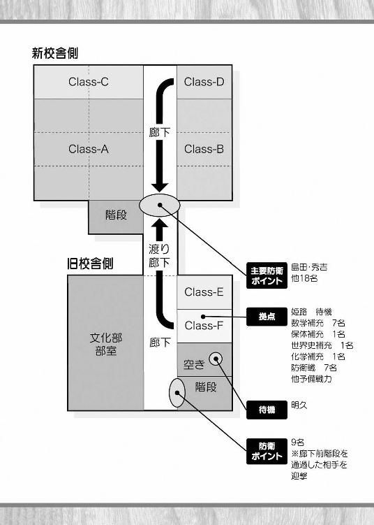
「さすが姫路。察しがいいな」
「......ごめん。どういうこと？」
ちなみに僕には全然わからない。
「そうだな......。例えば、この位置に須川が配置されていたとしよう。もしもお前が戦っている相手だとしたら、そこに須川がいることについてどう思う？」
「どう思うも何も......意味のないものにしか思えないけど」
雄二の示す空き教室は守るべき代表もいなければ、地理的に押さえておかないといけない場所でもない。そんな場所に一人でいるヤツがいても、警戒はするけどそこまで深くは考えないだろう。
「まぁ、普通はそう考えるよな。それなら、そこに更に条件を付け加えよう」
「条件？」
「ああ。そのタイミングで、須川とお前が姫路を巡って争っていたとしよう。そうすると、どう見える？」
「あ、あの、私を巡って、って......」
う～ん......。僕と須川君が姫路さんを巡って争っている最中に試召戦争が起きた場合か。そうなると、僕としてはそっちも大事な話になるわけだから、試召戦争とは別に須川君のことが気になるだろうし、須川君も僕のことが気になっているだろうし......。そんな状況で須川君が一人でこんな場所にいるとしたら、
「須川君が僕を待っているように見えるかな。姫路さんを巡っての話に決着をつけるために」
「ああ。その通りだ」
よくできました、といった感じで頷く雄二。
「つまり、だ。この配置は、他の連中には首を取る必要もない明久が意味もなく空き教室にいるだけに見えるだろうが、清水にとってはそうじゃない。明久が決着をつける為に清水を待っているように見えるってことだ。その為にわざわざ明久を前に出して存在をアピールさせたりもしたんだからな」
僕が前線に出た理由はそれか。点数もあるし戦えるけど、敢えて前線に加わらないというスタンスを見せて、清水さんに僕が待っていることを伝えようってわけだ。
「じゃあ、さっき坂本君が言っていた『教室前まで退いてもいい』っていうのも......」
「そうしないと明久がここで待っているということに気付いてもらえないからな。休戦の交渉に足るだけの点数補充を終えたら、廊下か階段を開放して空き教室の様子を教えてやる必要がある。もっとも、こちらが劣勢だと思われるわけにもいかないから、匙加減が難しいところだがな」
確かに、これでうまく清水さんをおびき出せるのなら、負けないで休戦に持ち込むことが可能かもしれない。けど、
「そんなにうまくいくのかなぁ......？」
どうにも不安だ。これで清水さんが本当に来てくれるのかどうか、僕にはイマイチ判断できない。
「それは結果を見てのお楽しみってヤツだな」
それなのに、雄二は自信満々の様子だった。
「まぁ、雄二がそこまで言うならいいけど......」
「よし。それならとりあえず、明久は隣の空き教室に移動してくれ。いつ防衛線が突破されるかもわからないからな」
「わかった。今すぐ移動するよ」
一応やろうとしていることはわかったわけだし、僕は言われた通り隣の空き教室に待機して清水さんが来るのを待つことにした。
☆
「さて、これで俺たちは清水が来るまで待機だな」
「そうですね。......ふふっ」
「なんだ、姫路？ 人の顔を見て笑うとは失礼なヤツだな」
「あ、ごめんなさい。そういうつもりじゃないんです」
「なら、どういうつもりだ？」
「いえ。なんだかんだ言っても、やっぱり坂本君は明久君のことを理解しているんだなって思って」
「んぁ!? な、何をいきなり気色悪いことを......！」
「照れなくてもいいじゃないですか」
「いや、本気で気持ち悪いんだが......」
「だって、明久君のことを理解していないと、さっき言っていた作戦を実行なんてできませんよね？」
「清水をおびき出す、って話のことか？」
「はい」
「......まぁ、理解云々はともかく、だ。アイツの性格を考えると、昨日の話し合いで秀吉たちがいなくなった後、アイツが清水にどんなことを言ったのかはなんとなく想像がつく。それが清水にとっては放っておけない内容だったってこともな」
「私も......なんとなく、ですけど、明久君がどんなことを言ったのか想像できる気がします」
「アイツはバカな分、考えていることがわかり易いからな」
「素直なんですよ、きっと」
「それは同意しかねるな」
「ふふっ。坂本君は素直じゃないですね」
「けっ。言ってろ。......けど、いいのか姫路？」
「はい？ 何がですか？」
「いや、これはお前にとってはあまり良い話じゃないと思ったんだが......」
「......そう、ですね......。確かに嬉しい話じゃありませんけど――」
「けど？」
「――けど、私はそういう明久君に、惹かれているんですから......」
「ん？ すまん。聞こえなかったんだが」
「あ、いいえ。なんでもありません」
「そうか。まぁ、とりあえず......ご馳走さんっと」
「き、きちんと聞こえてたんじゃないですかっ！」
☆
特に何かすることがあるわけでもないので、空き教室での退屈な時間を一人で過ごす。携帯ゲームや本で時間を潰したいところだけど、そんなことをやっていたら一騎討ちに臨んでいる人には見えないだろうし、なにより見つかったら没収される危険性がある。仕方がないので、ぼんやりと考え事をしていた。
脳裏をよぎるのは、美波のこと。
僕の美波に接する態度は間違っていたんだろうか？
美波は僕が気を遣わないでいたことに傷ついていたんだろうか？
僕はもう徹底的に嫌われてしまったんだろうか？
そんな疑問がぐるぐると頭を巡る。色々と考えてみるけど、考えれば考えるほど頭の中が混乱していく。こんなことなら、常日頃からもっと頭を鍛えておくべきだった。
自分の頭の弱さに辟易しながらも必死で考える。思考は収束しないし、答えが導き出される予兆もない。それでもまだまだ考える。
そして、そのままどのくらいの時間が過ぎたかわからなくなった頃、気が付けば廊下での喧騒がこちらに近づいてきていた。
「そろそろ、かな......？」
頭の中からさっきまでの考え事を一旦追い出して思考を切り替える。まずは目の前の試召戦争だ。
教室の防衛がうまくいっているのか不安になるけど、グッと目を閉じて堪える。僕には僕の役目があるんだから。
近くで行われているであろう防衛戦の喧騒と、狙い通り誰かが僕の様子を見ていたような気配を感じる。
そのまま更に待つことしばし。
「こんなところに一人でいてくれて良かったです。貴方に話がありましたから」
待ちわびていた相手の声が聞こえてきた。
良かった。本当に来てくれたみたいだ。
胸を撫で下ろしながらゆっくりと目を開けて相手を確認する。間違いない。Ｄクラスの清水さんだ。
「話って、何かな？」
歩み寄ってくる清水さんに問いかける。
こうして待っていてなんだけど、僕からは話すことなんて何もない。
「そう難しい話ではありません。要するに――白黒はっきりさせましょう、というだけです」
そう告げる彼女の目は敵愾心に満ちている。よほど僕のことが気に入らないのだろう。
「幸いにも今は試召戦争の最中です。わかりやすく決着をつけることができます」
清水さんの後ろには布施先生の姿が見えた。どうやら向こうの準備は万端のようだ。
ここで勝負から逃げれば僕は敵前逃亡で戦死扱い。当然受けるしかない。
清水さんは提案と言ってはいるものの、僕に同意以外の選択肢を与えるつもりはないのだろう。それともあるいは......、僕が断るとは微塵も思っていなかったのかもしれない。僕も決着を望んでいるだろう、と。
そしてその考えは、恐らく正しい。
「わかったよ。勝負だ、清水さん」
僕がそう言うと、清水さんは布施先生の方を向いて告げた。
「先生。召喚許可をお願いします」
「わかりました」
布施先生の許可の下、僕と清水さんは化学の点数での召喚が可能になる。
「「試獣召喚!!」」
二人同時に喚び声をあげると、僕らの足元にそれぞれ幾何学的な魔法陣のような紋様が現れた。そして、その中心から徐々に僕らの分身とも言える召喚獣が姿を見せる。
僕らはそれぞれの召喚獣に構えを取らせながら睨み合った。
清水さんは試召戦争をそれなりに経験しているし、今回は不意打ちでもない。簡単にあしらえる相手じゃないのだから、慎重に攻めないと。
お互いに隙を窺うような状態が続く。
「......そう言えば、勝負を始める前に一つ確認しておきたいことがありました」
そんな緊迫した雰囲気の中、清水さんは召喚獣から目線を外すことなく僕に問いかけてきた。
「何かな？」
答える僕も、当然視線は召喚獣に固定している。
「昨日の話ですが」
「うん」
「あれは、この戦争を起こす為の狂言ですか？ あの交渉も、最後の言葉も」
ＦクラスがＤクラスとの開戦を望んでいたという情報。それによって、清水さんには昨日の不自然な交渉の目的が見破られている。だからこそ、彼女はそんな疑問を抱いたのだろう。
「それは......」
即座には答えられず、言葉に詰まる。
果たして、ここで正直に答えたところで信用してもらえるんだろうか。
今更何を言っても空々しく聞こえてしまう。誰がどう見ても、僕らが美波を利用していたとしか思えないような状況なのだから。......そして、僕らが美波を利用して、昨日の交渉でＤクラスを挑発しようとしていたことは事実なのだから。
「どうなんですか？」
「............」
再び問いかけてくる清水さんに、僕は返す言葉を持たない。
「そう、ですか......」
そんな沈黙を肯定と受け取ったのか、清水さんはそれ以上僕に問うこともなく、ただ言葉を切った。
「............」
「............」
召喚獣にも動きがなく、無言の状態が続く。
睨み合いというわけじゃない。清水さんは俯いて召喚獣から目を離している。
そうしていたのは、ほんの数秒程度だっただろうか。
不意に、清水さんが震える声で呟いた。
「............泣いて、ました」
怒りを伴う、静かな口調。
「............お姉さま、昨日走り去る時に......泣いて、ました」
言われて、僕も昨日のことを思い返す。
清水さんの言う通り、美波は涙を浮かべて駆け出していた。
「きっかけは、美春の言葉です。......でも、原因は、原因は......っっ!!」
清水さんが俯いていた顔を上げる。
僕を睨みつけるその瞳には、烈火の如き怒りが見て取れた。
「オマエが......！ オマエのような男がいるから......っ！ お姉さまが泣く羽目になるんです！」
その言葉を合図に清水さんの召喚獣が突っ込んでくる。
正面からの真っ直ぐな攻撃に、僕は力を受け流すように動いた。
「ぐ......っ！」
それなのに、僕の身体に鈍い痛みが訪れる。
正面から受けたわけじゃないのにこの威力。余程点数の差があるんだろう。
『Ｄクラス 清水美春 ＶＳ Ｆクラス 吉井明久
化学 １１２点 ＶＳ 22点 』
横目で確認した彼我の差は約五倍。こちらが圧倒的に不利だ。
「どうしてオマエのような下郎がお姉さまの傍にいるのです！ どうして気持ちを弄ぶ下衆がお姉さまと言葉を交わしているのです！」
駄々っ子のように振り回される相手の剣。その一撃一撃全てが、僕の腕を痺れさせるほどに重かった。
美波が泣く羽目になったのは事実。
僕らが美波を利用していたのも事実。
でも、
「どうして、お姉さまを利用する為に平然と噓をつく外道が友人面をして近くにいられるのです！」
ガッ
相手の剣を木刀で受け止める音が響く。
でも、それでも僕は......！
「......噓は......ついて、いない......っ！」
そのまま力任せに相手の剣を押し返す。
「な、にを、言って......！」
色々あって、酷いことをした。
傷つけたし、泣かせてしまった。
僕の言うことなんて薄っぺらく思えるかもしれない。
けど、それでも――
「僕が言ったことは、噓じゃないんだ......っ！」
鈍い音をたてながらも、僕の召喚獣は木刀で相手の剣を弾いた。
「な......!?」
そう。噓じゃない。
付き合っているという話が演技でも、キスをしたということの原因が誤解でも、僕が清水さんに言ったことに噓はない。あれは全部本心だ。
そもそも......僕は、あんな場面で噓をつけるほど器用じゃない！
「僕みたいなバカにだって、言っていい噓と悪い噓くらいわかる！ 昨日のあれは、紛れもない僕の本心だ！」
剣を正面から受け止めたせいで木刀が折れかかっている。
五倍という力の差がある相手と押し合ったせいで消耗している。
こんな状態で勝ち目なんてあるわけがない。
「けど、逃げるもんか......！」
元はと言えば全ての原因は僕が作ってしまったこの騒ぎ。迷惑をかけてしまった人の為にも、僕が責任を取らないでどうする！
これはある意味ありがたい機会だ。この一騎討ちを姫路さんや雄二に任せていたら、僕は騒ぎを起こすだけ起こして逃げ出したロクデナシだ。こうして責任を取る機会をもらえたことを、雄二に感謝――
『『『試獣召喚っ！』』』
「「えっ!?」」
不意に教室の中に響く召喚の声。目をやると、そこには点数補充をしていたＦクラスの人たちを従えた雄二の姿があった。姫路さんの突破力で一時的に混戦状態のＦクラス教室前を抜けてここまで来たんだろうか。
いや、そんなことはどうでもいい。それよりも問題は、どうして僕と清水さんが戦うフィールドの中に他の召喚獣が入ってきているのか、ということだ。
「伏兵、ですか......！ 卑怯な真似を......！」
清水さんが僕を憎々しげに睨み付けている。伏兵ってことは、まさか――！
「雄二！ いくら大事な勝負だからって、そんなやり方は間違っているよ！」
まさか、一騎討ちに来たはずの清水さんを大勢で騙し討ちにするつもりなのか!? この勝負がいかに大事なものかはわかるけど、それはあまりに卑怯過ぎる......！
「悪いが、これは勝負じゃなくて戦争なんだ。俺にはクラスを守る義務がある」
冷たく言い放ち、召喚獣を出しているクラスメイトに目配せをする雄二。指示を受けた召喚獣は得物を持ち直し、投擲の姿勢を取った。
「や、やめ――」
「やれ」
僕の制止が入る間もなく、召喚獣が構えた短剣や刀、槍などの刃物が突き刺さった。
――僕の召喚獣に。
「............え？」
想像もしていなかった事態に頭が一瞬思考を放棄する。
そして、段々と状況を理解し始めた時、僕の全身に何かが逬った。
「痛あぁぁあっ!! ねぇ何コレ!? 今までで一番痛いんですけど!? 全身が！ 爪先から頭の天辺までのあらゆる部分に激痛が！」
「清水。この通り全ての元凶は粛清した。これで今回の件を水に流してはもらえないだろうか」
「ぎゃぁあああっ！ 誰か槍や刀に混じって棍棒とかの鈍器も投げたね!? 鋭い痛みと鈍い痛みのコラボレーションが新境地を切り拓いているような!?」
あまりの痛みにのたうち回る僕を、呆れた目で見下ろす清水さん。
彼女は一つ大きな息をついて、
「......そうですね。まだまだ美春の怒りは収まりませんが......」
ザクッと良い音を教室に響かせた。
「し、清水さん!? もう決着はついたよね!? どうして更に追い打ちを――痛だだだっ！ 刃物の痛みが！ 刃物の痛みがふくらはぎから段々頭に向かって上がって」
「切り刻んだあと、この豚野郎を放課後まで補習室に軟禁すると言うのなら休戦を受け入れてもいいです」
「約束しよう。明久はこれで戦死したから補習室行きだ。あとは放課後になるまでそれぞれの教室で点数補充でもやって時間を過ごせばいい。その間ずっとコイツは鉄人の餌食だ」
な、なんという外道な取引を......！ この痛みの上に、更に鉄人の地獄のフルコースを放課後まで受けていろって言うのか!?
「ふんっ。何を恨めしそうな顔をしているのです。元はと言えば貴方がお姉さまをたぶらかすから悪いのです。少しは反省してくるといいです」
ザクザクザク、と何度も僕の召喚獣に剣が刺し込まれていく。
「ははは反省してますっ！ 美波を傷つけたことを、心から反省して痛だだだっ！」
そしてその分、間断なく僕に痛みが返ってくる。
これ、痛みに耐性のない人だったらショック死ものじゃないの!?
「......まぁ、あの言葉が噓だったとしたら、この程度では許しませんでしたが」
今度は切った場所をゲシゲシと蹴り始めた。鬼だ！ 鬼がいる！
「今回は、このくらいで、許して、あげましょう......！」
全然許されている気がしない！ 痛い！ とにかく痛い！ 何も考えられなくなるくらい痛い！
そうやって、清水さんの気が済むまで地獄を味わうこと数分。
「それじゃ、交渉も成立したし教室に戻るか。野郎ども！ 引き上げるぞ！」
『『『おーっ!!』』』
空き教室からゾロゾロと皆が出て行った。痛みに悶え苦しむ僕を置いて。
「さ、最低だ......」
全身の突っ張るような痛みに耐えながら身を起こすと、僕の肩にポン、と手が置かれる感触がした。
その衝撃だけでも口から漏れそうになる悲鳴を堪えて後ろを振り向く。
「ウェルカム」
そこには、嫌な笑みを浮かべた鉄人の姿があった。バカテスト 英語
以下の英文の（ ）に単語を入れて正しい文章を作り、訳しなさい。
『She( )a bus.』
姫路瑞希の答え
『She( took )a bus.
訳：彼女はバスに乗りました。』
教師のコメント
正解です。他に、〝bus〟に使われる単語としては、〝get〟などがありますね。
吉井明久の答え
『She(is)a bus.』
教師のコメント
なんて訳すのでしょうか。一見文章として正しく見えそうですが、明らかに間違いです。日本語として訳せないような文章を書くようではまだまだ――
土屋康太の答え
『訳：彼女はブスです。』
教師のコメント
目から鱗が落ちました。「うぅ......。今日も酷い目に遭った......」
鉄人による補習もやっと終わり、あとは家に帰るだけだ。
人影も少ない。もう既に放課後だし、皆きっと家に帰っているだろう。姫路さんは用事があるって言ってたし、他の皆は僕の補習が終わるのを待っているとは思えない。
溜息混じりにＦクラスの扉を開ける。さて、荷物を持ってさっさと帰ろう――って、あれ？
「三人とも、まだ帰っていなかったの？」
教室の中にはいつもの三人、雄二と秀吉とムッツリーニが残っていた。なんだろう。何か用事でもあったんだろうか。
「ちょっと気になることがあったからな」
「気になること？」
雄二が妙に楽しそうな笑みを浮かべている。
「うむ。何でも、ムッツリーニが面白いものを聞かせてくれるらしいのじゃ」
その隣では秀吉も満面の笑みを浮かべていた。凄く楽しそうだ。
「............明久も聞いていくといい」
ムッツリーニが卓袱台の上にお馴染みの小型レコーダーを置く。
「面白いものねぇ......。なんだろ？ 皆がそんなに楽しそうなんだから、よっぽどいいものなのかな？」
「まだムッツリーニも詳しく中身を聞いてはいないようだが、面白いことは間違いないらしい」
「............保証する」
自信満々に頷くムッツリーニ。コイツがそこまで言うのだから、余程面白いものなんだろう。
「ねぇ、中身は何かな？」
「ああ。とある男女の会話らしいぞ」
「男女の会話......？」
誰かの告白シーンとかだろうか。それとも痴話喧嘩？ どっちにしろ、そんな悪趣味な真似はこの三人も好きじゃなかったと思うけど......。
「ワシらが気になっていた一件の顚末がよくわかる会話じゃ」
「え......？」
ここで初めて僕は違和感に気がついた。おかしい。何かおかしい。この三人、笑顔は笑顔だけど、どことなく邪悪な笑顔のような気がする。
「............スタート」
ムッツリーニがレコーダーのスイッチを入れる。すると、レコーダーからは聞き覚えのある声が聞こえてきた。
『この話し合いに何の目的があったのかは知りませんが、美春はもう貴方を恋敵として認めるようなことはありません。お姉さまの魅力に気付かず、同性として扱うだけの豚野郎に嫉妬するなんて、時間の無駄ですから。......お姉さまの魅力がわかるのは美春だけです』
「あれ？ この声って......」
「Ｄクラスの清水の声じゃな」
清水さんの声か。清水さんは美波が好きなはずなのに、男女の会話ってどういうことだろう？
『......なんです？ 美春に何か言いたいことでもあるんですか？』
清水さんの声が続く。
けど......あれ？ この会話、どっかで聞いたことがあるような......？
「って、ちょ、ちょっと待って！ この会話ってまさか！」
「ご名答。これは、お前と清水が昨日の放課後に何を話していたか、その一部始終を録音した物だ」
雄二がどことなく、どころか明らかに邪悪な笑みを浮かべて僕を見ている。
『うん。一つだけ。清水さんの誤解を解いておきたいんだ』
『誤解？ 何がです？ お姉さまと付き合っているというのが演技だという話なら既に知っていますけど？』
聞こえてくるのは、清水さんの声と――僕の声。
「ちょちょちょちょっと！ なんて物を再生してくれてるのさ!? 冗談じゃない！ 早く止め――」
「秀吉」
「了解じゃ」
雄二の指示で秀吉が動く。そして僕を後ろから羽交い絞めにした。ヤバいって！ 早く止めないと！
『いや、そうじゃなくて......その......美波の魅力を知っているのはキミだけじゃないってコト』
「くっ！ は、放してよ秀吉っ！ これだけは本当にダメなんだ！」
「ふっふっふ。そうはいかんのじゃ」
両腕を完全にホールドされていて身動きが取れない！ ひぃぃっ！
『何を言ってるんですかっ！ いつもお姉さまに悪口ばかり言って、女の子として大切に扱おうともしないで！』
『うん。それは清水さんの言う通りかもしれない』
『だったら、お姉さまの魅力の何を知っていると言うんです！』
『確かにお姫様みたいに扱っているわけじゃない。男友達に接するみたいに雑な態度になっているかもしれない。けどね――』
僕の気持ちも知らず、レコーダーはどんどん会話を進めて行く。こうなったら、
「わーっ！ わーっ！ 聞くなーっ!! 流すなーっ!!」
「五月蠅いな。少し黙ってろ」
「むぐっ!? んむ――っ!!」
雄二に手で口を塞がれる。やめてーっ！ お願いだから聞かないでーっ！
『けど、なんですか？』
『――けど、僕にとって美波は、ありのままの自分で話ができて、一緒に遊んでいると楽しくて、たまに見せるちょっとした仕草が可愛い、とても魅力的な――女の子だよ』
ぎゃぁ――っ!!
スピーカーから流れた声に、思わず目の前が真っ白になる。
聞いた!? 聞かれた!? 今の台詞を頭にインプットされた!?
恐る恐る確認の為に視線を巡らす。
「「「............」」」
三人は、少し驚いた表情をしてこちらを見ていた。
「......いや、意外だったな......」
「う、うむ......。もう少し婉曲に言ったものじゃとばかり思っていたが......」
「............直球勝負だった」
聞かれた......。誰にも聞かれちゃいけない会話を、よりによってこの三人に......。
「明久。お前、意外と言う時は言うんだな」
「な、なぜかワシも鼓動が速くなって凄いのじゃが......」
「............男らしい」
この三人の記憶を消してやりたい。どうしたらいいだろう。ひたすら殴れば全部忘れてくれるだろうか？
なんてことを考えていると、
「............っ!!（ダッ）」
ムッツリーニが急に険しい顔になって廊下に飛び出していった。
「なんだ!? どうしたムッツリーニ」
「............油断した」
戻ってきたムッツリーニは苦々しく呟いた。
「油断したとはどういうことじゃ？ まさか、廊下に誰かおったのか？」
「............今のを立ち聞きされたかもしれない」
ムッツリーニが静かに最悪のことを言ってのける。
え？ 聞かれたって......まさか、今の僕の恥ずかしい台詞を!?
「ムッツリーニ！ 相手は誰!?」
「............多分、張本人」
張本人、張本人......。それって清水さんのことだろうか？
そっか......。まぁ、それならそれで、恥ずかしいけど許容範囲内だ。なにせ、一度直接聞かれているんだから。須川君あたりに聞かれるよりはずっとマシだ。
「そ、そうか。聞かれちまったか。すまん明久。まさかこれほどの物だとは思わなかった」
「すまぬ明久」
「............ごめん」
三人とも頭を下げてくる。
「まぁ、別にいいよ。張本人が相手なら。それより、悪いと思うんなら美波との仲直りに協力してよ。アレ以来ずっと険悪なままなんだから」
設備の防衛はうまくいったけど、僕にはまだ問題が残っている。頭が痛いところだ。
「いや、それは多分大丈夫じゃろうな」
「そうだな。仲直りどころか......」
「............うん」
三人とも苦笑いを浮かべている。
「へ？ 何で大丈夫なの？」
仲直りのきっかけなんて何もないのに、どうして大丈夫なんだろう。三人とも自信満満のようだけど――まさか、僕の知らないところで手を打っておいてくれたのかな？
それならそれでいっか。これで何もかも元通りだし、良かった良かった。
☆
ガチャッ
「あ！ お姉ちゃん、お帰りなさいですっ！」
「た、ただいま............」
「？ お姉ちゃん？ どうかしたですか？ お顔が真っ赤ですよ？」
「葉月、どうしよう......」
「？？？ 何がですか？ 学校で何かあったですか？」
「あのね、葉月......」
「はいです」
「お姉ちゃんね......もう、どうしようもないくらい人を好きになっちゃったかも......」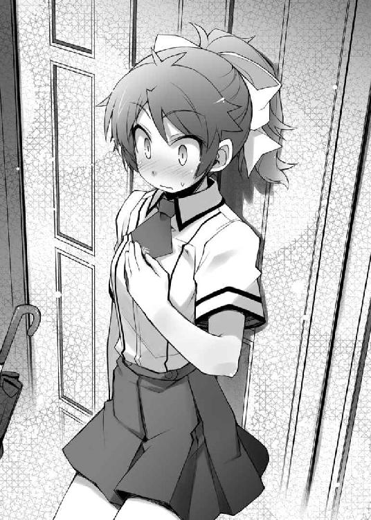
あとがき 井上堅二
本作を手に取って頂き、誠にありがとうございます。小説担当の井上堅二です。
第四巻と銘打ってはおりますものの、今作でついにシリーズ五冊目となりました。こうやって続編を書かせて頂けるのも、全て読者の皆様のご声援と編集部の方々のバックアップのおかげです。皆様、本当にありがとうございます。
では、恒例の謝辞と次回予告を先に述べさせて頂きたいと思います。
イラストの葉賀さん。前回のあとがきを拝見した時に驚きました。まさか、美春がここまでのポテンシャルを有しているとは......！ 今後も作者サービスを是非とも宜しくお願いします！ デザイナーのかがやさん。体調不良の中、無理を言ってすいません。担当のＮさん。色々な事態に臨機応変に対応して頂けて助かりました。今後とも宜しくお願いします。そして、読者の皆様！ 読んで頂けるだけでもありがたいというのに、更にお手紙やアンケートのハガキまで投函して下さる方までいらっしゃって、もはやなんと申し上げて良いかわかりません。お返事はできていませんが、頂戴したお手紙やハガキに書かれているご意見・ご感想は全て拝見しております。読んでいると元気が出てきて、小説を書く力が湧いてきます。大変ありがとうございます。頂いているご意見の中には『僕（私）をＦクラスのメンバーとして登場させて下さい』というものまでありました。叶えてあげられなくてごめんなさい。他にも『バカテス好きな人を集めて会を作ってもいいですか』なんていう嬉しいお手紙まで頂きました。勿論大歓迎です。皆様に楽しんで頂けるように今後も頑張っていきたいと思います。
さて次回の予告ですが、今度はそろそろ明久たちにまともな勉強をしてもらおうかと考えています。僕が言うのもなんですが、彼らはちょっと遊び過ぎです。一応文月学園は進学校なのに。
そんなわけで、五巻は期末試験前のお泊まり勉強会といった話になるかもしれません。メンバーがメンバーなので、真面目に勉強をするとは思えませんが。
とまぁ、挨拶はこのくらいにして、そろそろいつものようなお話を。
実はこの本が世に出る頃には、本作のドラマＣＤが発売されていたりします。
そこで、僭越ながら私、井上堅二（♂）がドラマＣＤ収録にまつわるお話をしてみようかと思います。ではでは、井上堅二のドラマＣＤ収録レポートの始まり始まり～。
電車で移動中に痴漢に遭いました。
ええ。おかしなことを書いているというのはわかっています。僕こと井上堅二は名前からもわかる通り【男】です。女でも秀吉でもありません。誤解なさらないで下さい。
とは言え、これだけではわかりにくいと思いますので、順を追って説明しましょう。
楽しみにしていたドラマＣＤ収録の日。僕は担当編集さんとの待ち合わせ場所に向かう為、電車に乗っていました。昼前くらいの時間で、ラッシュというわけでもありませんが、空席もないような状態の車内。僕は暢気に吊り革に摑まっていました。揺れる車内で考えるのは勿論ドラマＣＤのこと。どんな声が入るんだろう。どんな演技をしてもらえるのだろう。心は既に遠足気分です。
そんな折、不意に自分の背部の腰よりやや下方（決して尻とは認めません）に妙な気配を感じました。
揺れによる接触とは思えない感触。当たるというわけではなく触るという感じ。これは故意でなければありえないタッチです。
思い当たることと言えばただ一つ。スリの可能性です。
僕はいつも財布をズボン右後ろのポケットに入れています。きっと敵は僕の財布を狙っているのでしょう。
当然それを黙って見過ごすわけにはいきませんので、僕も財布のあたりに手をやって相手の手をガードします。スリは相手に気取られたら最後。こうやって気がついていることをアピールできたら相手も諦めるはずです。これで大丈夫。何の心配もいりません。
なんて、思っていたら。
――キュ
などという擬音が似合うような力加減で僕の手が握られていました。
（☆●◆▽┌×!?!?!?）
この瞬間、危機に瀕している対象は【経済】から【貞操】へと早変わりです。男のくせになぜか大ピンチです。むしろ男だからこそ大ピンチです。
（って、よく考えるんだ井上堅二。この手の感触からして相手は間違いなく男。きっと誰かと間違えて触っているはずだ。一睨みしてやれば勘違いに気付いて逃げ出すはず）
そう思って窓の方を向いていた首を動かして敵の顔を睨みつけます。
キッ（鋭く睨む井上堅二）
ニコッ☆（凄く爽やかな相手の笑顔）
サッ（顔を伏せる井上堅二）
なぜだ!? なぜそんなに爽やかに笑える!? あなたは人として間違ったことをしているんじゃないのか!? もしかすると僕が悪いのか!?
こっちが正しいはずなのに目を合わせられない不思議。しかも困ったことに助けを求めることはおろか、相手を摘発することもできません。
仮に今ここで敵の手を摑み、「この人痴漢です！」などと大声で叫んだとしましょう。恐らく周囲の人からは救いの手の前に「いや、おかしいだろ」なんてツッコミが入ることになります。更にその後に駅員さんに連れられて事情聴取なんてされた日には、僕は電話で「痴漢に遭ったので収録には行けません」なんて言わなくてはいけません。男のクセに痴漢に遭って収録に立ち会えなかった原作者で、しかも作品の内容はバカ一色。スタッフの皆様には一生顔を見せることができなくなりそうです。
結局僕は歯を食い縛って耐え難きを耐え、次の駅で即座に電車を降りて逃走。おかげで５分ほど遅くなってしまったものの、なんとか待ち合わせに間に合いました。心にちょっとした傷は残りましたが。皆様、痴漢にはくれぐれも気をつけて下さいね。
そして、気が付けば収録について書くスペースがなくなっているという事実。仕方がないので、そちらはまたの機会ということで。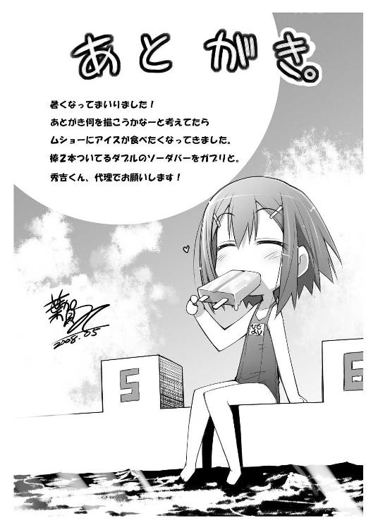
著者
Kenji Inoue
東京生まれの札幌育ち。葉賀さんの作者サービスを糧に日々を過ごす生物。皆様はご存知ないでしょうが、葉賀さんの作者サービスはあれだけではありません。秀吉ウェイトレス笑顔Ｖｅｒ．などのお蔵入りしている秘宝なんかもあるのです......！ それにしても、まさか美春までもがここまでのポテンシャルを有するとは。恐るべし。
イラスト
Yui Haga
春。新入生、新入社員、新学年、新生活。いい響きですね。ですがこんな職業についていると、春になっても何も変わりません。社会から浮いているようでちょっと寂しい......。ところでいつまでたっても担当さんが表紙に男を描かせてくれません。どうしたらいいですか井上先生！ ......いや前回は、その、違う気がします！
電子版 ファミ通文庫
バカとテストと召喚獣4
著者／井上堅二
イラスト／葉賀ユイ
発行者 浜村弘一
発行所 株式会社 エンターブレイン
http://www.enterbrain.co.jp/
デザイン かがやひろし
(c)2008 Kenji Inoue
PUBLISHED BY ENTERBRAIN, INC.
本電子書籍はファミ通文庫『バカとテストと召喚獣4』
（2008年6月11日発行 初刷）を元にして制作しております。